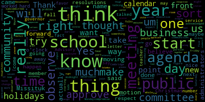
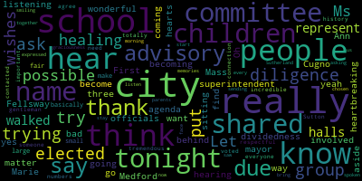

AI-generated transcript of Regular School Committee Meeting June 14, 2021
English | español | português | 中国人 | kreyol ayisyen | tiếng việt | ខ្មែរ | русский | عربي | 한국인
Back to all transcripts
[Lungo-Koehn]: Good evening, everybody. Medford School Committee, June 14th, 2021, Howard Alden Memorial Chambers, Medford City Hall. Regular meeting, 6.30 p.m. For this meeting, members of the public who wish to listen or watch the meeting may do so by accessing the meeting link contained herein. We will post in the City of Medford or Medford Community Media websites an audio or video recording, transcript, or other comprehensive record of proceedings as soon as possible. after the meeting. Additionally, questions or comments can be submitted during the meeting by emailing medfordsc at medford.k12.ma.us. Those submitting must include the following information, your first and last name, your Medford Street address, your question or comment. You can call in by using number 1929-205-6099. Please enter meeting ID when prompted 939-6008 9, 8, 3, 7. Roll call, please.
[McLaughlin]: Member Graham. Here. Member Kreatz. Here. Member McLaughlin. Here. Member Mustone.
[Lungo-Koehn]: Here.
[McLaughlin]: Member Ruseau. Here. Member Van der Kloot. Present. Mayor Langer-Kern.
[Lungo-Koehn]: Present. 7 present, 0 absent. If we all may please rise to salute the flag.
[Mustone]: I pledge allegiance to the flag of the United States of America, and to the republic for which it stands, one nation, under God, indivisible, with liberty and justice for all.
[Lungo-Koehn]: COVID-19 public health update and Medford Public School COVID-19 testing summary and update. Director of Health Services, Ms. Toni Wray. Mr. Gordon is going to turn that on for you right now.
[Wray]: Good evening Mayor, Superintendent and members of the school committee. A lot went on during our year of COVID testing so I will try to be as succinct as possible. The Medford Public Schools in partnership with Tufts University, Medford Board of Health, and Mayor Lungo-Koehn implemented a robust COVID-19 surveillance testing program starting in the fall of 2020 and continuing through June of 2021. Financial support for the program was shared by Tufts University and the City of Medford using CARES and stimulus funding. The model of the program evolved as we moved through the school year. starting with the use of individual PCR tests and transitioning to pooled tests. A timeline. COVID-19 screening using individual PCR tests began in September for teachers of high needs and MEEP students who were returning to in-person teaching. The testing support was provided by Armstrong Ambulance and the Medford Board of Health. And tests were initially administered by the EMTs and soon after we transitioned to a self-swab method. Recruitment of student consent forms began in mid-November, and we started training the school nurses. Site visits were made to all of the schools, and a testing location in every school that met the Board of Health Requirements was identified. The program began testing students on November 30th, 2020, and we still involved the Armstrong Ambulance EMTs, but this time the school nurses joined in with administering the tests. Nurses taught students in grades six to eight to self swab and the students in grades pre-K to five were swabbed by the staff. Testing for high school students began in January prior to the return from the December break. And all students in high school were taught to self swab. As we looked forward to district wide testing, it was apparent that the cost of running the program would be prohibitive. So we examined several cost saving measures. and ultimately implemented them, including the transition to pooled testing and the use of school nurses to administer the tests. Negotiations with Northeastern University School of Nursing were very fruitful. Medford would provide the clinical placement for 76 senior nursing students, who in return would provide testing support to the school nurses. In February, the surveillance program transitioned to the pooled testing method. Members of the positive pools were reflex tested, meaning that they received a rapid test and an individual PCR test the next day. School nurses managed the testing, the reflex testing, contact tracing, education of staff and students and parents, and all the follow-up case management. A brief summary of the numbers. Between September and December 20th of 2020, we did 14,571 individual PCR tests. 62 of those tests were positive, 247 were coded as TNP or test not performed, and 61 PCR tests were invalid. Those tests had to be repeated to get accurate results. Between December 22nd and June 10th, 2021, 8,896 individual PCR tests were completed, 8,624 were negative, 53 were positive, and 219 were test not performed. For pooled testing, we tested 6,019 pools, 5,954 pools were negative, 32 pools were positive, and 33 were test not performed. When you break down or open up the pools to count how many individuals were tested, we tested 58,823 individuals. It's a lot of work. 58,210 were negative, 317 were positive, and 296 were test not performed. In conclusion, school nurses assumed a public health nursing role, even as they maintained their traditional school nurse responsibilities. Positive COVID-19 cases were identified early, prompting isolation, contact tracing, and quarantine of exposed individuals. The percent positivity rate remained extremely low, ranging from 0.01 to 1%, depending on where we were in the school year. Surveillance COVID-19 testing can be efficiently administered in the school setting in a sustainable manner through a pooled testing program. Medford Public Schools takes great pride in the multidisciplinary partnerships that instilled confidence in the public health conditions with the school environment and minimize the disruption to the instructional day to approximately four to six minutes per class time. which we were very pleased with that we were not disrupting students in their educational day. Finally, I'd like to thank the mayor, the superintendent, assistant superintendent David Murphy, Marianne O'Connor from the Board of Health, Chris Sidori and Karen Gradiano from Tufts University, Armstrong Ambulance Company, Northeastern University School of Nursing, Kim Miles, and then the school nurses.
[Gordon]: Ms Wray, we have a surprise for you i'll turn it over to oh my goodness good evening mayor members of the school committee uh when director ray announced her retirement earlier this year she was very clear that uh she did not want any over-the-top celebrations or extravaganzas uh however The work that she has done for our district, particularly over the course of the last year, has truly been singular, and the impact it has had, both in keeping people safe and in instilling confidence in all of us that we would be safe. We have a series of presentations, understanding that there is an agenda that we have to get to later this evening, starting with a gift certificate for Director Ray and her husband to enjoy when they leave the meeting after this first agenda item. Our next presentation is on behalf of our elementary school community assistant superintendent, Suzanne Galusi.
[Galusi]: All right, so I know we're probably all gonna echo the same sentiment when it comes to Tony, but I just wanna say her leadership, she's measured and thoughtful and just so knowledgeable and so collaborative. And as both a principal and in this new role this year, it's just been an absolute pleasure being able to work with her. This is very bittersweet because we're so very happy for Tony, but very sad for us. So this is a little retirement bag of treats for the summer with some cards from elementary students. Oh, how sweet.
[Wray]: Thank you.
[Gordon]: Ms. Bowen, our Director of Pupil Services, and Mariana O'Connor, Director of Public Health for the city, would also like to address tonight.
[O'Connor]: So Tony, on behalf of all the special ed students in the community, all the work that you've done, it's been an honor to work with you and I'm going to miss you and we wish you well on your vacation and your retirement.
[McLaughlin]: We met today about summer school and it was really hard to say anything, but we did it. So I did write down, and I'll be brief, but I have to, Tony. Thank you, Superintendent and Dave and the administration for including me in this, because I'm really happy to recognize your leadership, your hard work, your dedication to the staff and students of Medford School Department on the occasion of your well earned retirement. Six years ago, we became colleagues in protecting the health and well-being of the Medford Schools community. Whether it was meeting as part of the School Health Advisory Committee, implementing youth risk behavior surveys, tackling behavioral and mental health issues facing our students. You remember all the work on the vaping public health crisis? We thought that was challenging. Then along came COVID. You immediately went from being my colleague to being my partner. You jumped in with contact tracing and offered your staff to assist from day one. metric meetings, reopening plans to testing, we quickly became attached to the hip. Your leadership, your support, your counsel on tough positions will never be forgotten. Most of all, the numerous early morning meetings and late night phone calls where often I just needed a friend to vent to and you were always there and my partner became my friend. I can't thank you enough. When I was wavering, you always reeled me in and you stuck with the science and the data and the facts. So in closing now, I just wanna mention something that sticks out in my mind still. On one of many ridiculously early Saturday morning calls regarding testing results, I remember calling you while I was still in my pajamas, looking at the results coming in. You picked up the phone and said, Let me call you back in two minutes. I'm just checking out at the grocery store. I remember thinking, wow, she is amazing. And you are. Enjoy your retirement. You'll be great in this. Congratulations.
[Givino]: Tony, Dr. Cushing has a presentation from our secondary school
[Cushing]: Nurse Wray, there's really not much that can be said that hasn't already been said, but I'll try. On behalf of the Medford Secondary Schools, whose athletics, proms, graduations, and many other events definitely taxed you and the Medford Public Health Board of Health, this is a small token of our gratitude. And I have to say to any and all students and parents watching, all of those events that we were able to pull off were able to be pulled off because of the guidance of Nurse Ray, and her tireless work on behalf of our students to get students tested, to make sure that they were wearing their masks, and to make sure that we were being safe on a daily basis, to beat back the worst pandemic in over 100 years. So thank you, Nurse Ray, on behalf of Medford Secondary School.
[Gordon]: Before hearing from Tony's team, I just want to say there's never been a meeting that we've been in where in the course of whether it's setting up testing or responding to emergencies, the most constant refrain coming out of Tony's mouth has been the gratitude she has felt for her team, the strength of that team, the talent of that team, be it in the school nurse's office or sometimes on the way to school responding to various emergencies.
[Givino]: And the school nurse team is here to make that presentation.
[Van der Kloot]: Hey, Tony, you wrote this article. It's for you. Thank you so much. It's been quite a year. I work with Tony and Lawrence. I followed her in one of the schools, and I followed her here. And I'm so glad I did. We just appreciate all you've done for us. You're always there to answer the phone and guide us through all the complex problems we've had. We really appreciate everything, Tony. We're going to miss you. Thank you for guiding us through a pandemic relentlessly.
[Yeager]: Almost. So, Tony, on behalf of the central office team,
[Gordon]: We came down to two ideas for recognizing you. The first was to line up all of your friends, family, and colleagues, and ask you to give us all one final ceremonial nose swab. And that got voted down. So instead, we are presenting you with, and I bet this is the only time you're ever given this as a gift. These are in bronzed N95 masks. They're also why the superintendent's conference room smells like spray paint. Because we know so much about Eric's room. We've got the windows open. We're going to be fine. And just the inscription reads, Nurse Toni Wray, MSRN, NCSN, Medford Public Schools, 0.01 to 1% positivity, depending on the week. 100% of Mustangs grateful, so. Thank you. We have some presentations from the school committee, the mayor and the superintendent as well.
[Wray]: I wanted an Irish apologist.
[Lungo-Koehn]: Member Kreatz? Maybe you could speak into the microphone, Member Van der Kloot, please?
[Van der Kloot]: Kathy and I have the honor to present to you from the House of Representatives. Be it hereby known to all, the Massachusetts House of Representatives offers its sincerest congratulations to Toni Wray in recognition of your years of dedicated and outstanding service to the Medford Public Schools. The entire membership extends its very best wishes and expresses the hope for future good fortune and continued success in all endeavors. Given this 14th day of June, 2021 Robert Leo Sean garbled a Christine Barber and Paul Donato Tony, I just want to take a second to say in addition to these words, you have just been invaluable. It is so wonderful to see your entire team here too. And I'd like to express our thanks to every one of you as well, because that's what Tony would want. So Tony, thank you. Thank you so, so much. Thank you for all of your work up to the pandemic. And then thank you for getting us through the pandemic. Tony worked tirelessly. She worked on weekends around the clock to make sure that our students and teachers were safe. Thank you so much.
[Kreatz]: Yes. Thank you so much. Thank you so much for everything you've done. You've been so wonderful to all the students, the staff, the community. You're just a wonderful, amazing person. I wish you the very best in retiring. The very best. Thank you so much.
[Lungo-Koehn]: Member Graham?
[Graham]: I don't know how much more we have to say, but the governor would like to let you know, on behalf of the citizens of the Commonwealth of Massachusetts, I am pleased to confer upon you this governor's citation in recognition of your eight years of outstanding and dedicated service as the director of health services for the Medford Public Schools.
[Ruseau]: I think there's a competition at the Statehouse for size of documents. So the Commonwealth of Massachusetts State Senate official citation, be it known that the Massachusetts Senate hereby extends its congratulations to Toni Wray in recognition of your dedication and support of the students, staff, and families of Metro Public Schools. And be it further known that the Massachusetts Senate extends its best wishes for continued success that this citation be duly signed by the President of the Senate and attested to, and a copy thereof transmitted by the Clerk of the Senate. Signed by President of the Senate, Karen Spilka, Clerk of the Senate, Michael Hurley, I should know that, and State Senator, Patricia Jaylin.
[Muzo]: Tony, I just wanted to add that, you know, you always have a way of making parents feel safe while you're taking care of their children, and I know that.
[McLaughlin]: personally because you were so gracious taking care of our little girl when she had to have a body cast in a wheelchair for two months and you and your staff with her open wounds and everything else, you just made us feel confident handing her over to you. And we know that you make every family feel that way. And that has been really special. So thank you so much.
[Lungo-Koehn]: Ms. Ray, you are so awesome that Congresswoman Clark even did a citation for you. So I was just gonna read that if you don't mind. On the occasion of your retirement as Director of Health Services for Medford Public Schools and in recognition of your outstanding contributions during the COVID-19 pandemic, congratulations on your retirement. And this is from my office. If I just may say a few words as well, I echo all the sentiments that everybody has said. You've been there for me, you've been there for the superintendent, the administrative team, your staff, and Ms. O'Connor. At Board of Health, we don't know what we would have done without you. When we wanted to get the kids back to school, you all made it happen, and you made it happen safely for us parents, and we will be forever grateful because students had the best year they could ever have because of your department and your staff. Thank you. Please don't give Ms. O'Connor any ideas about retirement.
[Hunt]: But I do have a citation.
[Lungo-Koehn]: Be it known to all who read that I, Breanna Lungo-Koehn, hereby sends her most heartfelt congratulations to Toni Wray in honor of your retirement. I offer this citation with deepest gratitude and thanks for the difference you have made for almost eight years with the district, and especially the leadership and guidance you provided the district throughout the COVID-19 pandemic over the last year and a half in Medford.
[Edouard-Vincent]: First, I want to say thank you. Thank you isn't even enough, but just thank you for your service, your faithfulness, your dedication to Medford Public Schools. As was said earlier, your job was not a Monday to Friday. It was Monday all the way again to Monday all the way again. It was seven days a week, receiving the texts on the weekends, communicating with you, especially when things were, you know, when we were having our little hotspots. So I thank you so much for all of that time where you weren't publicly recognized, but you were doing the work because it needed to get done. So thank you for that. I am so happy to see the wonderful nursing crew here. central office and administrators here. They have come out to support you and to really show their true love and support for all that you have done. We have a small, small token that the vocational school, Mr. Fallon, they worked on. So it's engraved with the city seal and it says, for leadership in sickness and in health. And with sincere gratitude, Medford Public Schools, Tony B. Ray, MS, RN, NCSN. I also wanna say since so many of our administrators are here, last year, the school year ended abruptly And since I've been here, I selected an administrator of the year. Last year, we were unable to do that. And so for school year, which was last year, 2000, 19 to 2020. I am pleased to announce today formally that Miss Toni Wray was recognized as the administrator of the year. And for school year 2020-2021, yes, Miss Toni Wray is being recognized again. So we'll get that to you. Thank you so much. Thank you everyone for coming out. Tony, would you like to have the floor?
[Wray]: All I can say is thank you. I've had a long career in the schools. It was preceded by a long career in the hospital. I'm really looking forward to the next adventures and I will be around here and there to help out, but. Yes. Yeah, I've had a lot of, you know, worked with a lot of great people. I've learned a lot. And, you know, coming from the hospitals, you always wonder, is this going to be a stimulating place to work? And it has been. And I've learned a lot. And I really appreciate everybody's support. Thank you.
[McLaughlin]: Mayor, can I make a motion for a five-minute recess, just so everyone can get out and we can go to the restroom? Motion for a five-minute recess.
[Dizzo]: Can I get a second?
[McLaughlin]: Thank you.
[Dizzo]: Seconded by Member Ruseau. Roll call.
[McLaughlin]: Member Graham? Member Kreatz? Yes. Member McLaughlin? Yes. Member Mustone? Member Ruseau? Member Van der Kloot? Mayor Lungo-Koehn?
[Lungo-Koehn]: Seven in the affirmative, zero in the negative. Five-minute recess. We will come back at 7.04. We'll follow you.
[Cugno]: Oh yeah, yes.
[Van der Kloot]: We took a roll call.
[Lungo-Koehn]: Member Mustone.
[Mustone]: Yes, Mayor. There are a number of seventh graders on Zoom, global scholars who have a petition for us. So if there could be a suspension of the rules to have the students on Zoom make their petition.
[Lungo-Koehn]: Motion for suspension of the rules by Member Mustone, seconded by Member McLaughlin. Roll call, please.
[McLaughlin]: Member Graham. Yes. Member Kreatz. Yes. Member McLaughlin, yes. Member Mustone. Yes. Member Ruseau.
[Mustone]: Yes.
[McLaughlin]: Member Van der Kloot. Yes. Mayor Lungo-Koehn.
[Lungo-Koehn]: Yes. Seven the affirmative, zero the negative. Motion is approved. Dr. Cushing is here to present. Member Van der Kloot.
[Van der Kloot]: Before we do that, after that, as we're taking things out of order, I would ask that we move on to the presentation of the advisory committee.
[Lungo-Koehn]: Of number nine, old business, absolutely. Is that a motion? Is that a motion on the floor, seconded by? Second. Second. Member McLaughlin, roll call, please. If you'd like to speak. Yes.
[Ruseau]: Member Ruseau? We have several other items on the agenda, including one that if we don't vote on tonight, it means it'll be an entire year, which children will not be eating in our school system. So do we want to take that one up at 1 AM?
[Van der Kloot]: Mayor, I am happy to stay here to get to the entire agenda, no matter how late we go. But in the meantime, we have an audience. And we know why they're here. We have an advisory council. We know why that we're here. We've already asked them graciously, not really asked, but They graciously sat here for our wonderful presentation to Toni Wray. We wanna take up our seventh graders and that I think it's only appropriate. I guarantee you to my colleague, we will get to everything on the agenda. No one's gonna rush out of here.
[Lungo-Koehn]: Motion for approval, seconded by member McLaughlin, roll call. Member Ruseau.
[Ruseau]: I am perfectly fine, but if that means we're here when the sun comes up, I'll hold you to it.
[Lungo-Koehn]: Okay.
[Ruseau]: Thank you.
[Lungo-Koehn]: No problem. roll call please. Member Graham.
[McLaughlin]: Yes. I'm sorry. Member Kreatz. Yes. Member McLaughlin. Yes. Member Mustone. Yes. Member Ruseau. Yes. Member Vanden Heuvel. Yes. Mayor Lungo-Koehn.
[Lungo-Koehn]: Yes. Seven in the affirmative, zero in the negative. Motion passes. Dr. Cushing.
[Cushing]: school committee. A few weeks ago I received an email from one of our seventh grade teachers at the McGlynn Middle School making me aware of the projects that our students in the Global Scholars Program had been working on and I felt that it's very important that we bring these students forward to you as representatives to their students. I also think that it's really great that we have such a large audience tonight for all of Medford to see the great things that our students are doing. As we mentioned last week at the strategic plan, everything has a focus on student learning and improving student outcomes. So this evening, I wanna turn it over, they're on Zoom, so turn your attention to monitors, but I'd like to turn it over to Mr. Villard, Mr. McCarthy, and the three students that they will introduce. Thank you very much, and take it away, Mr. Villard, Mr. McCarthy, and our students.
[Villard]: Thank you very much, Dr. Cushing, and thank you school committee for your time and your attention. As Dr. Cushing said, this presentation, the letter that the students will read is the culmination of a global scholars program that all seventh graders complete. This is our sixth year running the program, and it always ends in the spring with a community action project, where the students are asked to design and complete a project that will improve their community in some way, and they generally have an environmental focus. This year we had trash pickup groups, we had folks working with recycling in our cafeteria. We have projects across the spectrum, but I had one particularly ambitious group who would like to make a request of the city after learning about climate crisis and learning about different ways that we can be involved as a city. to improve our response to that. So I thank everyone for your time. And without further ado, I'd like to give it away to Kevin, Pedro, and Leila, who are here to read the letter. And they are supported by at least a dozen of my students who are also here just in support of this project, whether they were a part of this particular one or not. So Kevin, please go ahead.
[Azizi]: Medford school committee members. We are a group of seventh grade students at the McGlynn Middle School and we want to take action for the climate crisis.
[Oliveira]: The climate crisis is a global issue that is causing changes in temperatures, climates all over the globe. And these changes are damaging ecosystems and affecting lives everywhere. This is why we are here tonight asking you to take one step that will help to mitigate its harmful effects. The climate crisis is being caused by human activities like deforestation and burning fossil fuels. This includes our unsustainable transportation methods in order to reduce the problems that it's causing. We have to quickly work to enact all the solutions we can.
[Fede]: Our class decided to come up with an action that we think is most suitable and effective. One helpful action we ask you to take is adding more public electric car chargers throughout the city. This makes car electric cars easier to own. Electric cars have been considered as a good idea before and now they are being encouraged more than ever. Recently, major car companies like Ford have announced that they are planning on selling more electric cars. This could have a significant impact on the amount of gasoline cars that are being sold and the cost as well as reducing the gas emissions in the environment.
[Azizi]: By having more charging stations available to everyone, more people will be willing to buy electric cars. We would like to have electric car charging stations added at all of the elementary schools, middle schools, and at Hormel Stadium. We think this is the right choice because it would help make transportation in this area much more sustainable. Electric car charging stations need to be spread around strategically since the amount of miles you can travel with one charge can be more limited than with gasoline cars. Owning and charging electric vehicles is more convenient when electric car chargers are more available.
[Oliveira]: The state of Massachusetts is aiming to make electric car stations widely available. The state of Massachusetts will fund up 100% of the cost up to $50,000 for each address for the hardware and installation of government owned electric car stations. It's important that they have to be on public property and accessible to the public. That means that they can be available at school lots and hormonal because they meet that requirement.
[Fede]: The climate crisis is happening right now and continuing to the future. Unless we unite and enact solutions immediately, we won't be able to have a safe environment. Electric cars are one of the many solutions for climate crisis that we need to promote inside our Medford community. One of the best ways to make this solution more effective is to spread EV stations throughout the city of Medford. That includes putting them in schools. This will be easier to achieve than it looks because the state of Massachusetts pays for 100% of the cost for EV stations. Thank you for listening and we hope that you consider our request.
[Lungo-Koehn]: Member Ruseau.
[Yeager]: Thank you.
[Ruseau]: This was an excellent presentation. I have to admit, I was completely shocked that the state of Massachusetts won't pay for 100%. We don't usually get a lot of things that don't cost us anything coming before us. I drive an electric car, and the challenges around charging are very real. I don't have off-street parking. I don't have a home charger. And it is a real problem. We certainly don't want electric car uptake to only be for people who have off-street parking garages. That does not describe most of the residents of Medford, so I'm very excited by this. I do have a question around authority. Do we simply make a vote to say we want one installed at every parking lot that we have authority over, whereas the city, I don't actually know legally what's involved.
[Lungo-Koehn]: I have an update from Ms. Hunt, but please speak.
[Hunt]: You might be answering it. Just about Hormel, I thought the Hormel Commission wouldn't be under our purview.
[Lungo-Koehn]: No, that will be under Hormel Commission, but that's the next location they're looking for. They're looking to do Hormel Stadium. We are, we do have charging stations at the VOC. And Ms. Hunt, who is the new Development Planning and Sustainability Director, is interested in looking into putting it into the schools. She'd like to know what percentage of teachers and parents would use them. and wants to assess the parking situations at some of the schools, but she's happy to, she wants to put them all over the city. So she's happy to look into this. I let her know the seventh graders would be, scholar program would be presenting to us tonight. And she is excited to learn more and look into seeing where else we can have them, including our schools. So maybe we can send a motion to member Rousseau.
[Ruseau]: Thank you. I'd like to make a motion to, well, first of all, it would be helpful to, we get an email or something about whether or not this program expires, if there is an expiration date, what it is, because I think that would affect the urgency with which we want to take advantage of it. If it doesn't expire over the summer or something, then I think a little bit more planning makes sense. But I would certainly make a motion to have at least one electric car charger installed at every single public school building parking area. I mean, we can assess whether that's enough, but, you know, teachers and staff that are considering buying a new vehicle, charging at work is where I always charged. And then when the pandemic hit and I couldn't go to work, it was a real problem, but our teachers are still coming to work. And so I think that taking that out of the equation for them when they decide whether to buy a new vehicle is really critical. So I would make a motion that we install one per building within the confines of the I don't know the law or whatever that's reimbursed.
[Lungo-Koehn]: Motion for... Member Van der Kloot?
[Van der Kloot]: Yes. The only thing is, I wondered whether we should specify one, because if there's one or more, or because sometimes if you're putting in one, putting in a second one might not be that. So I don't want to limit it.
[Lungo-Koehn]: One has two charging courts. Oh, so it charged two cars. I just started parking is limited in some of the schools. So we'll have them assess the legal motion. Seconded by member Van der Kloot. Roll call.
[McLaughlin]: Member Graham. Yes. Member Kreatz. Yes. Member McLaughlin. Yes. Member Mustone. Yes. Member Ruseau.
[Ruseau]: Yes.
[McLaughlin]: Member Van der Kloot.
[Van der Kloot]: Yes.
[McLaughlin]: Mayor Lungo-Koehn.
[Lungo-Koehn]: Yes. Seven in the affirmative, zero in the negative. Thank you so much to our seventh graders. That was an amazing presentation.
[Yeager]: Very proud of you.
[Lungo-Koehn]: Before I call the next item, I just wanna let any speaker that would like to speak know just to make your name and address for the record. If you would like to participate through Zoom, we ask that you use the raised hand function. Dr. Edouard-Vincent will be on the laptop to see who wants to participate in Zoom. If you're present, you can just form a line like you would do at any city council meeting. We also have 27 emails that have come through that are going to be summarized and read into the record as best as possible through summary. We're going to take probably three people present, and then we'll go to Zoom, and then I'll turn it over to you, Ms. Finch-Klute, and we'll just take it in order. And that's obviously after the presentation. Each member can speak on this one time for for up to three minutes. We have miss evangelista who's here keeping time. We're going to keep to that because 27 plus online plus here we we have several hours ahead of us. I'm sure I'm asking everybody to just please be respectful. No name calling no swearing. If that happens, I'm going to have to just shut the microphone off where I'm going to really try to be respectful. We have three amazing options to rename the Columbus school and we hope to get that job done tonight. Mayor.
[McLaughlin]: Mayor.
[Lungo-Koehn]: Member Ruseau, then Member McLaughlin.
[Ruseau]: I would just also, I think it'd be good to also remind that lots of children are watching, especially the Columbus students. I think they're, they're all glued to their TVs, I think.
[Lungo-Koehn]: There may be students watching. Yes. So yeah, please. Thank you. Member McLaughlin. I'm all set. Thank you. Okay, this is number nine under old business presentation by the advisory committee to rename the Columbus Elementary School followed by a vote by school committee members to select the new name. I'm gonna turn it over to our chair, Mr. Jim Lister. Here we go.
[SPEAKER_48]: It will turn.
[Lungo-Koehn]: And I think before you start, a thank you needs to go out to you, Mr. Lister, as well as the 20 plus advisory committee members that have spent countless hours crammed over the last month, month and a half and all your hard work. So we really appreciate that. Thank you.
[Jim Lister]: All right. Thank you. Thank you, mayor. Thank you, superintendent, school committee members. We've chosen Ron Giovino to do our MC tonight for our presentation. Okay.
[Lungo-Koehn]: Mr. Givino, thank you. Just name and address for the record. We'll start off right now.
[Givino]: Ron Givino, 326 East Porter Road, Medford, Massachusetts. Madam Mayor, Superintendent, members of the school committee, good evening. Thank you for giving us this opportunity to present tonight. On behalf of the Columbus Elementary School Renaming Advisory Committee, I would like to introduce the advisory board members who are either here in the hall tonight or watching us on Zoom. You've already met our chairman, Jim Lister, Dr. Kathleen Kay, Columbus School Principal, three brothers, Dr. Grace Paldara, Paul Donato Jr., Josie Dupor, Beth Fuller, Janelle Golan McKenzie, Erin Genia, Matthew Havistar, Seth Hill, Lou Intapa, Leroy LaFleur, Kenneth Mallon, Patrick McCabe, Melissa Miguel, Danielle Puccio, Maria Rocha, Laura Rotola, Kristen Scalise, and Kathleen Shaughnessy. We're here to present to you the work we have accomplished over the past six weeks and the final names that we are recommending for the renaming of Christopher Columbus School. Our agenda tonight, is our mission statement, some background information, our process, which will include receiving and review, how we received and reviewed public submissions, scoring rubric, public participation, discussion, final selection, and our three recommendations. I'd like to turn the mic over to our chairman, Jim Lister.
[Jim Lister]: Okay, our mission and goal, the advisory committee was charged with the task of choosing up to three possible names for consideration as the new name of the Columbus Elementary School. The process included vetting names submitted by consideration by the community, soliciting feedback from the community, as well as Columbus teachers and students and weighing the relative strength of submissions against criteria we developed. The criteria included, potential for the name to bring the community together, the potential for the name to stand as a role model for the Medford students, and the potential for the name to represent the Medford community's proud history. Okay, the next slide is gonna be done by Maria Rocha.
[Rocha]: Hello, my name is Maria Rocha, 3620 Mystic Valley Parkway. So some background. During the June 15th, 2020 school committee meeting, school committee members voted six to one to rename the Christopher Columbus school by July 1st, 2021. On March 10th, 2021, the school committee voted to create the 23 member advisory committee with the previously mentioned mission and goal of choosing three names up to three names, meeting the explicit criteria as outlined in the charter. On March 16th, the applications for the advisory committee as well as a suggestion form for the new names were opened for the public. The application was open for one month and on April 16th, 2021 at 5 p.m., both forms were closed. 10 days later on April 26th, the advisory committee was officially formed and the 23 members were named. The committee met six times between May 4th and June 8th, 2021. Next slide, please. So the original community suggestions form that was open from March 16 to April 16 the committee reviewed the community survey and created a list of 66 unique name submissions for the advisory committee to review. As outlined in our charter, the advisory committee was to vet these 66 names as candidates for renaming the school and could not consider names outside of these submissions. On May 4th, the advisory committee adopted a resolution put forth by Dr. Grace Caldera, outlining the process to research all the names and reduce the list down from the original list of suggested names. The first reduction of the list was to remove all current living suggestions and suggestions made in bad faith And then the remaining names were randomly assigned to five committee members to evaluate and score the names based on the following rubrics. And our next presenter will be Dr. Grace Caldera.
[Muzo]: Hi, Dr. Grace Caldera, 33 Governors Avenue, Medford.
[Van der Kloot]: So this is our rubric, and it was used by our committee to evaluate the names of the submissions. The rubric outlined three different criteria. the potential for the name to bring the community together, two, the potential for the name to stand as a role model for Medford students, and three, the potential for the name to represent Medford community's proud history. Each one of the criteria had a scoring range from one to four, four being the highest a name could receive in any category, and one being the lowest score that a name should have received. Thus, the top score of any one suggestion that they could receive is a 12, and any name with a 12 would be significant to multiple historically marginalized groups and not polarizing, known for exceptional deeds, community involvement, or contribution to society with a historical notable legacy that would last decades, or if it wasn't a person, it would still have historical significance that would last decades. And lastly, if it was a person, They would have lived in Medford with a Medford specific reputation, or if it was not a person, it would have a long standing ties to Medford with a positive history.
[Muzo]: Next slide.
[Van der Kloot]: Our public participation process. After all of the names were scored, the top scoring 15 names were to move on with the public participation. However, due to a tie, we ended up with a top 17 names to move forward. And then after looking at the list, we realized we had accidentally removed a name that should have been considered. So we therefore added that name on to continue with the process, leaving us with 18 names to present to the public. On May 11th, the committee adopted and formalized a process of how we should receive public input on those 18 names as outlined in a resolution brought forward by Heinrich Ginnies. And a subcommittee was established to create the public input form. And the survey was open for one week to collect written responses for or against any of the 18 names. The survey itself was translated into Spanish, Haitian Creole, Arabic, and Portuguese. There were hard copies also made available at Medford City Hall and the superintendent's office. And overall, the committee received over 1,200 online responses and 39 paper submissions. The top 18 names were also independently researched and rescored by each of the committee members. via the process previously described by the rubric, all 23 members of the advisory committee did this. The scores were then collected, averaged, and ranked as one point for the committee members to consider. The committee then moved forward to reduce the finalists down to the Using an adopted process as outlined and brought forth by Patrick McCabe, the committee started with a list of names in alphabetical order, and if a committee member had stated that that name was their top three, that name would remain in consideration. If no one on the committee said they would include that name in their top three, that name was stricken from the list. This reduced the official list down from 18 to 13 names, And next, every committee member was given up to three minutes to advocate for which nominee or nominees they thought should be sent forward to the school committee based on their own research, the rubric and public input. Each committee member voted for one of the nominees. And after the first round of votes were recorded, only three of the candidates had received a vote. And a motion put forth by Paul Donato Jr. was made that we should just accept those three and send them forth. And that was adopted and the three names that received votes were on the board. And so our first few names that, these three names were Missituk, Jean Barry Sutherland, and Belinda Sutton. The first of the three names here for you tonight is Missituk. The land that the city of Medford sits on was inhabited by the Massachusetts tribe and other Native Americans for thousands of years. The indigenous people that lived on the land called the river Missituk, which means Great Tidal River. As English colonists came to the area, the name of the river was altered in a more familiar English word, Mystic. The river has been very important throughout the history of Medford, and it was used for fishing and for water by the indigenous tribe, and then by the colonists, and it also became essential for trade. It became a subject of poems, such as, Over the River and Through the Wood, and Paul Revere's Ride. This river has been a source of community pride for centuries. The Missituk River, as previously mentioned, has been bringing people together. It was a source of the food and water for indigenous tribes and the first colonists. It then became a place that allowed Medford to take part in trade industry, being a port and preparing goods to ship out and even building ships. The city of Medford grew because of the Mistook River. And today, the river is used for walking, hiking, boating, fishing, and other various community events. There is a widespread effort underway to continue to work to restore the river and the land surrounding it. And by using the Native American name, Misutuk, we are taking time to honor those who had originally inhabited these lands and taking a step to acknowledge the past and as we do this, stepping into the future. These are just three responses that we received from the community input survey. There were so many wonderful responses. And even though that this was not a vote, all of these responses were used and considered and provided the committee wonderful information into getting us to these final three names. These three quotes here really exemplified why Missittook is a positive influence, not only for the city and for the students of the school, but also for the rest of the children in the community. Some of the feedback expressed that it was a reflection of the river and how the river has been a focal point for our community for centuries. People also shared that it acknowledged the native people for who originally inhabited this land. And it also provided a physical connection between our past and our present. It was also shared that people liked it because it wasn't a single person. but rather it celebrated a shared space and an aspect of a physical environment. And lastly, Missittook represents Medford's proud history. As previously mentioned, the Missittook has been here long before Medford has even existed. The Missittook watershed was home to the indigenous people of Massachusetts prior to colonization of the area by the Europeans. The name may have morphed into Mystic, but it does not diminish the role or the value of the Missitook River and what it has played in building Medford by providing resources of not only food, but also trade. The river powered tide mills that allowed for the process of corn, tobacco, textiles, and wood. It was the home of the first bridge over the river, allowing the city to play a key part in the founding of this nation. The river is also the subject of well-known poems and stories. And while the river may now be known as Mystic, the name Mistituk gives nod to those who came before us, honoring them and acknowledging their language and homelands. It's a reminder that Medford's history didn't start when the Europeans came here. It began long before the first boats arrived.
[Givino]: The next name that the committee is presenting to the school committee is Jean Barry Sutherland, a beloved educator, community leader, and principal for the very elementary school we are process of renaming. Jean was actively involved in Medford for over 30 years. In 1969, she became a teacher at the Gleason Elementary and then moved on to teach at the Waite Elementary School in 1970. She was a teacher at the Waite Elementary for 11 years In 1981, she went on to teach at Dame Elementary, where she later became assistant principal and then principal in 1998. In 2003, when the new Columbus Elementary School on Hicks Ave opened, she became the very first principal for the next three years until she retired in 2006. Throughout her lifetime, she was an active member of the community and was involved in a number of community efforts including, but not limited to, the Thursday night, fortnightly Club of Medford, the Women's Club of Medford. Jean was vice president of Medford Health Matter, as instrumental in gaining many grants for the city to combat underage smoking, drinking, substance abuse. She was involved with the annual Santa Polar Express and the Medford Jingle Bells Festival. Jean also represented Medford at a cultural exchange with our sister city, Novioka, Japan. Jean had a kind heart and would go the extra mile for her students. She greeted them and their parents with a hug or a handshake. She went above and beyond her typical classroom duties and even spent time over the summer to help paint and maintain each of her schools. She was an active member of the community working to make Medford a better place through her numerous community efforts, like anti-smoking campaigns, interest in creating dog parks, reading stories on the Polar Express to help raise money for Hallmark Health, and working on improving elder services. One example of what Jean worked on was a $5,000 grant to Medford for work against underage smoking. She also fought to shut down a convenience store on Salem Street for three weeks due to their sales of cigarettes to minors. She would also often encounter students who had ridden their bikes to her house just to say hi or even stay for a longer visit. Jean brought the community together as a loving wife, daughter, neighbor, teacher, and community leader. Jean Barry Sutherland was a passionate advocate for special education and the needs of the Medford children and their families. The testimony of the community played an important role in choosing all three finalists. Jean received great feedback and wonderful responses. Picking just a few to highlight was very difficult. I will not read from the small sample up on the screen. The feedback for Jean included, but was not limited to, many of the people Jean passed in her path through life. For those who feared going to school for the first time, to the student who feared just being in this country for the first time, who writes how Jean made a huge difference in his transition to America. There were submissions from many students who wrote that Jean played a role in their decision to become teachers. Or the firefighter who credits Jean with helping him become the man he is today. Many students wrote about the difference Jean made during trying times in their home lives, or how Jean helped them overcome their personal challenges. And of course, the many responses from Jean's colleagues who talked about her leadership and guidance. Jean Barry Sutherland was undeniably a positive role model for Medford. Jean Barry Sutherland will always be associated with the soon to be renamed elementary school on Hicks Ave. She was the first principal of that building, and because of that, she shaped the culture of the school, not only for the kids, but for the teachers in that building that can still feel it today. She was a wonderful educator who helped serve the community in her fight against underage smoking, drinking, substance abuse. Jean will also be remembered for her involvement in the summer food program in Medford, which brought proper lunches to those in need up to the age of 18. She was a powerful advocate for special education. Jean welcomed children in citywide special education programs to her school. She knew their IEPs. She often attended IEP meetings. In addition, she attended the weekly meetings with the special ed consultants. Jean was an inspirational leader who led by example, action, and consensus building. Having the name of Jean Barry Sutherland on the school will give the children of Medford an example of someone who not only helped make a big difference in Medford, she did it right from the corridors of the very school we are to rename tonight.
[Orlando]: Next. Next will be Maria Rocha.
[Rocha]: Belinda Sutton was born in 1713 in Western Africa, what is now known today as Ghana. At 12 years old, she was kidnapped, survived the horrific Middle Passage, and was brought to the Americas to be sold into slavery. She was enslaved by Isaac Royal and his family for roughly 50 years, first in Antigua, then at his estate in Medford. While there are no portraits or pictures of Belinda Sutton, the picture on the slide from the Royal House is a conception of her working in the Royal House. In 1781, when Isaac Royal Jr. died, Belinda was offered her freedom and she took it. As a free woman, she was to receive 30 pounds so as not to become a ward or burden of Medford. Due to the fact that she was enslaved, Belinda never learned to read or write, but she knew that she had a right to be paid what she was promised. She petitioned the state a total of five times to get what she was owed. As the Ghana Museum stated, Belinda Sutton's eloquent petition of 1783 is among the earliest narratives by an African American woman. It has inspired poets and fascinated histories. It has been seen by some commentators as the first call for reparations for American slavery. And it opens a rare window onto the life of an enslaved woman in colonial North America. Next slide. Belinda Sutton brings the community together as a Black formerly enslaved woman who was forced into Medford, not of her free will. Yet, as a free woman, she chose to stay in the area. Despite the horrific experiences she faced while being enslaved, she ultimately chose to make the Medford area her home. Using this name for the school on Hicks Ave acknowledges Medford's role in a horrific time in American history, but does so while celebrating a bold, brave, and inspiring woman. And she can undoubtedly serve as a positive role model for all of Medford. These two responses were taken from the numerous public input survey responses written in support of Belinda Sutton. And they truly exemplify why she is a role model, not only for the students at the school, but for all children in this community. These comments reflected on how she was able to accomplish these incredible feats after being denied the privilege of education, personhood, and independence for so long. Naming a school after her will remind students how powerful the education that they receive in the building is. The quotes also discuss how notable her 1783 petition was and how it was such a courageous act. A few other public comments not listed here mentioned how proud they would be to tell her story to their children and how they are inspired by her actions to address the injustice that she was facing. She is an inspiration to people of any race, sex, or religion to keep fighting for what you believe in. Belinda Sutton represents the Medford community's proud history, in spite of the fact that the circumstances under which she was brought here were not. She was enslaved on the Royal Family Estate, which was previously known as the Ten Hill Farms. And this estate covered 500 acres in Medford. As previously mentioned, her children were both baptized at a church in Medford, and those records are the earliest documents we have of her. As the Royal House has stated, Belinda Sutton is the best known resident of the Royal Estate, and while we know more about her than others who were enslaved, we still know very little. Most of what we know comes from her brave petition to the Massachusetts General Court, where she gave her public statement. This petition is historically notable worldwide and is an extremely rare document that is forever linked to the city of Medford as a sign of courage and bravery that is an inspiration for anyone. She is a model of courage, perseverance, and is a symbol of the freedom and equality that we as a community and all the children at the schools strive to reach every day.
[Givino]: As we close, we'd love to thank the members of the public for all their wonderful suggestions and responses to the public input. We also wish to thank you, the school committee, for your time. I'd also like to thank Lisa and Susan for the, couldn't be the easiest customers you've ever had, but I'll risk it. That concludes our presentation. We're happy to answer any questions that the school committee may. Thank you very much.
[Lungo-Koehn]: Thank you very much, Mr. Giovino. and all the presented. Are there any questions or should we open up to public comment? Member McLaughlin.
[McLaughlin]: Thank you. I want to thank the members of the Columbus Renaming Committee for the excellent presentation. Three fascinating and incredibly wonderful choices, and it's a great position to be in to be able to have three choices to choose from. I did want to note that the beginning of the presentation, I believe it says that the vote to rename the Columbus School was six to one, and if I'm not mistaking, I think it was unanimous.
[Yeager]: seven to zero.
[McLaughlin]: It was not it was six to one. So my mistake. Thank you. Thank you for the presentation.
[Lungo-Koehn]: Member Van der Kloot, would you like to start us off with three emails? Oh, yeah. Sorry.
[Kreatz]: Yes. Yes. I wanted to thank personally thank the advisory committee for all their hard work in volunteerism. You know, you spend, you know, hours just sorting through all the information and we really appreciate everything you did. I do have a question or just something I wanted to share. I was, over the weekend, somebody shared with me that one of the names is Mr. Duck, and I guess there's a proposed bill that is, you know, coming out where the Board of Elementary and Secondary Education is going to promulgate regulations to ensure that no public school uses athletic name, logo, or mascot, which names refer to or associated with Native Americans, including Native American cultures and specific Native American tribes. I'm not sure where this bill is right now, but I just wanted to mention it where if this is gonna be coming a regulation, that you know possibly in the near future if we were to choose a name like that we might have to have another renaming committee in the future. So I just wanted to share that. Thank you member Kreatz.
[Van der Kloot]: Yes, so at the present the 27 letters have ballooned over 40. So I'm going to I'm going to condense them where appropriate. first from, and I'm starting from the ones that, the first one that came in was from Carrie Parker of 6 Hurlcross Ave. She said, I am writing to you because I want to support the renaming of the Columbus Elementary School at tonight's school committee meeting. The school committee set up a transparent process carefully naming the committee, and the committee did extensive work to identify three possible names that reflect Medford. They are inclusive, positive, and anti-racist. I am proud that Medford is taking a step forward. and look forward to seeing the committee's work completed. That's Carrie Parker, 6 Earlcroft. The next one is April Evans of 46 Brewster, April Evans and David Douglas. And they too support the renaming effort. They do not specify, neither letter specifies the preference and choice. The third letter is from Lizzie Wyatt of 134 Auburn Street. She has two children who attend the Columbus Elementary. She strongly supports the Columbus School renaming and she would prefer the Belinda Sutton School. I deeply appreciate that we have the opportunity to honor a former slave who represents an important part of the history of our community. So thank you for the opportunity to offer these comments. The next one is from Michael Glenn. I like the idea of changing the school's name. I support Jean Barry Southerland. And I'll do one more right now. My name is from Julie Bogart and I live at 132 Auburn Street. My daughter is currently a first grader and my son will start kindergarten there. I am writing to express my strong support of the current effort to rename the Columbus. I urge the committee to consider Belinda Sutton as the new school name. because I can't think of a better way to both honor Medford's often unrecognized history and celebrate the diversity of our community. Thank you for your efforts. Best, Julie Bogart. So those are the first five that I'll read right now.
[Lungo-Koehn]: Okay, thank you so much. I know we have one person joining us virtually, Lisa, that has her hand up.
[Hunt]: So we'll give Lisa to state your name and address for the record, please.
[SPEAKER_22]: There we go. Hi. There we go. My name is Lisa Hodgson I live on Lyman Avenue and I have a child finishing third grade at the school which is being renamed. I spent a good chunk of my day. reading and moderating multiple discussions of the full name change that is happening here tonight. While I know that we would all love to choose a name to bring the community together, we all know full well that this is not going to happen. The community is divided on by issues much deeper than a name. And the disrespect of others that has been on display throughout this process has caused immense harm. We cannot heal this harm by listening only the loudest voices who have the most access. Once you have heard enough public input, I hope you will have a thoughtful discussion about what the new name will represent, and who will feel included going forward. The students and teachers had thoughtful discussions in their classrooms, and many of them are watching this meeting tonight, hoping that their voices will be heard. I believe both Misato and Belinda Sutton as names recognize people who have been marginalized and harmed in our history. These can expand our understanding of who our community includes and can inspire students at the school today and going forward. I hope you will choose Missittook, the preference of the students and teachers for the new name for my child's elementary school. And then I hope we can move forward. I hope we can find causes that bring us together and I deeply appreciate the other actions the school committee is taking to improve equity in our schools. by expanding the religious holiday observances, by committing to full school meals, by taking urgent steps to reduce the cost by overheating in the school buildings. I hope that we can, we see more energy directed toward diminishing our budget challenges rather than punishing each other. Thank you.
[Miller-Olapade]: You want more?
[Lungo-Koehn]: If somebody would like to come up from the audience, I'm just waiting for the line to anybody.
[Van der Kloot]: Okay. The next one is from Dana McNamee, 173 High Street. I support the name change to a positive, inclusive, and anti-racist name, Dana-Mae. Then from Steven Daly of 132 Auburn Street, I have two children who will attend the Columbus Elementary School. My oldest child is in first grade and my youngest is a kindergartner. I wish to fully support the Columbus Elementary renaming. I strongly support the changing the name to Belinda Sutton School. And, should I do one more?
[Lungo-Koehn]: We have a line. Okay. Take a breath. Just reminding everybody, there are children on the call. So I'm going to say again, name and address of the record, three minutes, please be respectful. Thank you.
[Andrus]: Yeah, my name is Martha Andrus. I live at 45 Kilgore Avenue in Medford. I'm here mainly to commend the work of the committee and the naming committee and the school committee and changing the name of the school. I think it's a very important move and thank you for doing it. I personally support the name Belinda Sutton, but I also think the other choices are perfectly acceptable. Thank you.
[Lanzilli]: Brittany Lanzilli, 16 Benham Street. I'm a lifelong resident of Medford, proud product of the Medford public school system. So while considering this renaming process, I believe it's important to reflect on our past in Medford and remember and honor those who came before us. I believe we would be deeply remiss to not take this opportunity to recognize an educator, principal, and great role model that Medford was fortunate enough to have led and guided our schools for over 35 years. an individual who quite literally walked the halls of the school that we're in the process of renaming, while inspiring and guiding so many along the way. This individual is none other than Jean Barry Sutherland. Jean Barry Sutherland set a standard for excellence. As a teacher and principal, she taught us lessons that textbooks could never teach, such as respect, self-worth, being kind to one another, and the importance of coming into the building with a smile each day. I consider myself extremely fortunate to have been lucky enough to have Miss Barry as a principal at the Dame and Columbus School. When the Dame School closed, I was to start the 2004 school year at the Columbus Elementary. This new unfamiliar school was very daunting. I'll never forget my first day at the Columbus. Very anxious of what was to come. Miss Barry was at the front door waiting to greet and welcome me. She assured me that we were about to have a wonderful school year, and she reminded me she would be with me every step of the way. That moment, which may seem like a simple gesture, brought so much relief and comfort to my young self. Although I was just one of the hundred students attending this new school, it was evident just how much she cared for each and every one of us. So much so that I am confident if you took the time to read the 423 submissions in favor of Miss Barry, you would read about the similar ways she positively influenced so many of us growing up at Medford. She left an incredible mark on me and thousands of other students and educators who were lucky enough to cross her path. It's not often you come across such a genuine, dedicated and outstanding individual. However, the students in the Medford Public School System were those among the fortunate. I find this quote, leave it better than you found it, to be extremely representative and accurate of Ms. Barry's time in Medford. The impact she had will live on within the thousands of students and educators she touched. The Medford Public School System is a better place because of Ms. Barry. I beg you, use your power to unite Medford, not add to the division. Use this opportunity to listen to the citizens of Medford. They chose Miss Barry Sutherland. 423 votes. Use this opportunity to learn about Medford and those who paved the way for many of us today. Those who made Medford the city you chose to live in and you chose to educate your children in today. Today I stand before you respectfully asking you to put aside politics, agendas, and personal bias. Let this decision be based solely on the most qualified candidate. Again, 423 submissions, 35 years leading the Medford Public Schools, active community member, giving back to the city. She went above and beyond in the school system and the community, not because she had to, rather because she cared about the people and the community of Medford. There's no denying that Jean Barry Sutherland deserves this honor. Please, please, please do the right thing.
[Tancrede]: How you doing? John Tancrede, 179 Governor's Avenue. I think the committee did a phenomenal job with that presentation. You know, a lot of detail in there. Love detail, love facts. Facts are great in history. Medford's a historical city. I heard things in there like history and reparations and things like that. I think facts are great to go on with history and where we have such, a close knit community that really knows each other. I think that you should go with somebody from the community who was really well known by the people and opened a lot of doors. It was even in the presentation that unfortunately we don't have a lot of details about the other individual. And as mentioned, there are some things coming up with using Native American names and stuff, I would say possibly consider from Miss Sutton, perhaps a monument at the Royal House rather than naming a school. You know, I think it's great what she did and it's phenomenal and inspiring. However, like the presentation said, there's not that many facts that we can go on about the person, more so the document. So perhaps praise the document in that sense. However, keep the school for the educator and the people that we knew. my personal opinion. Thank you very much, guys.
[Van der Kloot]: Next letter I received was from Ellery Klein. Please know that I am supporting you tonight as you face a contentious meeting regarding the school name change for the Columbus Elementary. I would like to just offer one thought. A friend of color told me she felt that naming the school after an enslaved person, Belinda Sutton, was not inspiring for the kids of color in the building. While I initially liked the story as Mrs. Sutton used her obviously strong powers of persuasive writing and the US justice system of the time to earn her freedom and a recompense for her experience of one of the worst injustices a human being can face and hopefully went on to a better life and freedom, I was willing to hear and absorb this perspective from my friend. While I do think it shows agency and power on the part of Miss Sutton, and one could argue that Frederick Douglass and Harriet Tubman were also enslaved, yet nevertheless, inspiring fears, I do want to make sure that we have heard from enough voices of color to feel comfortable choosing Belinda Sutton as the name should we choose to do so. If the voices in support of the beloved Medford-educated Jean Barry Sutherland are still unanimous and no hidden secrets have emerged, I also think this is a fine choice. However, I would urge the mayor to set firm guidelines, which we have. I fully remain in support of the name change of the Columbus to one that is more in line with justice, freedom, hope, and kindness. Regards, Ellery Klein. The next letter is from Jen Lewis, in support of Miss attack. I'm writing in support of the name miss attack for our self Medford elementary school, the school students voted for the name and their input is significant. I appreciate the name will recognize and honor the people so lived here for hundreds of years, and encourage all students to residents to learn more about their rich history in the theater community to which I belong over the last few years. We have begun each performance with a land acknowledgement, recognizing the often forgotten people who lived here before European colonization. Jen Lewis, 20 Russell Street. Talia Andrea Lata, and I'm sorry if I'm butchering any names, from the 75 Lawrence Road. I am writing to express my strong support for the name of the Columbus School. This is a symbolic decision that the Medford School Committee must make in order to express commitment to anti-racism and equitable education in our public schools. The next one, Columbus name change from Carlene McGorty, 19 Austin Terrace. I'm writing to express my hope that you vote on the name change today and end this turmoil. It is the right thing to do. Personally, I liked the name Lydia Maria Childs. However, now I think the name should not be a person. I wish South Medford Elementary School had been a suggestion, as there is no room for dispute over that one. Of the choices, I think Missituk would be a good name. I heard Missituk won the student vote, which should count for something. It honors our Native American history and our location. Thank you.
[Lungo-Koehn]: And we have one more person with their hand up virtually. We'll go to Chris next. But before we have anybody speak, I just want to say, and I know the committee will agree, there's three well-deserving names. So I ask that if you're going to speak tonight, that you speak positively about the name you choose, if that's what you choose to do. And we try to not say anything negative about the other two. Thank you. Chris.
[Cuiate]: Hi, my name is Chris Cuiate, and it looks like my video is not working. Sorry about that. I live at 1 Bellevue Terrace in Medford. I wanted to say first that when you get that echo, it will probably be helpful for everybody to mute their microphones. So I wanted to, to echo what folks were saying about Missituk. I like that the Columbus students voted for that. And I think that would be wonderful to support their wishes. And I really like the connection to Native American culture, especially considering the name we're changing it from. And I want to applaud all the members of the committee for their hard work. And I think that all the choices were carefully thought about and are good choices. So that's my preference. Thank you.
[Lungo-Koehn]: Thank you, Chris. Anybody would like Ms. Cugno?
[Cugno]: I should know. There you go. So, my name is Ann Marie Cugno, 871 Fellsway Medford Mass. I've been listening. First of all, I would just want to say thank you to the school committee, to the mayor, to the superintendent because I know she was involved, and to the advisory committee for doing their due diligence and really coming up with three wonderful names. What I've been hearing over and over again, no matter who is trying to have their name shared for this school, it's heartbreaking to hear the dividedness that has been becoming in our city and that has become in our city. So tonight, I am going to ask you to do your due diligence to put your agenda, and I'm not trying to say it in a bad way, just put it aside and really in your hearts, find why you are all being elected as our school officials. You're here for the people. When I was behind this and sitting there, it was basically to hear the people in our city. It wasn't just to hear a small group, it was to hear the large group and to really try to make it as fair as possible and respectful as possible to everyone. I think the numbers tonight that have been shared of the people that have voted or had contacted the advisory committee have shared what their wishes would like to be in this city. Let's try the healing tonight. I totally agree with the gentleman that was up here before. I think that what Ms. Sutton represents is tremendous. I think it's incredible and I think it's very important that our school children know the history of that. but we need someone to also represent the school. There's a connection with Ms. Sutherland. She walked those halls. The children know that she walked those halls. She was the smiling face that they saw every morning. There are parents now that are sending their children there because of those memories that they've had and they have chosen to stay in our city. So I do just with graciousness ask you to really listen to why you had all been elected. The people have spoken, their wishes have been really expressed. We're really asking, let this city start healing and bring us together again. Thank you.
[McKillop]: Good evening, Dave McKillop, 94 Rockland Road. I actually wanted to speak to one of the speakers earlier that had said that don't listen to the loudest voices. My point to that is don't listen to all the voices because there are very quiet voices that are just as powerful. I came to you in a Zoom meeting somewhere in the winter season where we're all put away in our homes and asked you, implored you, please table this. Please give the opportunity. of the community to absorb what it is you're trying to do. I did not agree, I wanna be very clear, I did not agree with the process, nor did I agree with the decision, but to at least give them the opportunity to absorb this. And I was met with absolute silence, just like that, silence. Silence is equally as powerful as the loudest voice. Now, here we are today, And I was standing back there and a couple of folks came into the room and they were looking around and they said, I'm not sure where to sit, which side should I be on? My response to them was, this is the Medford community, sit wherever you want. This is who we are. And this is who you need to represent, the Medford community. There's not a hundred people in this community. There's not a thousand people in this community. There's over 58,000 people in this community. You need to represent them all. So please take that into consideration when you take these names into consideration, because you have that one opportunity to take that dividing rod that has been thrown straight into the middle of this city and pull it out and destroy it forever, but it's up to you. Thank you.
[Muzo]: Good evening. Thank you for allowing me to speak. My name is Jean Muzo. I live at 35 Parris Street.
[Lister]: First, I want to take a moment to thank the committee for their hard work. I watched much of it. It was painful to watch. They worked very diligently. I want to give you a frame of reference.
[Van der Kloot]: Some of you may recall, I am Native American and I am Southern Italian. I'm an Italian immigrant. My dad, I like to say, came to this country with lint in his pocket and a recipe for rock soup.
[Muzo]: My mom is where I get my Native American background. And we are from the Mohican tribe, which is in Massachusetts and all the way up to Winooski, Vermont.
[Van der Kloot]: So that is my background.
[Lister]: And I put that lens on, that dual lens, when I look at this issue, and I recognize that there are some people who, for reasons other than discovering America, hold Columbus important. And this has been a very painful discussion. And for others, Columbus himself is a very painful issue. We continue to be divided. the speed at which this had to be done, the haste that was taken, the committee spoke regularly about, I wish we would have had more time. What I have learned from watching is that the 18 names, as well as the other 40 some odd names that were submitted, all in their own right were viable options. And I wish we had more opportunity to learn more about them. And when I consider these last three and consider
[Muzo]: what Member Kreatz has told us about the potential that we're seeing throughout the state to reconsider naming for Native American tribes and individuals. I look at Belinda Sutton and I look at Jean Barry Sutherland, and I wish I had known both of them because they seem to be amazing women and amazing individuals in their own right. But I often talk about things in context when we talk about history. I've spoken in the past about buildings in context and spaces in context. And I think there is a compelling context to have the school that is currently the Columbus School named for Jean Barry Sutherland. I would implore you to consider that it's not a zero sum game. There are other opportunities in this city. And had we had more time, maybe we could have even talked about a Medford week where we learn about all of these Medford individuals.
[Lister]: It is a really tough choice. I hope that as you talk about it this evening, you pick the solution that really does bring us together because I'm very saddened by a lot of the vitriol and hatred I've seen online.
[Muzo]: And I would encourage people to try to consider each other's positions. It's a very difficult situation and we do all have to live in this community come tomorrow morning after the choice. Thank you for your time.
[Lister]: Hi, Betsy Lister, 12 Ross Street, Medford, Mass.
[SPEAKER_48]: Yes.
[Lister]: For me, this has been a very difficult time. I'm only a 40-year resident of Medford, Mass. My son went to the Columbus School. It was very disheartened. I, first of all, want to thank everybody who put time and effort into this to pick the names. The process, however, has divided this city to some, I don't even know if it can be put back together again. I wanna bring up one point. The one point I wanna bring up is we have a school here in Medford named the McGlynn School. Why was it named the McGlynn School? Because most people in this community knew Michael McGlynn, knew the McGlynn family, did they not? Jean Barry Sutherland is a name this community knows. While the river is very important historically, I personally don't identify with the river from Medford. It's just my thing. I just don't identify with the river. It's beautiful. I love it. I know it's there. I know its significance. But it doesn't mean that much to me. Belinda...
[Lungo-Koehn]: Maybe the great things about Jean. Did you know her?
[Lister]: Stick to the positives about I'm trying to stick to thank you. Yes, my son said wonderful things about her when she was principal of school. Most people in this community can identify with her. And I think as a way to, the school committee is supposed to be our voice, our voice, not your voice for what you want for our community. So I'm going to beg you, as the others have, to kindly consider Jean Bary Sutherland and put the community back together. Thank you. Or else.
[Lungo-Koehn]: We're going to let Mr. Hollings speak, and then we have a hand raised on virtual, and then we'll go to Paulette. Member Van der Kloot.
[Hollings]: Good evening. My name is Paul Hollings, 29, rural Alves. So I've been following this process a lot since the beginning. I've been in Medford about eight years and wasn't born and raised there. The Columbus name, it really didn't bother me, but I understood why people had the feeling they wanted to change. I started getting involved when I seen the, you know, discussion, the community and a lot of the feedback and the, you know, pushback and it was kind of disheartening a little bit. Cause you feel like, you know, you understand this from my opinion, you seem like there's two groups that are battling out right. And then there's everybody else who's, you know, feels like they're just part of the community, but have an opinion, but you know, God forbid you say one thing and you offend someone, someone in the school yard doesn't want to talk to, you know, and my whole thing in the beginning was, I just said, I'd like to see named after somebody who had a positive impact in the city. possibly an educator, this was long before any names come up. You know, I do support the name for Gene Barry Southerland only because that's the way I felt in the beginning before the process, before names come out. And that's just, you know, what my preference was. I feel like I have a little unique perspective going in here because, you know, I was born and raised in Charlestown. I, you know, small community, which was, had an influx of a lot of people coming in. When people came in, we were very disheartened by it. Why are these people coming in? Why are they telling us how to run our schools, our little league, our football? You know, we've been here, our families have been here, we've been raising, you know, and we felt like it was our city, right? And then as you get out, you realize it's not, it belongs to everybody. So no matter how long you lived here, you know, it's your community. When you make yourself a part of that community, it's your community. But I also have the perspective of, I understand that the people of Method who have been here a long time, who have lived here a long time, you know, they have that same feeling that I had at one point where I don't need people coming and telling me how to do my thing. My family's been here. They've raised money for certain charities. They've raised, you know, volunteered in little league football. They've coached, you know, here, there, they've been down the hockey rink. You know, it's just, it's tough. But one thing I noticed is things got better in Charlestown people. It's everything gets better. It's going to get better in this community. It's going to take some time, but it just is what it is. You know, I agree. There is a, there's a place for Blender Sutton in this town. I think that something really enjoying the history part of it, because it's got me to learn what, um, I think there's definitely something that should be done for her. And just one other historic aspect before I let you go is Medford was originally part of Charleston. So technically you guys all live in my town.
[Lungo-Koehn]: If we can keep the clapping to 30 seconds, miss Joan Yeager. Ms. Joan Yeager.
[Yeager]: Hi, everyone. I'd like to first of all thank everyone on the committee for the hard work. I know it's been very controversial. And certainly a very... Can you hear me? I'd like to first of all thank everyone on the committee for the hard work. I know it's been very controversial. And certainly a very...
[Cushing]: Turn it off.
[Yeager]: I'm sorry. I think that my video or rather my audio cut out. I'll start again by saying that I want to thank all of the people on the committee for doing what I know was a very difficult job. I feel that I'm in a very unique position to speak on Jean Barry Sutherland. I, at first of all, met her when I was a parent of children at the Dame School. We became colleagues. And then I was fortunate enough to follow in her footsteps after she retired from the Columbus School in 2006. I'd like to speak about the topic of historical significance, because I know that historical significance plays well into making a change of the name of the school. You want someone that years from now will say, oh, Jean Barry Sutherland was a person who And I respect the historical significance of Linda Sutton. I certainly respect the historical significance of Missitook. I'd like to talk about the historical significance that Jean Barry Sutherland will certainly be a part of in years to come. If you ask my children, who were students of Miss Barry Sutherland, now that they are wonderful adults, they will speak of the historical significance of the modeling that Jean did for them. 50 years from now, if you speak to residents of Medford and children who then will attend the Columbus School, where Jean's breath still literally lives in that school, I believe his her historical significance will always be a legacy to the blood, sweat and tears that she poured into the opening of that school. Also, when she retired in 2006 she didn't stop. She went on to her work throughout the city of Medford with Medford Health Matters. And if there was a group or some type of positive committee action going on in Medford, and Jean wasn't a part of it, I'd like to know what it was. Because she was present at every event, every committee, so proud of the diversity in the city of Medford, so proud of her population at the Columbus School, that I would like you to consider the words historical significance when you think of Jean Barry Sutherland and the pride that will go to the now Columbus School when it is renamed the Jean Barry Sutherland School. Thank you very much.
[Lungo-Koehn]: Next up, we have Reverend Wendy.
[Miller-Olapade]: Let me turn off my microphone, my speaker. Thank you. I want to celebrate the amazing job that the school committee and the team did in discerning such a beautiful story about all of the folk who have been presented. And I just want to say that I have not elected you to your office for the sole purpose of having you make decisions based on the majority opinion. I expect you to lead. And there are many times in life, business, and government that leaders have to make decisions that move people and the community past the status quo, beyond the systems that have been in place for generations, and forward to create a new way, another way, a third way that will move us to become an anti-racist city. This decision is one of those moments. I elected you for you to help us to move to a place of repair, renewal, and restoration. I encourage the school committee to return to the rubric that has guided and defined this process and make their decisions based on those values, especially the value of teaching and transforming our future based on our history. Make your decisions based on those values, not the politics, and the name calling and the division, you know, the dividing rod that people are talking about. Make your decision based on those values, not the emotions of this moment. Thank you for honoring my time.
[Lungo-Koehn]: It will pop on in one second. Thank you.
[Orlando]: Hello, my name is Richard Orlando, 13 Winfrey Way. As I was sitting there, I wasn't, I was thinking of not speaking tonight because my comments are more about the overall activity in the community. And a few speakers talked about your role as a school committee. I just heard some comments, which caused me to say, I need to speak. So I want to provide information related to pressing issues in the city. I would hope that the school committee tonight, and they seem to be doing, providing citizens the opportunity to speak. two areas I would like to discuss. First, the incorrect narrative that is being actively spoken by some elected officials and some citizens of Medford that we are a systematically racist community. Second, the priorities of the school committee. On the first issue, and this is not a history lesson, it is relevant to the current school committee. Approximately 20 years ago, Medford successfully planned, built, and opened six schools. I would ask rhetorically, Who knows the definition of category one funding under the state building assistance program at the time the schools were built? I think some may know, but not all. Category one funding was available to cities and towns that were looking to improve racial equality across their schools. It provided 90% funding to those that qualify. It was not provided, it was just asked. Medford was required to deliver a comprehensive and implementable plan that included a racial balance plan, an educational plan, and a maintenance plan. The racial balance plan was developed by skilled individuals in Medford. The school administration, Michael Alves from Brown University, was regarded as the expert on the controlled choice model process. That plan was approved by the state and successfully implemented in the new schools and used for years. It is very interesting that Medford, a community that embraced category one racial balance in the controlled choice model is now characterized as racist by some. However, the disconnect even gets stronger. The racial balance plan rolled out in 2001 took its foundation from Medford's existing magnet school program, which conveyed the integration and communicate activities such along that line for 20 years. I've had the privilege of working with many individuals over the years, both lifelong and new citizens in the community. Those experiences were always exhibited with goodwill and intent for all. The longstanding commitment to diversity and equality truly represents the character of Medford and the equality of its citizens. This is a sharp contrast to some of the divisive opinions of some. I'm running out of time, but in other areas, the maintenance plan, which was part of that, that is also an issue which this committee should be taking care of. So in closing, I will say, What are the priorities of the school committee? What have we put you in place to do? On the racial balance plan, you changed that and failed. The maintenance plan has not been supported, and there are serious issues going on in the community. Again, what are your priorities?
[Lungo-Koehn]: Thank you, Mr. Orlando. We're gonna take Ms. Harris, and then we're gonna read a few more emails, please. And then we have one more hand raised on Zoom.
[Harris]: Hi, Valerie Harris, 13 Pool Street. Wasn't gonna speak tonight, but I've held my tongue long enough. Shame on this school committee, because you guys took this, it's absurd that you're dealing with this during a pandemic. Our children were neglected by you. You should have taken all this energy and all this, commitment from everybody, put it towards getting our children back in school where they belong. And I hold each and every one of you responsible, because this is a show just for you guys. You have already made your decision. We know that that was said back on day one, back in June. All I have to do is, I really hope the voters remember this at election time. Because You neglected our children. This could have waited. This was not an immediate. What was the urgency? What was the urgency? Nothing. We had a pandemic. We couldn't leave our houses, couldn't go to work, couldn't be six feet from family members dying in a hospital, yet this was your priority. Oh my God, shame on every one of you. Shame on you.
[Muzo]: And both of you. Point of order, ma'am. Point of order, ma'am, ma'am. Point of order.
[Yeager]: Excuse me. We're calling for an order in the room.
[SPEAKER_48]: Chair.
[Lungo-Koehn]: Do you have a point of order? Member Van der Kloot, if you could read a few more emails, please.
[Van der Kloot]: Sure. So these are emails that have been received into the school committee account that I am reading for the record. I am shortening them because of the pure numbers. Sarah Florence, 35 Sagamore Ave, in support of the name change. She prefers Belinda Sutton. Talk about persevering despite having the odds stacked against you. Our miss attack, no future worries about naming the school after a person who turns out to be less than perfect. The next one is by Matt Weyant, W-E-Y-A-N-T of 134 Auburn Street. I strongly support the proposed. I'm sorry, I didn't hear what the comment was. It's 134. 134 Weyant Street. I strongly support the proposal to change the school's name to the Belinda Sutton School. Michael Denton, One Bellevue Terrace. All three choices are fine, Missittook, Sutton, Sutherland. I would, however, offer the following for your consideration. Of the three choices, Missittook would serve as an ongoing acknowledgement of the indigenous people for whom this land was stolen. in the grand scheme of thing that represents a small step, but a step nonetheless toward healing. Another of the choices has been Linda Sutton would serve as an ongoing acknowledgement of the black people who were kidnapped from their homes in Africa and forcibly brought to the country and made to work as slaves. Your third choice, Jean Barry Sutherland would honor the first principal of the school and a person who had a big impact on a number of lives. On the surface, it seems like a fine choice, However, given the larger historical, cultural, and societal context in which we are living, it would also be a choice that serves to reinforce the status quo. I imagine some might be thinking that choosing the name after Jean Barry Sutherland would be a good compromise name because she was a great educator who impacted a lot of our lives. But please remember this, it's never been more clear than it has over the past five years that this country needs healing. Shall I go on to a different? Okay, we've got people standing. Yes, yeah, we'll take, and then we have, and then we're gonna go to virtually. Hello, hello.
[Romanowski]: Good evening, my name is Kieran Romanowski, and I do not live in Medford. However, I taught in Medford for 35 years as a special educator. I have known Mrs. Barry Sutherland. When I first started at the Dame School, she was to me as Jean Barry, and I have to say that Mrs. Barry Sutherland was the most dedicated teacher and principal at the Dame and the Columbus. I had the great honor and privilege of being her assistant to the principal from 1998 to 2003. Mrs. Barry Sutherland spent her entire day at the Dame and at the Columbus School She would start at seven in the morning and leave at seven in the evening. I had the privilege of working with her in inclusion in 1998. She was a champion for the rights of special needs children. She advocated for the adaptive learning programs in both the Dame and the Columbus school. And she spent hours and hours dealing with students with special needs And she was well-loved and respected by all her colleagues and students at both schools. And I thank you for your time. And I also acknowledge that this is the most difficult decision that you have to make in renaming the school. And I also thank the committee for their long time service in finding the names for renaming the school. Thank you very much. Thank you.
[Yeager]: Barbara, Sam, and then Mr. Petrello.
[Panucci]: Hi, my name is Barbara Panucci and I live at 45 Century Street here in Medford. I think the Most, the point that I would like to make is that the currently named Columbus School is the most diverse school in the Medford school system other than the high school. And I think that that's something that needs to be taken into consideration in the naming of the school. I definitely have my preference. I do think that the three choices are excellent, but I think the school population, as it is, needs to be part of the decision. Thank you.
[Lungo-Koehn]: Thank you. Mr. Sam Collins?
[Collins]: Hi, everybody. Sorry, battery's low, no video. I'm at 172 Jerome in Medford. I second everything Barbara said. She made my points gonna be very short. very diverse and you should listen to what the kids say. My vote is also for Mr. Tuck, but I think we actually are really lucky. We have three great names, all historically significant. They'd all be great choices. So let's just go with what the kids want. I also think it happens to be the coolest sounding name. And a word of caution and a reason that I dialed in, this has been very polite and pleasant for the most part. And I would just caution people who are worried about divisiveness and negativity, to be careful how you come across, because many of them have been divisive and negative. So let's stay positive, let's support the kids, let's move forward and get the next piece of business. Thank you for your time.
[Lungo-Koehn]: Thank you, Mr. Collins.
[Petrola]: John Petrola, I live at 61 Loca Street, Method Mass, lifelong resident. This school committee has a chance tonight to bring a community together. This whole process has been difficult. It really took a big part of the city and just completely tore it apart. My personal opinion, which doesn't matter right now, is this process should have never taken place. You just don't get it. You're completely avoided. You didn't listen to this city. You just feel like you avoided us. Listen, I know it's a tough job. You guys got your job to do, ladies, but you're just, it's like, we are so left out of this process. That school means a lot. It meant a lot to my grandparents. my mother and father, okay? The things that have been said, I'm not even gonna get into it, the Italian Americans and the cheating and all the other stuff, okay? It hurts. This school committee tore apart this city and it didn't have to happen. I guess you all have an opportunity tonight to do the right thing. I really do think the people that you haven't listened to spoke. Okay? The amount of votes that Gene Barry, Sutherland received, I mean, that tells you. Put us back in the process. That's all. We're left out. We don't want to be left out anymore. We have a say. We matter. We matter. Okay? That's it. That's all I have to say.
[Van der Kloot]: I'll continue with reading letters that came in. From Barry Ingbar of 9 Draper Street, he writes, I support a new name for the Columbus School that is positive, inclusive, and anti-racist. Terry Biscardi of 28th 9th Street says, I am okay with all three options. I am thankful for changing the name Columbus School. Maura Albert of Arlington, we'll skip. Lisa Eichel says of 19 Dearborn Street, I think it would be a wonderful to rename the Columbus School and hope you'll vote tonight to make this change. We should have a name that all of the community is comfortable with, not just some. Maggie Petillo of 32 Irving Street says, just wanted to thank school committee and show my support for renaming. We want an inclusive anti-racist and progressive name. Katie Ryan writes, Katie Ryan of 15 Canal Street says, I write to you tonight for the last time to urge you to be strong tonight and to stick to your morals and what you know is right, even in the face of hatred, even when people don't actually know you, disparage you, and accuse you of character traits and political agendas that you do not have. I am able to write you because I was a recipient of special education services when I was a child in the 1980s and 1990s. When the Columbus Elementary School was first named, I would not have been able to attend it, and neither would many of my friends and loved ones. I am glad that progress meant I would be included in schools, even though when kids with disabilities first went to public schools, people didn't like it. Today, disabled people are included because people fought for change and fought for equality. People change, times change, and we see positive progress. Thank you very much. Mimi Oliver writes, I strongly support changing the Columbus School. Name does not name a particular person. Katie Lagusa of 93 Gaskin says, I'm writing in support of changing the name of the Columbus School. So Columbus Day and all of the family emphasis on Columbus Day that followed is related to my family history. My dad's family immigrated from Sicily and faced discrimination here in the U.S. My understanding is that Columbus Day was created in part as a way to uplift Italian heritage in the U.S. and to ease tensions between the U.S. and Italy. Columbus was one of the many people who changed the world through colonialism and capitalism. All students should learn about him and the truly new interconnected world he helped to bring about as they study history. but I do not want my children to have to extend a school named after someone who represents the beginning of an era of mass exploitation. What is the holdup? I love the idea of naming our school after a local courageous and creative person. Lisa Foss of 78 Sagamore Ave says, while I understand that when the Columbus School was named, the name was chosen with the best intentions and I believe that should be remembered. However, as we become more aware of how we have neglected to meet the needs of everyone in our community, I truly believe it is time to change the name. Diane Bellinger writes, I am writing in support of changing the name of the Columbus School to something more positive, inclusive, and anti-racist. I stand with the children of the Columbus who chose Missitook or Belinda Sutton as the new name for their school. Teresa Racicot of One Bellevue Terrace writes, The three names you were voting on are all fine choices, but two of the names show conscious thought of Medford moving towards a more inclusive and anti-racist future. When we think of the horrendous acts of genocide, renaming the school to honor either the indigenous name, this area, or to honor a black woman enslaved at the royal house, who was the first African to ask for reparations. Clearly one can see that either name is a good choice towards healing. I hope that you vote for one of these. This is my ask. That's Teresa. T. Stash, this message is to support the name change of the Columbus School. I believe the name should be new, inclusive, positive, and anti-racist. She's of 7 Wildwood Road. There weren't more.
[Lungo-Koehn]: OK, I'll give you a break. Is that OK? We're going virtual to Jessica.
[Rivieccio]: Good evening. I wanted to thank you for letting me speak. As far as the choices, I know that you've already made your address on the record, please. Oh, I'm sorry. 622 Boston Ave, lifelong Medford resident. I want to say a couple of things. So first of all, sometimes change for the sake of change is not necessarily the best way to go. Secondly, you have been derelict in your duties for our children. during a crucial time in their lives where they were without direction, you decided to do this underhandedly and deceptively. I want to remind this committee also that the Constitution of this country states that discrimination based upon sex, national origin, religion, and color is not okay. So just because you're going to change the name for against Italian Americans and put a black American in there, doesn't mean you're not continuing to be discriminatory. Italian Americans live in South Medford. We love that area. And just for a point of information, Mayor, South Medford booth where you got most of your votes from. So I'm going to say to you that you should really look into your consciences and think about what you're doing. Think about whether you're serving the children of this city the way that you swore to do. Because I'm going to tell you, you have not. And I would appreciate this committee to stop being discriminatory under the Constitution of this country against my national origin. Thank you.
[Lungo-Koehn]: Thank you, Jessica.
[Yeager]: Mr. Seth Hill.
[Hill]: Thank you, Madam Mayor. I wanted to speak. I had submitted a letter to the school committee as well.
[Lungo-Koehn]: Your address for the record, please.
[Hill]: I'm sorry? Yes, I'm sorry. 34 Henry Street, Medford, Massachusetts. And again, my name is Seth Hill. All set?
[Lungo-Koehn]: Yes, please.
[Hill]: Great. I had sent a item in because I thought I had family commitments this evening. I'm now able to join. I'd like to read my letter in to the record. My letter reads, Madam Mayor, other members of the school committee, fellow former members of the advisory committee, and other members of our community. My name is Seth Hill, and I recently had the honor to serve as one of the many members of the advisory committee to rename the Columbus School. I was excited to do so. At age 10, she's the same age as those who Columbus and his crew would abduct for enslavement and sex trafficking. A better name to memorialize was sorely needed. Columbus was raised up as a hero through a false narrative that left out the brutality of his story. His own contemporaries imprisoned him and stripped him of his honors because of it. And those titles were never returned to him. He was the wrong choice. but not entirely for the wrong reasons. His name was used to lift up an immigrant group that was being wrongly marginalized with much of the same hateful xenophobic language then as we hear now with other groups, criminality, racial inferiority, radical politics, religious heresy and extremism, economic impact on the job market or social services, et cetera, et cetera. You have the opportunity to do better tonight. There are names that explicitly address the racism that's still prevalent in our community. Our community recently censured former committee member, Melissa Miguel for remarks that continue to erase.
[Yeager]: Okay, calm down, calm down. No names, no names, please.
[Hill]: These were remarks on the record. We are not.
[Yeager]: How much longer did he have?
[Lungo-Koehn]: There's been some negativity on both sides.
[SPEAKER_48]: Please, please.
[Hunt]: Miss Kelly Cunha.
[Cunha]: Hi, my name is Kelly Cunha. I'm at 20 Walter Street. I just wanted to share, I have a preference for the name. I'm not going to share what it is, because at this point, I don't think it matters. I want it to reflect, like previous people have said, what the students and the diversity. What I wanted to say was that if my name that I really want doesn't get chosen, I'm going to be OK. And I want everyone to know that you're going to be OK. I'm a little concerned with what I've seen tonight and the literal being being sent at our elected officials and at each other. And I just, I think we all have to take a step back, realize that at the end of the day, we have three choices. They're all good choices, I think. Like I said, I have a very strong preference. However, if I don't get what I want, I'm going to model for my daughters in the Medford public school system that it's okay. And at the end of the day, the most important thing is how we treat each other and how we talk to each other and that we are working to be better in every way. So I just really want to caution everybody. I'm actually a little nervous and scared when we have, when people say what the name is of what's going to happen. And that's actually really sad to me that I feel that way. We talk a lot about divisiveness, but maybe we need to reflect on who we are in our own particular responses to people where the ones that are calling out devices and stuff are also the ones screaming and yelling and saying derogatory things on both sides of everything. But I just wanted to say that. So let's all take a minute to reflect and just think we can all handle this. It's a name and no matter what the choice is, it'll be okay.
[Lungo-Koehn]: Greta? Name and address for the record, please.
[Rubinstein]: Hi, so my name is Greta Rubinstein, 52 Ashcroft Road in Medford. So I came here tonight liking all the names and not really having a clear choice, but now I think I do. It's Belinda Sutton because I noticed that almost everyone who stood up and talked about wanting their voices heard or not having a voice or not being listened to are all white people. So the point is actually that white people have a voice and have been heard. So I just wanted to say the people there that feel upset about not having their voices heard or votes count, that's exactly what Native people and people of color feel like all the time. I vote for Belinda Stutton, but mostly I'm just thrilled it'll no longer be the Columbus. Thank you. Thank you. Thank you.
[Lungo-Koehn]: Mr. Gordon, if you could just put the microphone on for them. Thank you.
[Lanzelli]: Donna Lanzelli, 16 Benham Street, lifelong resident of Medford. All four of my children went to Columbus School, Dame School, Columbus School. They all, like I said, had Miss Barry for their principal. Two of them dyslexic, thank goodness for Jean Barry Sutherland. Wouldn't be where they are today. One's a teacher, one's a firefighter. But what I want to do is I just want to reiterate the three candidates. You know, I'm not knocking any of them, but there is a place for each one of them. The Missituk, like again, I don't see that as a role model for our students, our citizens. I just, I don't get that. I'm sorry if I'm sounding like it, but I don't get it. And what Kathy said, this is something that we need to be cautious of. There is proposal, there is a bill. saying no public schools can use a Native American name. That's happening now. Who's to say in two years, this is going to go further. It's going to be building. It's going to be parks. You're going to be doing this all over again. I just think stay clear of that. Belinda Sutton, by all means, I respect her story. But you know what, her story belongs at the Royal House. In all my years, in all my years living in Medford, all my visits to the Royal House, never once did I hear about Belinda Sutton. I didn't hear about Belinda Sutton until last June. Again, it's time for, you know what, let's learn about her. Do something for her at the Royal House, be it a statue, name a building after her. But again, it's a shame. You can ask any kid, how many visits do you take to the Royal House? Never ever spoke of her. Again, let's honor her. at the Royal House. That is her place. That's her history. That is for us to learn. Jean Barry Sutherland, her name needs to be across that top of that school. That is her place. She was the first principal. She was an educator. Not only did she do for the students of Medford, she did for the city of Medford. She is someone that is a role model to all of us. And I think we all, we know that. I don't understand what the pushback is here. Jean Barry Sutherland, without a doubt, should be named the new Columbus School. I mean, she's our role model. She's a historic role model. In years to come, people will be talking about her. We'll be talking about her forever. Melinda Sutton, the name is just not going to stick with someone. They're not going to look at that name and learn from her. They're going to learn from her at the Royal House. Missituk, that's a little iffy, because again, that proposal is going through. There'll be no Native American names on anything. So again, let's choose wisely.
[Lungo-Koehn]: Jessica.
[Zubart]: Hi, Jessica Zubart, 79 Governors Ave. I just wanted to offer a point of clarification. I'm not chiming in to just kind of say my preference for a particular name, but I think there's a sort of a dangerous misunderstanding. I believe it's Bill S294, which there've been several mentions to about, legislation saying that there will be sort of prohibited naming against or for Native American cultures or tribes. And I just wanted to read what that bill actually says just so that we're all clear because it actually refers to mascots. The board of elementary and secondary education shall promulgate regulations prohibiting public schools from using an athletic team name, logo or mascot, which names refers to represents or is associated with Native Americans, including aspects of Native American cultures and specific Native American tribes. The board shall establish a date by which any school in violation of said regulations shall choose a new team name, logo, or mascot. I think we recognize and can appreciate that there has been a movement to remove mascots that really sort of don't pay homage to the Native American culture and are using it to actually just make money. and further capitalize on culture that has already been decimated by Americans. So with that, I do want to thank everyone that's done a lot of work here. I think a gentleman earlier asked, what are your priorities? And personally, it seems to me, and this is the uncomfortable truth, that the priority has been intended to be inclusive of a full community, not just a vocal few on both sides of this, but rather inclusive of everyone in this Medford community. So regardless of how long you've lived here, I actually have not, I'm not a lifelong member of Medford. And at times I actually feel it's very not inclusive for everyone to kind of talk about how long you have to live here in order to have a voice or in order to feel valued. So personally, I'm actually quite happy to see Missituk mentioned, and I was actually very pleased to see that the students voted for it as well. So I thank you for your time.
[Lungo-Koehn]: Thank you, Shelly.
[Shelly]: Thank you. Can you hear me?
[Lungo-Koehn]: Yes. Name and address of the record, please.
[Shelly]: 32 Pearl Street, Medford, Mass. Thanks. I just wanted to make two points. Firstly, The entire point of education is to expand our perspective and to understand an event in the context of time and place. And so if we're able to do that around a personality and a historical character like Columbus, we can also do that for Miss Belinda Sutton. We can also do that for the Missituk community. We have no business not doing so. It doesn't make any sense. I'm really struggling with the response here tonight. And secondly, make no mistake, the reason that we don't have data and facts on Belinda Sutton or Native American culture, community history, is because white people did not allow the dignity of humanity to have that data preserved and collected. Thank you.
[Lungo-Koehn]: Thank you. Member Van der Kloot? Do you have more emails, if you're not ready? Yeah, could you give me a second? Yes. Would anybody else like to speak that is present tonight before we wrap up the emails and start our debate? We have Mrs. O, and then take your time. Microphone, Mr. Gordon, please.
[Dizzo]: Is it ready? My name is Dorothy Dizzo, I live at 8 Fenham Street in Medford. I just want to say that I had three children go through Medford Public Schools, one who is now a teacher in the Medford Public Schools. Jean Barry Sutherland really brought a lot to them. I showed up there with Frankie and then two years later came with Kerry and then nine years later I came in with Tyler. Jean Barry met all three of my children that day at the gate. From there, Tyler went up to Columbus, Frank and Kerry were now in high school, and she met us up there again. I have nothing but good things to say about her. My children have gone so far because of her. And also, the James School in Columbus was a family, and that's all because of her. She brought us together. She brought our kids up there, and we're meeting all new students and new parents and new families, and we all became one big family there. So deep down, I think she belongs there, her name belongs there, and her legacy needs to stay there. Thank you.
[Van der Kloot]: Okay, sorry, how many devices? From Tamara Morrow of 7 Wildwood Road. The message is to support the name change of the Columbus School. I believe the name should be new, inclusive, positive, and anti-racist. Lauren Zawanda of 14 Webster Street. I support the Columbus name change. I want something positive, inclusive for all of our children. Seth Hill we heard from. Kate Elwell, my name, is Kate Elwell, and I live at 55 Windsor Road. My children will be starting kindergarten at the formerly Columbus School. I support renaming the school. I like all three choices. Julia Roberts, again, supports any of the choices, just would like to change. That's 254 Arlington Street. Jennifer Yanko. I support the change of the Columbus School. and does not specify which of the names. Jessica Farrell. My preference among the names is the one the student survey showed most support for, Missituk. Monica Rushford of 44 West Street. I urge you to adopt a new inclusive positive name, anti-racist name at tonight's meeting. The time is now. Christine, sorry, Wendy Cliggett. of 7 West Street. This is a longer one. It is my hope that the school committee will choose the name Mistah, the Native American word for the Mystic River, meaning the great tidal river. It is the backbone of Medford and what binds us as a community. People originally settled here because of the river. Over the years, it was misused, polluted, and neglected. Many did not realized that the river was polluted due to its beauty and seemingly healthy flow. Raw sewage was expelled into the river. And she goes on speaking about the river. Mrs. Tuck reminds us of those who came before us and our obligation to respect our city's lifeblood and our planet. It would be naming the school for our river is symbolic of the common bonds that flow through our city. That was Wendy. Then this is Christina McGuarty. Thank you for continuing to work toward getting a new name for the Columbus School. The children at CES voted, and Misato came in first, Belinda Sutton second, and Jean Barrett came in third. I think it's important that everyone knows how they voted. Many adults have made this issue so divisive over the last year and they see the names as choosing sides. I think we owe it to the kids to take their thoughts into consideration. I also think Mr. Tuck best addresses the request of many of the teachers at the Columbus Elementary School to have a name that wasn't in honor of an individual and to not make anyone feel left out. Lisa Hodson, I live on Lyman Avenue. Oh, she spoke, sorry. Jen Lewis. Oh, sorry, that was about the, she supports the electric car charging. Ingrid Moncada. Has her kids in the Columbus School. I feel very grateful that the name is going to be changed. When I listened to the letter that the Columbus teachers wrote to the committee, I found myself in complete agreement. In the letter, they point out that renaming the school with the name of a place rather than a person is a more neutral option. Therefore, I'm writing in support of the name, Missituk. Jen Zawadsas, 20 Corrine Road, that's Z-A-W-A-D-Z-K-A-S, sorry for the mispronunciation. I would like to end my voice to support Mr. Orr Sutton. Scott Sitaki, 131 Budget Ave, Burgett Ave in Medford. Please note that how many people talk in favor of the name tonight's student effective results, community participation is not a vote. We just received And the last one that I have right now is from Jack McGoldrick, father of third grader, Ethan McGoldrick of the Columbus. I hear the children of the school have chosen either the name Missituk in honor of the Native American tribe or Belinda Sutton in honor of the woman who helped initiate an end to slavery in the area. I think those are great names and I stand behind the children's choices 100%. Please add my vote alongside theirs.
[Hunt]: Thank you, Member Rancic.
[Lister]: Good evening, Anita D'Antonio, 14 Yale Street, Medford. I'm going to try and remain positive. I had a very negative speech. I'll forego that because the request was to remain positive. I will tell you that I wish I had the privilege of having Jean Barry Sutherland as my principal. I will tell you that when I went to school, my principal did not shake our hands or hug us or greet us at the door. She just used her finger like this to single someone out of at least a dozen people for bad behavior and you came and the rest was, you know, not pleasant. But certainly in this context, Jean Barry Sutherland, this is a school, an institution of learning. Belinda Sutton's story is marvelous. She was illiterate. And I would just, I was thinking, I'm sure if Jean Barry Sutherland knew Belinda Sutton, she probably would have greeted her at the door, hugged her and said, come on, let's get you ready to learn to read and write. I think this was the type of person she was. She really, I mean, from all accounts, she was amazing. And this is, again, an educational institution. What better context, what better What better way to honor the profession of educators than to name it after a wonderful, wonderful educator. And I will just say, I have to say this, this should have been put to a vote on a ballot so all of Medford's citizens could voice their desire. One minute. I for one would accept that result as I will accept graciously what is announced tonight or whenever. Medford has changed in this instance. Change is not always good. And this, this is change that has yielded nothing but enmity, division, and some hate. Let's change that. Let's name the school after a wonderful educator, Jean Barry Sutherland. Thank you.
[Hunt]: Hi, Nadine Moretti-Bergedahl. Thanks for letting me speak tonight. When we first had our first meeting about this last June, and I remember I said something to the effect that It wasn't what was on the outside of the school that mattered, but was a, you know, what was on the inside of the school. And someone wrote something today that reminded me of that. And I still truly believe that, that the name of the school on the outside, you know, shouldn't be all we're focusing on. And we're losing sight of the fact that in one year we're focusing on this name that everyone's made very negative. And I spent 10 years there with my kids and we had a wonderful experience. You know, we had Mrs. Yeager as our first principal, Ms. Kay is our principal when we graduated. And it was an amazing experience. And this whole year has been disheartening. I know everybody's well aware of how I feel about the name change. Should we have to change it? Jean Barry Sutherland, to me, is the more appropriate name. And again, the other two names are great selections. But we need to stop focusing on the name that's on the outside, because that's all, I would assume, these children from K through five now are focusing on. And I don't know what it's like for those parents. Thankfully, my kids are in high school, and we don't have to think about that. But as negative as everything was tonight, some positives, a lot of negativity, which we've seen. I just don't think this is a good look either for these children that are probably watching us. So I hope they know that no matter what the name is of the school, they should be proud to be in it, be proud to have the teachers and the friends that they have, and know that they're getting a top-notch education. But we've lost sight of that with putting so much pressure on this name change. I hope that we think differently when we go forward. So thank you.
[Navarre]: William Navarre, 108 Medford Street, apartment 1B. I feel I've been really privileged to learn a lot during this process. I got to learn about the way that early 20th century Italian immigrants were treated, and it wasn't right. I got to learn about Belinda Sutton. I got to learn about the Misty Took River and how it gets its name and how there are other communities in Massachusetts. My family once lived in Mystic, Connecticut. Now I know where that got its name and I found that very interesting and enlightening. I was happy to learn about Belinda Sutton and I think that's very valuable. And I really hope that we can all reflect on what we learned and including the school committee to ensure that I think one of the things is that some of the Italian Americans don't feel like they're being heard, but maybe that's because their history in the early 20th century has also been neglected. People don't know the history of Columbus. And I think that, I think whatever name is chosen is going to be great. And I'm really feel thankful we went through this process and I hope we can all learn from it and make sure that none of this history gets neglected anymore. Thank you.
[Muzo]: Hello, Nicole DeMonica, 51 Burnside Street. I just wasn't going to speak tonight. I first want to say thank you to all of you for wanting to listen to us. I know this must have been hard because we do have a passionate group here. But I think what does that show is that how passionate they are. I think the people who come here and who actually voice their opinions for Belinda's son and Jean were the ones that really cared about this. I think that's what we have to remember. These are the people right here that in the community that really cared enough to come out here to tell you how they feel. That's one thing I didn't want to say. Another thing I want to bring up is that you have to also remember that a lot of people in this community are Italian American. A lot of people in this community did not want this change, but we did it because we had no choice. And then when we did, we decided to choose somebody that the children chose. The Dane children are the ones who told us Jean Barry was the person that should be chosen. So then we said you know what, if we have to choose anybody want to choose somebody who was impactful of the city. I absolutely think Belinda Sutton is she went through it. I honestly think that she deserves honor. And that but at that should be at the Royal House, but I do think the name should be gene, and that is just the reason why of all these people here, the submissions that she that was already sent into 413 or 423 people sent in surveys, which they were discredited by. That's pretty hard on them. Someone for actually to send in a survey about somebody and then to say that they're cheating. And most of those people were children who sent those in. You really have to think about that. Really. I know there's some people want certain things and I understand maybe you want certain things and you're passionate about things. I understand that. But you have to think now about the city. One thing we want to do, we all have to bring on, we want to heal. Is that correct? Is that what we all want to do right now? I think so.
[Hunt]: And I think the one way we can heal right now is doing the right thing.
[Muzo]: One minute.
[Hunt]: That's all.
[Muzo]: Thank you. Hi, my name is Samantha Sinek and I just wanted to come and speak on behalf of Belinda Sutton. I think that the naming of the schools is not just about the person and the name, it's about the story that it tells us. And the one thing we know about Belinda Sutton is that when she tried something, she was turned away. Like we know of her because she wrote five petitions to get what she was owed. And every time she was turned away, but she didn't stop. She didn't give up. She stood up and she tried again and she kept fighting for what was hers. Now, Belinda Sutton's story doesn't end happily. I mean, she never got what she was owed. But I think that we can put her name on a building and then we can take that message to ourselves when we can learn that there are a lot of people who don't get what they're owed, and we can work to be better about that. And two, we can remember that there are a lot of people who need to remember that when the world works against them, when the universe is set against them, when the world gets them down, they can still stand up and try again. Because in the end, we can all make our mark on the world. and Belinda Sutton made her mark by not quitting. So I just wanted to speak for her name because her story is really powerful and I think I would like to see it on a building.
[Lister]: Thank you.
[Hunt]: Judy Kim.
[Lungo-Koehn]: Oh, Mr. Thomas Lynch.
[Lynch]: Hi, how are you all? Just let you know that I've been an educator and a coach in Medford for 27 years. Honorable Ms. Mayer ran track for me and she was phenomenal. But I had a great experience growing up in Medford. I'm one of eight children. And I grew up in South Medford. And we were proud. My parents, my father worked for the highway department for 35 years. And my mom was a stay at home mom, take care of eight children. Can everyone hear me? Brianna, can they hear me?
[Yeager]: Yes, we can hear you very clearly. Thank you.
[Lynch]: And you know what? We're very proud, very proud to grow up in South Method in a neighborhood of Irish and Italian immigrants and a combination of everyone that got along well, right? I went to the Columbus Elementary, so did my, can you hear me, Bea? Bea, should I stop? Should I stop? Should I stop? Because I can't hear you. We grew up in the housing projects, and my father worked for the city, and my mom and dad had eight beautiful children that all went to the Columbus Elementary School, okay? We were proud of our Columbus Elementary School. You know why? Because whoever was the superintendent at the time put beautiful people in place. I think the principal might've been Miss Cunningham and all the teachers were beautiful teachers. And they let all the kids in South Method know that they were loved. loved and they were valued. Whether you went, whether you were born in the projects or your parents didn't own a home, they loved you no matter what. And you went to school. One minute. Oh God, I got a minute? Oh gosh. All right, I guess I'm done. Listen, listen, I am against renaming the Columbus Elementary School for any reason whatsoever, because I was proud to be a Columbus School member, and so would my other seven brothers and sisters. And then, and one of my brothers that fought in Afghanistan, he would still, that has soon passed, not long ago, he would still be proud to say, I went to the Columbus. I was proud to be a Columbus.
[Van der Kloot]: 30 seconds.
[Lynch]: All right, give me 29 more seconds. I was proud, and my family's proud, and we're still proud to be Columbus Elementary School graduates. But if you change the name, do it in good faith, because there are a lot of people in that neighborhood that were proud to be from that school, okay? The teachers and principals alike.
[Lungo-Koehn]: Thank you, Mr. Lynch.
[Lister]: Three.
[Lungo-Koehn]: Member Vindiclude, if you... I have no more letters. No more letters. We can't get audio for three. Oh, well, let me check again. If there's any last words from anybody who has not spoken, now's your time before we begin deliberation.
[Van der Kloot]: Oh, wait, I now have two more letters. Okay, I'm going to let Mr. Puccio.
[Lungo-Koehn]: Member Van der Kloot would just let somebody speak at the railing and then I'll go over to you.
[Puccio]: Thank you, Madam Mayor. Thank you everyone for this opportunity to speak. My name is Anthony Puccio, 11 Tantor Street. a 42-year member, proud member of this community. My intention is to keep this positive. Unfortunately, I must address a situation that may be interpreted as negativity based on the position some of us may have taken to the nationality that is a reality before your name, before the word American. I would just like to take the time to remind all that renaming the Columbus School to the indigenous name, Missituk, is the equivalent to changing Columbus Day to Indigenous Peoples Day. Even though we're already celebrating indigenous people in the community, the indigenous community at the end of November, to remove the name Columbus based on the misinformation is a direct slap in the face to the Italian community of Medford, and to rename it another indigenous name is just an extra kick while we're down. This is by definition, the current buzzword of the day, cultural appropriation. By renaming the Columbus School of Mesotaucus, you will be pushing one nationality over another. I would ask that the committee members, through the chair, begin asking for a point of order and correct speakers whenever anyone steps up here or online and begins to make false, unprovable claims about Columbus. The supporters, the ones not present and the ones here behind me right now, you're not white supremacists. We're not hateful people. We're just good people who care to come and support what we believe in. We don't want to hurt anyone. We care about this community just as much as everyone else. The messages that are getting spread are just so false and incorrect. They cared to come out to be heard. We were all asked to be part of the process. We were. We follow the guidelines that this very school committee and the renaming committee that you created proposed. We follow those guidelines. Our voices were and are still pretty loud and clear. Please do the right thing for the City of Medford. The only correct choice, if it cannot be the Columbus School, is the Jean Barry Sutherland School. Thank you.
[Hunt]: Bri and then Judy Kim.
[Brothers]: Hi. Can everyone hear me?
[Lungo-Koehn]: Yes. Name and address for the record, please.
[Brothers]: Thanks. Uh, this is, uh, Brie Brothers. I'm at, uh, 31 Gleason street in Medford. Um, I'm also one of the, uh, committee members that served on the advisory committee. Um, it was a really great experience and a really great honor to do that. And like so many others here, I, I learned a lot. I learned, I learned a ton. I learned so much about so many of these names. Um, But one thing I wanted to point out is that, um, you know, as, as mayor pointed out at the beginning of the meeting, that we were trying to keep things respectful and, um, not say anything negative about any of these other candidates. I I'd like to ask that folks consider that like in a more subtle way, when We say things like we should honor Belinda Sutton by keeping her at the slave house. I just, I really want to encourage folks to really think about what we say when we say things like that. And I'm not going against the idea that all of these names have a place because they do. And it would be great to see these names everywhere. But when we say things like let's honor. the black enslaved woman by keeping her at the slave house. That is disrespectful. It's not a good message for the children that are here listening. And, um, again, I appreciate it. It is not outwardly, you know, saying something bad about one of these names, but I just, I'd encourage people to sit with that and really examine if that's truly how you feel because it's just it's it's incredibly hurtful to the people in this in this community so um that's all thank you so much for uh thank you for letting me speak um Judy Kim should have bounced off again oh geez Eileen Lerner
[Lerner]: So I just wanted to say that I find it sad that many people view inclusion as replacement. Nobody's being replaced. We're just being asked to include. And now especially you have a school where the population is very diverse. I mean, Why shouldn't they have a name that reflects something other than white culture? Sometimes we need to change things, you know? And I just wanted to also say the argument that this could get us into legal trouble because of this law, To me, it's really not interpreting the law correctly, as the woman talked about before, because what that law is saying is that you can't trivialize other people's culture. You can't make them mascots or emblems and put them on your sports shirts or on your flags. Now, that is not at all comparable to honoring somebody by calling a school after them. That's a specious argument. And I'm sorry to some of the older Italian people that live in town who feel so discriminated against. I'm really sorry that you feel that way because you're not being discriminated against. You're being asked to include include you are not being replaced. That's what I have to say.
[Yeager]: Thank you.
[Van der Kloot]: Okay, so I received two more letters. One was from Michelle Chiccolo and she had sent the school committee actually a letter earlier about reaching out to the Mass Center for Native American Awareness just to get a clarification about the using of indigenous names. As we heard clarified before, that has to do with using names for sports teams and they would, would not see the are using of Misita in a negative light. So just a clarification there. And then we had Jeremy Raeland from Brewster Road and a parent of a second grader at a Columbus. I agree with the students. Let's show how the democratic process works and go with the name they chose, Misita. Thank you, member VanderKloof.
[Yeager]: Okay.
[Hunt]: Hi, my name is Annette Lister. I live at 193 Winthrop Street. I didn't intend on getting up here, but from what I'm seeing, I'm saddened by this whole thing. I grew up in Method. My kids grew up in Method. My kids went to the James School.
[Lister]: They are 34 and 32 years old. They're both adults with children. They both had Jean Barry Sutherland, fourth grade teacher and vice principal. All my nieces and nephews had Jean Barry Sutherland. This breaks my heart. that we have to beg to get a name change at a school. So this woman so well deserves to be up in front of that school. She brought all walks of life together. We were greeted every day with a smile. That's how our children were taught. I feel that my kids are the people that they are today.
[Rivieccio]: They are both professionals. I have a financial advisor and I have a daughter who's a nurse, who's a hospice nurse.
[Lister]: My kids to this day will tell you it was Jean Barry Sutherland who brought all these kids together who had a smile on their face. You have to stand here and watch what is going on. It's a disgrace. Why is this happening? She was an educator. She brought, like I said, all walks of life together. Never divided any one of us. We were one big family. That's all I have to say, but please consider her, Jean, Barry Sutherland.
[SPEAKER_48]: Thank you.
[Lungo-Koehn]: I believe we have somebody with 30 seconds left, Mr. Hill. Please, no names.
[Hill]: Thank you. I can do that. One moment while I finish.
[Lungo-Koehn]: 30 seconds, he has 30 seconds. He has 30 seconds. I cut him off.
[Hill]: Jean Barry Sutherland did her job well and was well loved. But whether she'll continue to inspire 100 years from now is questionable and we'll rely on continued retelling of general platitudes about service and commitment. The other choices are better ones and we'll make better monuments for the future. Missituk can better acknowledge that we are standing on native land, and Belinda Sutton can bring the community together if the community is worthy enough to see it. If we tell stories to set examples and to shelter those less fortunate, Belinda Sutton's story encompasses all. She advocated for herself when no one else would. She knew what was right, and the only reason history knows her name
[Lungo-Koehn]: If there's any last comment before the committee deliberates, now's the chance, just no more emails. Okay, virtually we've got everybody. You can only speak once, so if anybody. No, you sister. I have to stick to it or else we will be here all night, I'm sorry.
[Van der Kloot]: Can I make a motion, Mayor?
[Lungo-Koehn]: Member Mustone. Yeah.
[Van der Kloot]: Can I make a motion that we each state our first choice as a straw poll to see where we all are right now? Mia, I would rather, I would like to be able to make a statement. Sure. If you want to change your motion that we each make a statement. You can make a statement if you'd like to make a statement. Mayor. Sure. Point of clarification, point of information. Is public comment complete now? I just want to be clear about whether the public can continue to participate or if they cannot.
[Lungo-Koehn]: Okay there's been no motion to stop public comment. We have one more virtually and some gentlemen standing so let's give them the chance to speak.
[Van der Kloot]: There's a member here.
[Germanus]: Hi, thank you for giving me the opportunity to speak. My name is Munir Germanus. I live at 3 Summit Road in Medford. I've been living in Medford for over 35 years. And my recommendation is to listen to the voice of the amazing students of the school. They are the ones that are going to have to live with this for the next 30, 40 years, and not myself or not most of you. So let history record that listen to the voice of these students, listen to the voice, give them the name, give the name of the school to the Native Americans who owned and were in this land long before any of us or any of our fathers or mothers or grandfathers were. Vote your conscience and thank you for the opportunity.
[Yeager]: Thank you.
[Giglio]: Bill Giglio, Winthrop Street. I just want to, what no one's really put out there, I mean everybody already said everything that they wanted to say about Gene Barry, and I echo everything that they say, but one thing that no one's bringing up is out of the over 1,000 people that submitted, we've heard the number of 423 of Gene Barry, but no one, the next, the lowest was Belinda Sutton from the community with only 86 submissions, I believe. So I think that actually speaks volumes of what people actually want.
[Lungo-Koehn]: Would anybody else like to say any? Name and address for the record, please.
[Phaley]: Janine Phaley, 75 Forest Street, and I was a Dame School graduate, 1996. I'm the oldest of five, and all five of us had Miss Barry as a teacher, as a principal, at the Dame and then the Columbus. And she was the type of person you went to after you graduated school, after you graduated college, was there to help you with, you know, future goals and anything you needed to talk to her about, she was there. I would go after school while I was in college for education and just talk about life. And that's why I think, you know, we should name the school after Miss Barry.
[Lungo-Koehn]: Rebecca, name and address of the record, please.
[Davidson]: Yes, thank you, Rebecca Davidson 63 West Street. And I just wanted to say that as a mother of a future student at the school in question here tonight, I just wanted to echo a lot of the sentiment heard that I believe that we should listen to the students who have spoken about choosing the name that they feel most passionate about. And I also want to say that I have a really strong connection to the Mystic River and as I walk along the riverbank every day I think often of the people who lived here before us. And as Dr. Caldera mentioned, we as a city have invested in the restoration of the river. And in my view, this has really helped to bring back more wildlife to our beautiful city. And I believe that the Misitech name helps to reflect the value of our environment and our acknowledgement and respect of those who lived on the riverbank before us. And when we think about moving forward and building a community where everyone feels welcome, I think it's incredibly important to think of taking steps, albeit small, to heal the past in order to build an inclusive future. Thanks.
[Lungo-Koehn]: Thank you, Rebecca.
[Rivani]: Hi, my name is Marion Bary Rivani. I live at 11 Thomas Street in Saugus. I am a past resident of Medford for 45 years. And yes, I am Jean Bary Sutherland's sister. And I just, I want to thank the committee and all the residents and everyone who has come out to support Jean. I respect all that all of you have done and I am grateful. I only can imagine how Jean would have felt about this. I mean, she would have been humbled and she would have been on it. I don't have to stand here and defend Jean's reputation or give her a recommendation for the school. I think the people have spoken. The woman just said, let the students who are going to the school speak. After listening to all the young people that have spoken and their parents and the community, I say, why not listen to the students who Jean impacted their lives? She made a positive difference in the lives of every person that she has met. If you did not have the opportunity to meet her, I'm sad that you didn't because you would have liked her. You would have loved her. I don't know anyone that has a bad word to say about her. She was outgoing. She was an educator. She was a friend. She was a peer. She was a leader. She was one in a million. She truly made a difference, not only to me as my sister and to my other siblings, but to her coworkers, to administrators, to the young people that went to that school, she made a positive difference. And I am proud to sit here and listen to all the great things that they had to say about her. And I just want to say thank you all very much.
[Cuiate]: Hi, Dana.
[Rockman]: Hi, Dana Rockman I'm in Picture Ave. I want to echo a lot of what other people were saying. I love the idea of inclusion, representation, making space to more accurately include more people in our community, but the one thing that's really striking me right now is that all of us, these adults are standing here, we're speaking our mind, we're advocating for what we love, we're advocating for what we believe in, right? that same principle was given to the children at the Columbus School, right? We were trying to express to them how important it is to speak up for what you want, to speak up for what you believe in. And they answered that question by when they said that this was the name that they chose. And I think it's really telling, well, I completely appreciate what, the previous speaker just said about listening to the past students, that's a very valid point. But I just wanted the committee to consider the message that it sends to ask a group of students for their opinion, to ask a group of students to practice this self-advocacy, to ask them to engage in speaking your mind and then say that we're going to listen to the results instead. And the impact that that has on kids. And the impact that that has on the kids in Medford. Because I think it is important to let them know that their opinions matter, too. Thank you.
[Lungo-Koehn]: Thank you. Member Van der Kloot?
[Van der Kloot]: Are we closing public participation? I don't want to speak until we do. Okay, nobody. Is there a motion? I make a motion to close public participation at this time.
[Lungo-Koehn]: Is there a second? Seconded by Member Mustone. Roll call, please.
[McLaughlin]: Member Graham? Yes. Member Kreatz? Yes. Member McLaughlin? Yes. Member Mustone?
[Mustone]: Yes.
[McLaughlin]: Member Ruseau?
[Ruseau]: Yes.
[McLaughlin]: Member Van der Kloot? Yes. Mayor Lungo-Koehn?
[Lungo-Koehn]: Yes. 7 in the affirmative, 0 in the negative. Closed at 9.40 p.m.
[Van der Kloot]: I'll turn it over to you. Okay. So I'm going to address several things as I speak tonight, things that really need to be talked about. I want to tell you that I really haven't felt this nervous coming to a school committee meeting, and that makes me incredibly sad. This whole divisiveness in our community makes me incredibly sad. And it's been really, really tough. But I looked out here and I felt better when I came in because I said, oh, wait, why was I nervous? These are, I know these people. These are my friends. These are my neighbors. These are the person who walks down my street. I know these people. But yet sometimes during the course of this evening, I've not been feeling very happy. I know you mean to support each other by the calls and cat calls and whatever, but that's not what we're about. What we are about is that we've got three great names before us and we're making a very difficult change for some. And that for me is extremely important because I have to be true to myself and people, there will be, no matter what I do, there will be people who are going to be unhappy with my decision or my colleagues' decisions. I ask you, by the way, don't, after I speak, Don't clap or catcall and don't do the same for them either. Let us have an intelligent discussion now. You may disagree with us, but I have to tell you, everyone is coming here after giving so much thought and so much pain. I listened to, after when we brought out this discussion, one of the biggest things that that is motivating me for my discussion is hearing some of the portion of our community who felt disenfranchised by our removing the name Columbus. I voted to remove the name Columbus because I thought it was the right thing to do, but I heard pain in people speaking. And I very much recognize that. and appreciate that. By the way, before I go on, I do want to call out to the advisory committee. I thank you and appreciate the work that you did. did we know how incredibly difficult we were going to put you into a particular circumstance? I didn't agree with all of you of what you said when I got to watch pieces of it, but I certainly understood and appreciated the commitment. And frankly, I felt kind of sorry for you at times when you got to the wordsmithing part. And then the other part that was very amusing was when you were talking about the school committee, it was this bunch of overs, what were we going to do? So I just mentioned that. But anyway, um, My long-term here on the school committee means that there were names who were on the list who didn't make it in to even that list of whatever it was, 17 or 18 people. Tony Lucci, my God, what a guy he was. He owned the sports store. He loved kids. He gave every kid, if they needed some free shoes or something like that. Now we have recognized Tony. We put his name up on the corner, but he's a guy who was terrific. Miriam Morrissey, another fabulous educator, a person in our community, sister of Amelia Earhart, but someone who really stayed and worked in our community. I didn't get to meet Alphonse Fresa, but he was the editor of the Medford Mercury, and they used to call him Mr. Medford. If we were doing this years ago, his name would have been at the top of the list. Ray Murano was superintendent of schools, and there were others. You know, part of the interesting thing about this is what we remember. Where are we calling? Now, I have an advantage over some of my committee members because I knew Jean Barry Sutherland personally. I knew her well. And so I have that advantage. When I think about the others and people have said, do the right thing, but of course, do the right thing means something different to each one of us. So it's like, do the right thing, do the right thing, but we're interpreting that in different ways. For me, I'm being true to what I've said and true to myself. I think Belinda Sutton's story is amazing. And I want to celebrate her in Medford, not at the Royal House, but someplace else. I don't have authority to name other things in the city, but maybe when we look, the Belinda Sutton community room at the new library, the Belinda Sutton something, I think that we can, what we have learned about her in this process is extraordinary. And there's appreciation from everybody of saying, yeah, wow, I didn't know that. By the way, our kids do get to go to the royal house in fifth grade, and they do learn about Belinda Sutton at that time. Just wanted you to know that. They do, it's there. So maybe they don't remember it, but it's there. Missituk, I also totally appreciate the name and the origin. I walk next to the Mystic River every single day. As I look at that, The biggest concern for me is in fact, the students who had the poll. Mr. Tuck got 107 votes. Jean Barry got 84. Belinda Sutton got 86. So if I look at 84 and 86, that's 170. So then there is, you know, it was a three-way vote. It wasn't a two-way vote. Now, of course, democratically, if it's, you know, whoever gets the highest vote, I am stuck with that because I wonder if Jean Barry would be saying, go with the kids. And that's my only problem. But I knew Jean Barry. I knew her when she was selected to represent Medford in Nobioka, okay? That was an incredible honor. Two educators were going off to represent Medford in our sister city of Japan. And for years, we also had students who were selected, the highest students who got to go and visit Nobioka, our sister city, and in return, they came here. Jean was the first one who got to go. It was fabulous. I knew Jean when she was a teacher at the Dane, and I knew Jean when she welcomed me into the Columbus School. And she said, as she looked around her classroom, her school, as she toured me, and she said, look at this, isn't this great? Look how many students we have from all different countries and all different places. Jean Barry always had a smile across her face. She was inclusive. She was involved. You can't really say a bad thing about Jean. Someone said it. I'm lucky. I knew her. I wish everybody knew her. She has been at the school. There is a tribute to Jean Barry at the school and has been since her death with the sign saying Jean Barry. That happened because she was so valued. And when she died, man, it was awfully hard. I remember how many people were crying. It was such a loss in our community. So I'm gonna support, that would be my first choice, would be Jean Barry. I don't want you to clap or anything else like that because you agree with me, okay? Unfortunately, sometimes in here, there's a feeling that it's been divisive. Jean Barry was an educator. As I pick an educator as a member of the school committee, I am upholding every educator that we have had in this community. Every teacher, every principal, every superintendent, everybody who has committed themselves to education, to me, we can look and we can say to the kids, education is so important. that this community recognizes an educator on the name of one of our buildings. That is the perspective that I come from and that I bring. I think that the other names are fantastic. I hope we utilize them in our community in a different way. One last thing. I take exception. to the person and the commentary that has happened that has said this school committee didn't function about our education. We only worried about this. I need to say this to you as someone who has been on the school committee for many, many years. This school committee worked hard This school committee, yes, we had this. It was at the right time and we could debate that till we were blue in the face. We don't need to go there. But what we do need to let you know is in the month of March, this school committee had 23 meetings. Earlier, when we started out, we took Toni Wray, our nurse, and we held her up because she's been such an incredible force. This school committee, our administrative people, our school committee members, we're not looking for your praise, but to sit here and hear you say you didn't care about our kids is simply wrong. And if I don't say it, okay, I cannot live with the feeling of just sort of sitting here and nodding my head and saying, oh, yeah, right. That was true. That wasn't true. We worked damn hard.
[Lungo-Koehn]: Thank you, Member van de Kloet. Member Kreatz?
[Kreatz]: Yes, thank you. And I just want to thank everybody who came out tonight and spoke at the podium or on Zoom and the emails that were sent in. So I, you know, first off, all of the choices were excellent and deserving of being the name on a school building. I am in favor of Jean Barry Sutherland. She served as an educator over 30 years. I'm one of eight myself, and I had the privilege to have her as one of my teachers at the Waite School. It was a neighborhood school. She was a genuine, dedicated teacher, truly outstanding. My siblings and friends, we would go by to visit her after school. She lived in the neighborhood, and we always wanted to go see Ms. Barry, and she's you know, be planting outside or taking care of our grass. And we'd always say, hi, Miss Barry, and, you know, wave along. She would stay after school and help with anything that we were struggling with. I had difficulty with reading and she would stay after with me. And, you know, when she did pass away, I'm part of the Waite School Facebook group, and so many stories were shared about her. And it's just, you know, everything that was said tonight is all factual, historical, I still remember going to the Wade School, walking with the neighborhood friends. We just all walked together down the Wade School path to the school. You know, the Medford School is in a better place because of Ms. Barry. We have a unique opportunity to honor an educator and pay respect, especially to a person who walked and led in the school that we're renaming right now. She was a great leader, honoring Jean would also honor all the educators that rose to the many challenges of the unknown during the pandemic. And there's no one more deserving of renaming the school after. So that's my thought. And I just wanted to share that with everybody. Thank you. And I don't want to clap either. So thank you. So please, no claps or anything. Thank you. Thank you, Member Kreatz.
[Lungo-Koehn]: I could go from the chair. Does anybody like to speak before me? Okay, I'll go. I figured it's probably timely to go after member Van der Kloot and member Kreatz spoke because I too was one of the lucky ones that got to know Ms. Jean Barry Sutherland. My mother worked in the school department at the same time Jean did. and I knew her personally, and she was a fantastic, hardworking, inclusive educator and principal. I remember her fondly, and even when we just saw her picture on the screen, it just brought back kind of memories, and I'm sure it did for her sisters who's standing here today speaking before us. With that being said, I agree with My colleagues that I've already spoke, these are three fantastic, fantastic choices. And I do believe all three need to be honored within this community at some point in the near future. I learned a lot about Ms. Belinda Sutton and Ms. Atuk that I knew some, but I learned a lot more thanks to the amazing work that 20 plus person committee did over the last six weeks. I don't think we could necessarily go wrong. I think they're great choices. Misutuk is also a great choice, and I know that the students chose it, so that's hard to vote against. And then Miss Sutton's story is pretty amazing, to say the least, and it's hard to vote against that as well. I wish that we could incorporate them all somehow in this one name change, but I know there's more things to come. Like you said, member Vanden Heuvel, the library, there's gonna be opportunities and I would love to see where we can take that. So that's where I stand. I think they're all fantastic choices, but to have known Ms. Barry Sutherland is, I'm glad her name was there and that would be my choice.
[McLaughlin]: Mayor? Member McLaughlin? Thank you. First, I want to thank the committee for all their hard work. I know that was a lot. I watched several of the meetings as well, and I know that it's been a rough year for everyone in multiple ways, for sure. And I'm going to speak my heart like I always do, and I'm going to speak my values. First, I want to say, I wish I had known your sister. She sounds quite remarkable. And I want to thank you for being here tonight because I know that that wasn't easy. And I also watched her husband at the city council meeting. It was very powerful. Thank you. Yes. Thank you for being here. And it was really good to hear you. And she does sound quite remarkable. And I think that the division in the community has been really something to watch. especially as a first time school committee member and also, you know, deliberating in my own mind and debating at night and staying up at night over a lot of this. I think the one thing that will sort of stay with me tonight more than anything else was the individual who mentioned that we had neglected the children. And I felt really, I took that to heart and I have to share with you guys, you know, and I sometimes overshare, I guess, whatever, but I was a neglected child. I was awarded the state and I know what it means to be a neglected child. And I have not neglected the children of this school district. I have worked really hard for the children in this community and especially the marginalized children in this community having been a marginalized child. And I will continue to do that whether I'm on the school committee or not, I can promise you all that I will do that because that's just my nature. And I wanna say that I know we all feel passionate about things here. And I really, really, really hope that we can come together as a community because Medford is an amazing community. I am so fortunate to live here. I have raised my children here. I've been here 24 years. I have three kids who are lifelong Medford residents. And I'm proud to be here. And this is my community. This is my city too. And I do have to see you all tomorrow. I understand that. And I wanna share with you for my reasons and for the things that have kept me up at night and for all of the things that I'm sharing with you now, I'm going with the children and I will be voting Mr. Tuck. And I wanna thank you all for being here tonight and thank you for listening to me.
[Lungo-Koehn]: Would anybody else like to speak? Is there a motion on the floor?
[Van der Kloot]: I guess I'm just, I wasn't sure of the process. If we're all making a statement, is that a straw poll? If you don't want to make a statement, we can do a roll call, but you just need a motion on the floor. Well, probably just saying a name probably doesn't give people an understanding of where I was coming from. So like everyone else, this has been a challenging year, and I'm glad we're here tonight to move forward. They are three great names. saw Lewin Topper at our son's baseball game the other day and we had a conversation about it. You might remember that a few months back the school was originally or the school was originally in the mystic a few months back I made a motion to just let's return to the name of the original school that did not move forward. I still think Mystic made the most sense, but now we're at this point and I do think the Mississippi Tech makes the most sense that it is something that is all-encompassing because it is more about geography and that the students are all very supportive of it. And I do want to say I did not know Unfortunately, I did not know Miss Jean Barry Sutherland. I didn't have the opportunity and hearing her sister speak made me wish I had the opportunity to meet her. And I appreciate her husband being here. And I, my heart goes out to them for someone who's, you've lost someone so young, but I do want to say that I think for the community moving forward, I think the river is something that is, that is connected to all of us here and that I wasn't going to share this story because you never know how people take it. My father He grew up in Ireland, but always driving up Fulton Street. I grew up at 350 Fulton Street, and my father always going up the hill, he would say, you know, Mia, long before us, there were Native Americans who walked up Fulton Street. It wasn't called Fulton Street, obviously, but to Wright's Pond, and that's where they got their water. And as a kid, it never really registered with me that there were people here before us. And now it kind of came full circle for me that this is an opportunity to recognize the Native Americans and the tribes that were here. before us, long before us. So I appreciate all the community. I've had a lot of great conversations, a lot of great email exchanges. And I, I feel like I do have a piece about us that we are moving forward in that we can all work together to make Medford inclusive and welcoming for everybody. So thank you. Thank you. Member Mustone.
[Lungo-Koehn]: Member Graham.
[Graham]: Thank you. I also wanted to thank the Advisory Committee. I think anytime you sign on for a volunteer gig, it always is more than we promise. And this is no exception. I know that members of the Advisory Committee worked hard in meetings. I watched them all. I know they worked hard outside of the meetings. And I know they worked hard to find a way forward, even though they, at times, intensely disagree with each other. I think that is the true spirit of public discourse. And I appreciate and thank you all for your actions and for the grace that you and compassion that you showed as you put this together and came before us tonight. I will say one of the things that has been the most striking to me throughout this process is the letter that we received from a good number of the teachers at the Columbus School, citing their favor to Missituk, And, you know, one of the things that they talked about was in fact moving forward. I think the letter may have acknowledged that there were some number of teachers, which I think is really reasonable to expect that didn't want to change the name at all. And as educators. And as the folks, the adults in the room that we expect to take care of and protect the students who go to school there, I really appreciated their thoughtfulness and the way that they sat back and reflected beyond sort of what they might have individually thought and said, what is the best thing for our school community? And what do we think is the best thing for the children who go here? So I am in favor of Missituk.
[Lungo-Koehn]: Thank you.
[McLaughlin]: I make a motion to vote on the name change for Columbus school.
[Lungo-Koehn]: Is that how the committee wants to proceed, a 4-3 vote, or...
[McLaughlin]: Motion to vote on the name change for the Columbus school
[Lungo-Koehn]: So you want a 4-3 vote or do we want to know...
[McLaughlin]: I didn't I thought we were going to do a roll call, no?
[Lungo-Koehn]: If we know what the last member is deciding, we could maybe, it's up to the committee... try to.
[Van der Kloot]: The appropriate way to do it, Mayor, would be to have us each state, I mean, like, that's the name probably that we would go for. I did receive another, I was distracted only because I saw another letter came in. But we closed...
[Lungo-Koehn]: Participation's closed.
[Van der Kloot]: Okay. Yep.
[Lungo-Koehn]: Yes.
[Graham]: Mayor?
[Lungo-Koehn]: You call the roll?
[Graham]: I do believe that before, we are done voting, we have to make a motion for a name and then vote for that name. So, you know, we can straw poll, I think that's great and fine, but at some point, I think we will have to take an actual vote to rename the school to something specific, just to make sure that we are adhering to the rules of order.
[Lungo-Koehn]: Member McLaughlin, if you could call the roll, we could state the name.
[McLaughlin]: Member Graham.
[Graham]: Missituk.
[McLaughlin]: Member Kreatz.
[Kreatz]: Jean Barry Sutherland.
[McLaughlin]: Member McLaughlin. Missituk. Member Mustone.
[Mustone]: Missituk.
[McLaughlin]: Member Ruseau.
[Ruseau]: Missituk.
[McLaughlin]: Member Van der Kloot.
[Lungo-Koehn]: Order. Order. Order.
[McLaughlin]: Member Van der Kloot.
[Van der Kloot]: Jean Barry Sutherland.
[McLaughlin]: Mayor Lungo-Koehn.
[Lungo-Koehn]: Jean Barry Sutherland. So is there a motion on the floor?
[McLaughlin]: Motion to, well, it's the, so this motion was, Mayor, what was the total?
[Lungo-Koehn]: Four for Missituk and three for Jean Barry Sutherland.
[McLaughlin]: So motion to change the name of the school to...
[Lungo-Koehn]: Order, please.
[McLaughlin]: Motion to change the name of the Columbus School to the Missituk School.
[Lungo-Koehn]: Please. Please.
[McLaughlin]: Do I have a second?
[Ruseau]: Second.
[McLaughlin]: We just got a second there.
[Lungo-Koehn]: Motion by Member McLaughlin, seconded by Member Ruseau. Roll call.
[McLaughlin]: Member Graham.
[Graham]: Yes.
[McLaughlin]: Member Kreatz.
[Kreatz]: No.
[McLaughlin]: Member McLaughlin, yes. Member Mustone?
[Mustone]: Yes.
[McLaughlin]: Member Ruseau?
[Ruseau]: Yes.
[McLaughlin]: Member Van der Kloot?
[Van der Kloot]: No.
[McLaughlin]: Mayor Lungo-Koehn?
[Lungo-Koehn]: No, four in the negative, three, four in the positive, three in the negative. Motion is approved. Order, please. Please.
[SPEAKER_48]: No, revert to order business.
[Lungo-Koehn]: Public comment is closed on this topic. There's public participation later in... I'm sorry. meeting which was tabled for May 24th and June 7th.
[Ruseau]: Mayor, can I make an amendment? to remove the public participation emails from those minutes and then motion to approve them without those.
[Lungo-Koehn]: Motion for approve as amended, seconded by member Graham. Roll call, please.
[Ruseau]: Yes, the motion is to remove. May, sorry. Freedom of Information Act requirements, all emails are the same.
[SPEAKER_48]: Yeah. Yeah.
[McLaughlin]: Yeah, Member Graham seconded.
[SPEAKER_48]: Oh.
[Van der Kloot]: Can I make a friendly amendment if...
[Mustone]: I believe on city Council when they have e-mails, they just put the name and address. I couldn't hear your motion.
[Ruseau]: The motion was to remove the public participation e-mails from the minutes and approve them without that, which is what we do in all of our other minutes. The names would be in there, yes.
[Lungo-Koehn]: And there's a motion for approval by member Ruseau as amended. Seconded by member Van der Kloot. Roll call, please. I think member Graham already seconded that.
[McLaughlin]: Member Graham? Yes. Member Kreatz? Yes. Member McLaughlin, yes. Member Mustone? Yes. Member Ruseau? Yes. Member Van der Kloot? Yes. Mayor Lungo-Koehn?
[Lungo-Koehn]: Yes. Minutes are approved. Minutes from June 7th, 2021 school committee meeting.
[Ruseau]: Motion to approve.
[Lungo-Koehn]: Motion for approval by members seconded by member McLaughlin roll call please.
[McLaughlin]: Member Graham yes.
[Lungo-Koehn]: Yes.
[McLaughlin]: Yes. Yes.
[Lungo-Koehn]: Yes.
[McLaughlin]: Yes 70 from it is in the negative minutes are approved. Number 9 approval bills transfer funds and approval of payrolls.
[Lungo-Koehn]: Motion for approval by Member McLaughlin, seconded by Member Van der Kloot. Roll call.
[McLaughlin]: Member Graham. Yes. Member Kreatz. Yes. Member McLaughlin, yes. Member Mustone. Yes. Member Ruseau. Yes. Member Van der Kloot. Yes. Mayor Lungo-Koehn.
[Lungo-Koehn]: Yes. Seven in the affirmative, zero in the negative. Minutes are up. Approval of bills, transfer of funds have been approved. Is there a report of secretary?
[McLaughlin]: No, there's not.
[Lungo-Koehn]: Reports of committees. keep this just to a brief summary, yep. Rules, policy, equity subcommittee meeting on June 9th, 2021. Member Ruseau.
[Ruseau]: Thank you, Mayor. So the rules, policy and equity subcommittee meeting met on June 9th to review three policies. They are contained in your packet. I won't read the minutes because, well, because I assume you've read the minutes. The first is, so I guess then we, I always forget. Do we just first do a motion on the minutes and then we do the three policies, Mayor? I always get confused.
[Lungo-Koehn]: Could you just please describe just the three points? Sure.
[Ruseau]: Yeah. So we had three items on our agenda. One was policy ICICA, which is the school year calendar. We had a meeting to discuss updating it to include Eid al-Fitr and Eid al-Adha, and Lunar New Year as excused as no school days. the committee, the subcommittee voted unanimously to recommend that the full committee makes that change. We had an extensive conversation around snow days and one of the interesting things is that the majority of our, well, these three holidays are holidays that are lunar holidays or based on the lunar calendar. So each year there'll be a different number of, of days that actually end up landing on a school day. So I believe a member of the community on the meeting looked out like five years and they were not all actually going to be school days that would be an excused day off. So, but it's possible that at some future date, there will be too many holidays in a particular year. It would be rare, but it could happen. and we've actually amended the policy to include, to cover that particular scenario if it should happen. So that was the first item. The second item was a, I'm sorry, there's too many different papers in front of me. The second item was our public participation policy. Thank you. So the current public participation policy is like I would like to make a comment on this. I think it is a dramatic expansion of the policy. It really makes things much more explicit for the public, for the committee, for the chair. well frankly for for new members but also for people in the public who are newly interested in public participation that they know which ends up because frankly the old policy which was just a few sentences is really not it's not instructional it's it's sort of it's just not instructional um so for the uninitiated and frankly for the initiated frankly on a regular basis, the old policy was not enough to go on. We experienced that in our last meeting last Monday, where there was confusion. And I think that this new policy, which was unanimously recommended by the subcommittee, will in fact clarify a lot of that and that we shouldn't really have those problems going forward. And then the third item that we unanimously approved as well was an entirely new format for our agenda. And I assume that the members have all read this, so I'm not going to read the whole thing, but the highlights are that We have moved things around a bit. We've created a consent agenda so that there's just one vote to cover a bunch of things that we might normally do as separate votes. Really a key goal of the subcommittee's work on this was to chip away at the time we spend in our meeting. And anything we can do to make the meeting shorter without actually affecting the quality or the work that we're doing seemed like a really good idea. then so we've moved the consent agenda to the front we have the report of the subcommittees we've also identified a few things as being informational only at the end of the agenda we for instance are adding an item called next meetings this is not something that the chair will read this will just be printed on the agenda and We looked at many different agenda formats in other communities to create this, but Medford, every community is so different in their format, and as everybody here knows, Medford's school committee meetings are three times longer. on a regular basis than a normal meeting in other communities. My goal is not to get us to an hour and a half, because I think that's like boiling the ocean with a match. It's just too big of a leap. But if we can chip away and bring it down a half an hour, an hour, I think that will be good for everybody. The there's some other. So this new policy on the agenda, though, is this is not a copy of what an agenda will look like. These are instructions, frankly. And so this entire document will be the policy and it helps. One of the things we discussed was that when the mayor became chair, she hadn't chaired the school committee before and we didn't hand her a packet with an instruction set on how to do it. And we're not like the city council. So it seemed really like we had a lot and when we have new members, we also have that problem of new members come in and there's like, well, how does this work? And so this is sort of trying to build that muscle so that the uninitiated, whether it's the mayor, or it's the school committee members, or the public, you know what it is we, what's our process. There's some things in here for the mayor explicitly, for the chair. We've actually added, Instructions, you know, I do need to make an, offer an amendment on page one of the agenda policy. It says each item under sections four, five, six, and seven, the chair will proceed as follows. It's actually sections seven and eight. On the very first page of the policy for the agenda. Yeah, it's this document. No, there's no, it's on the very first page. This is agenda item VI 6.1.3, if you're looking for it. We rearranged things during the meeting and I forgot to update the numbers. This new policy on the agenda also helps us with the fact that we will have people on Zoom and people in the room and it just makes things clear so that we don't end up where we accidentally move along and then somebody was waiting to speak on an item. And then, you know, when we get to the point where we think we're ready to go, we vote and move because it's late. So this will help to prevent the vote and move. And then, you know, 15 minutes later, somebody wants to talk about something that we're already done with. And that happens a lot, frankly, or they just give up because they're like, oh, I missed my chance. So, and what else? The other members of the subcommittee, member McLaughlin and member Graham, are there other highlights of these policies you think are really important?
[Graham]: Mayor, actually, I think one of the things we spent a fair bit of time talking about was sort of this contention of like, how do we strike a balance between not asking our administrators to be here at midnight and respecting the valuable role the public plays in providing input so one of the things that we did in the redesign of the agenda was move all of the school committee business to the front of the agenda so that that part of the agenda can start earlier in the evening. We can continue to do executive session ahead of time if necessary we can do all of that business with a commitment to the public that we won't begin public comment or any new business resolutions from the school committee until 7 p.m. So that way we don't have to wait to start a meeting until 7 p.m. We can get moving with the things on our agenda that we must do as a committee by law and statute like approve the minutes, approve the bills, all of those things receive the report of the superintendent, but that also we acknowledge and respect the fact that turning out at a meeting at five o'clock is not easy for some people and having an option for them to be able to participate with us starting at seven is much more palatable and traditional. we sort of bifurcated the agenda, uh, intentionally so that, you know, we could end up in a situation where all of our business is done at six 30, and then we just will recess till seven for the public to know that on, you know, religiously, we will not start before 7pm, um, and trying to sort of respect all of those things in balance. So I think that's, um, work that we did really thoughtfully. We had nice input from the public on that, and I really do think it's worth a try, particularly as we make all of these transitions in our meetings going forward.
[Ruseau]: Yes, Member Ruseau. Thank you. And also along those lines of the not starting the item six until 7 p.m., we what you won't see here is that we've specified a start time. So last Monday's meeting, the report of the superintendent included actually 10, there was the superintendent update, there were 10 other reports, and there were no superfluous reports, they all had to happen. So if that was what the superintendent imagined that the agenda needed to look like, well, this sort of gives her the authority to say, we're starting at five tonight, folks, and seven o'clock is the public part, the public participation part, will not begin before seven. If she looks at those 10 items and says, it's gonna take two hours, she can set the agenda for 5 p.m. But if the next week there's one item, I think we have one item on the superintendent's thing here tonight, then she can start at 6.30. It's not setting the start time because that stuff is, the public doesn't come up in like, interview people doing a presentation to us. We're the part, we represent the community when we're getting reports. And so there is no public participation on those items for a reason. That's our job. But once the public participation part starts, we swear that we won't start till seven, even if we all have to like, you know, chit chat for half an hour. And I just think that when I look back at other agendas, sometimes there's 10, sometimes there's one, and it's like setting a specific start time in stone means that we really have to set the start time really late. And then the administrators and principals and other folks are here till midnight and have to be back at 7 a.m. So that was the goal in hopes of that. That was a lot of summary, sorry.
[Lungo-Koehn]: Member Kreatz?
[Kreatz]: Yes, I've had the light on. I just have questions about each of the policies. First, I'm going to start with the calendar policy. I did watch the meeting on YouTube. I watched it. you know, I tried to follow it the best I could. So I just have concerns about adding three additional no school days to the calendar. You know, last week we had, you know, the high heat temperature days and I was getting messages from parents saying that I'm not sending my child to school. It's too hot to be in the schools. And, you know, this is going to be, you know, happening if we're going to having the kids go to school to June 28 June 30th it they're going to be going in the hot hot temperatures adding three more no school days onto the calendar and with all the snow days I mean we don't know in New England it's unpredictable with what the snow days are going to be. I do recall one year that my son went to school until June 29th because there were so many snow days and It was really difficult for the students. And in fact, the students were done. They didn't wanna go and some families just went off on their vacations and didn't finish the school year. So I would like to have an opportunity to see what other school districts in the greater Boston area are doing or in our neighboring area to know what the implication is of adding the three additional no school days to the calendar. So I would like that information before I was going to make a vote on adding those calendar days. And that's what, you know, that's what I have for that. I don't know if you want me to go on with the public comment and then I have for the agenda, I have some questions or thoughts for the agenda. Do you have an answer to that question? I do actually.
[Graham]: I came up in a subcommittee meeting and we actually talked about the city of Cambridge. So Cambridge does not start school earlier than we do. I believe that they don't observe the Lunar New Year as a no school day, but the other two are observed. days off from school. And on the whole, they don't really appear to get out any later than we do. And I think really, if you look at like next year, I think none of these three days actually fall on a Monday to Friday in a calendar year. And they're not like observances, like we observe Like we observe Christmas on a day that's not a weekend if Christmas falls on a Saturday, right? So that is not what the proposal is. The proposal is to observe these religious holidays, that are really meaningful to a portion of our community on the days in which they observe them. If they happen to fall Monday to Friday during our 180 day school year. I believe next year, one of them is on a Saturday, one of them is in July and one of them is on April vacation or something like that. So, and as member Ruseau said, there's not a year for about five years before there's really any significant sort of shifting of the calendar. And I think, you know, when I thought about this, I want my kids out of school as soon as possible this year. And usually I'm sort of there every year myself, but I also tried to think about like, what would happen if somebody tried to take away Christmas from my kids? And that is how we, observe or don't observe holidays for another portion of our communities. I think that's important to note. I also think you know when we talk about how hot the schools are we have to deal with that problem because that problem exists it's real and it's not going away in 2 days. give or take is really not going to change very much. As I thought about how do we compromise about this, I thought it would be wildly unpalatable for the community to talk about taking away holidays that already are on the calendar. Instead of that, I thought it might make sense to try this, not next year, but starting the following year to respect the community's in our population that really go without right now when it comes to observance of their holidays. And I think like anything, we can try it. We can figure out what works about it and what doesn't, and we can revisit it. It's not set in stone, but there are other communities doing it. We are not alone. And I would be happy to be on the leading edge of this.
[Lungo-Koehn]: And member Cressy you could always add that they be reviewed in 3 to 4 years before that 5th year where maybe an issue that makes you more comfortable.
[Kreatz]: I'll think about that, thank you. And then in regards to the public comment, so- Mayor, excuse me, could we just discuss one policy at a time?
[Lungo-Koehn]: Oh, okay. Okay. So do you wanna approve the minutes? Is there a motion on the floor to approve the minutes? And then we'll- Motion to approve the minutes.
[Graham]: Second.
[Lungo-Koehn]: By member Graham, seconded by member McLaughlin, roll call.
[McLaughlin]: Member Graham?
[Lungo-Koehn]: Yes. Member Kreatz?
[McLaughlin]: Yes. Member McLaughlin, yes. Member Mustone? And we're so yes. And we're going to come along the car.
[Lungo-Koehn]: Yes 70 from 0 negative minutes are approved and now on number one policy for the school year calendar. That's if you're finished on that topic but remember and include.
[Van der Kloot]: You know, who are working and then all of a sudden now there's another I mean, you know, so part of me is saying, it seems like would also be incumbent on us. And we might have to speak to Megan fiddler carry about this to also be able to provide some sort of daycare options on those unusual holidays. We're not a majority of the kids. you know, like let's Christmas, people are going to be off, but all of a sudden I'm concerned about these, especially when they're floating holidays. Um, so I, I think that has to be now foremost on our mind if we adopt this. Um, so anyway, just my thoughts.
[Ruseau]: Mayor.
[Lungo-Koehn]: Member Ruseau.
[Ruseau]: Thank you. So we already have adopted two floating holidays, um, in December.
[Germanus]: Okay. Um,
[Ruseau]: And I certainly agree that when we communicate out our schedule, which will now be happening in November, so this is actually for the 2022-2023 year, because we've already released the upcoming calendar year. But because we are now going to be announcing our following year calendar far earlier than ever, we also wanna make sure to incorporate a more robust messaging about the fact that, you know, you've always, you know, even if you're not Christian, you've always known in this country, at least January 25th, whether you like it or not, you know it. Like, from childhood, you know it. You mean December 25th? That's what, what did I say? January 25th. Oh, sorry, December 25th. I do know that, okay. But my point is just like, we will have to make sure to message that a little more strongly that, you know, in the years where these end up landing on a day that, you know, you're like in the middle of March, and there's no holidays in March, right? And then suddenly there is one year. Parents are gonna wanna have that information, but I think that's easy to solve.
[Van der Kloot]: Mayor, but you see, one of the other things I have a concern about is if we're and you know, I absolutely understand why we should. But if we're elongating the school year, then all of a sudden we're elongating because we're also going to observe Juneteenth. And so there's the potential then that you know, because we've elongated now, like this year, it doesn't matter because school is over before Juneteenth. So, you know, it's just, I can't help but be concerned because I know in the years when all of a sudden, and Kathy mentioned school finished, you know, the 28th or 29th, it's awful. And so that's my biggest concern with this. Again, I didn't look, you say that you've worked it out for, 21, 22, 22, 23, which? This won't start until 22, 23. And it worked out that year okay?
[Ruseau]: Actually for the next five years. Okay. Member Ruseau. I also want to make sure the committee sees on the second page, just before section three observance list, there is a new paragraph we added. So we didn't sit down and like it's actually a little bit of work to look up every single holiday and the number of years out. I'm sure Susie knows this. But we did add a paragraph here so that in the unlikely event, not impossible though, in the unlikely event that when the calendar is being created, the superintendent is like, oh God, that means we have to go to July 1, which we can't legally even do. that the policy says she'll come to us, and we will make a decision, frankly, as to which holiday to cut, which will be a very unfun conversation, but we have a legally required number of school days, and that's that. So it's not really a conversation I wanna have, but it's many years into the future, and I think that if we were to ask any of the community impacted by the addition of these holidays, If once every 20 years, you had to give up one of your holidays to get your holidays, the other 19 years, I find it hard to believe they would be like, nevermind. We don't want them for the other 19 years. That doesn't make sense as a conversation. So I just wanted to point that out.
[Graham]: And I think there were members of the Muslim community in particular who expressed that during the meeting that, you know, the folks who came to the meeting were so appreciative of our consideration that, you know, they acknowledged like this does at some point, right? At some point we will break the calendar and we will have to figure out what we do with that. And they, you know, they just were so willing to have that conversation and be part of the dialogue. you know, frankly, and in a way that's much more gracious than really we deserve because we've not observed their holidays for so many years. So it was nice to hear that. Um, and I think when the time comes for that to discussion to happen, um, we'll want to have it with the right stakeholders in the room, um, and come up with the right answer. Okay. Thank you.
[Ruseau]: I also just want to, um, when we, as members, if we approve this, go out into the community, some of us may get emails like more. And I mean, I got them when we added the two in December, actually. And I also like, I wanna pack the camper the day after school gets out and frankly get out of here. So I'm totally in line with the earlier release is a better thing. But I think that, It's a, it's helpful to have the, I had this conversation actually over the summer at rights pawn and a chair six feet away from another member of our community about how Christian centered everything is that we don't know it, it's like it's the air, we don't know it. And, you know, we don't have winter break, we have Christmas. And if anybody wants to argue with me, I suggest you look at the teacher's contract, which explicitly calls it the Christmas break. So we take all kinds of days off all year long for Christian holidays, whether you are Christian or not. And I'm not saying we change any of that. I'm just saying that adding one day for our Chinese community, where Lunar New Year is a huge deal, when we have 10 days for Christmas and We have Good Friday. I mean, we have like so many other days for other members of our community and value that, and I think we should. That it's important to kind of, you know, put it side by side with reality and say, look, we're not giving Ramadan off. Like Ramadan's a lot of days. We're not asking for Ramadan off. but if this was a majority Muslim community, actually that's too many days, I don't think anybody would do that, but that's just my point is you can take that information to that conversation and I think it's really helpful to kind of like be open about what do we really already do for the Christian holidays? So that's just my suggestion.
[Lungo-Koehn]: Is there a motion on the floor?
[Ruseau]: Motion to approve.
[Lungo-Koehn]: Second. So seconded by Member Graham. Anybody want this looked at in a few years, or? We set it to one year, Mayor. Oh, we reviewed every one year, perfect. Okay, motion by Member Ruseau, seconded by Member Graham. Roll call.
[McLaughlin]: Member Graham. Yes. Member Kreatz. Abstain. Member McLaughlin, yes. Member Mustone.
[Lungo-Koehn]: Yes.
[McLaughlin]: Member Ruseau. Yes. Member Van der Kloot.
[Lungo-Koehn]: Yes.
[McLaughlin]: Mayor Lungo-Koehn.
[Lungo-Koehn]: Yes, six in the affirmative, one who abstained. Motion is approved. Number two policy, BEDH public participation update.
[Ruseau]: Thank you, Mayor. So really quickly peruse this. This is the policy that will, I mean, our current policy is like two or three sentences. This breaks, we're going to all have to kind of help each other to change our language a little bit here. We have in our current policy and in our agendas, we call it public participation or community, we like kind of just roam around what we call it. And that caused a lot of confusion and frankly, very upset people last week. And it's fair that they were upset because our language was not clear. So this new policy, if it's approved, we have public comment, public comment is on items on the agenda, that's it. We're not going to call it community participation or public input. We have to kind of hold each other to this to rename it public comment because the words get mixed up and nobody knows which one we're talking about. None of this conceptually is new, though. So public comment is that thing where we just did public comment. We have changed the community presentation or public presentations, I forget what the old name was, if we adopt this, to submitting a presentation. We actually just got rid of a bunch of the words and chose a new one, submitting a presentation. That's the dyslexia presentation we had. I'm sorry, could I? No, sorry, presentations of the public. Forgive me, I've already screwed up. So we have public comment and we have presentations of the public. So that dyslexia, I constantly reference it because it's the last one we had where somebody submits a presentation and then they're on the agenda. Those are called presentations of the public. Other than that, the other big change, I'm just gonna quickly go to the public comment. everything there is actually the same, I believe, from our current thing, current policy or statement. We did add under section two, it's on page one, it says when writing or emailing, please provide this information, this required information We did ask them to actually say the number and name of the item on the agenda in their communication. That should help member van der Klooter, whoever's job it is at that point in time, to know when you've got 30 emails, which ones go with which items on the agenda. And then the other change is that When a member of the public submits a presentation for consideration at our meeting, this hasn't happened that I'm aware of, but I'm a software developer, so I'm always thinking about the what ifs. And it really became evident to me that the current policy provided no opportunity if the superintendent said, no, you can't present that to the school committee. And there are very, very valid legal reasons why some presentations would absolutely not be allowed here if somebody wanted to give a presentation on the performance of a principal. No, we don't want to write a big check to a loss for a lawsuit. So the superintendent needs to have the ability to say no, you cannot give that presentation. then I also added this whole thing where if they disagree with the superintendent, how can they appeal that determination? It's a lot of language, but it's really just lays out the steps that I think are rational and both give the superintendent the ability to protect the district as well as us to frankly override the superintendent if we determine that we just don't agree with the determination that it's not appropriate. You know, an example, Like the legal one I just gave, it'd be hard to imagine us overriding the superintendent and say, yes, let's invite a lawsuit. That doesn't make a lot of sense. But another example might be if somebody submits a presentation about city street potholes, the superintendent will reject it saying, this is not within the authority of the school committee, that doesn't make any sense. If for some reason the majority of us actually wanna hear this presentation, then this will allow that to happen. Hopefully we won't. So that's a substantial change to our current policy. Most of it is actually, I think, how things would happen. It's just laid out in English. That's what I have to say on that.
[Van der Kloot]: we used to call community participation and say, I just want to bring to your notice that there's a movie night at the Columbus and we'd like you to come.
[Lungo-Koehn]: That's my question as well, because if I may, through the chair, we have community participation. We've always let them talk about anything during.
[Ruseau]: That's not true.
[Lungo-Koehn]: We always let anybody talk about.
[Ruseau]: So we literally never allow that.
[Lungo-Koehn]: But we do. But we do. All the emails, they're not all relevant to what's on the agenda. Most are, but not all.
[Ruseau]: But it says it right on the agenda what exactly we mean. It must be an item on the agenda.
[Van der Kloot]: But that's, you know, I think that's actually newer because we used to do community participation and someone could get up. Now, they were always supposed to, the old rule was you were always supposed to inform the, superintendent's office on the Wednesday before. But frankly, that often is difficult for people who just want to get up and say, hey, know so so here um every any presentation that someone wants to do will go through the superintendent's office right is what you're saying for which is a current policy we don't follow people can speak on a community item but they can't get up in community participation and just say anything um I mean, sometimes what we always used to just sort of, but the person would say to a committee member, um, uh, I want to speak on this. And usually, um, then we would ask the chair, whether we could, whether it was permissible mayor. Yeah. So you don't want to do that at all.
[Ruseau]: Well, I mean, if it's an item on the agenda, then that's fine. If it's not an item on the agenda for which we have authority, then it's an open meeting law violations. That's, that's the key part of this. Um, You know, tonight we heard from several members of the community who commented that they came and spoke and we just sat here in silence, which is the law. Oh my God, that's lovely. The air conditioning went out and it's so quiet. We cannot just engage in things that are within our authority that are not on the agenda. That is a violation of, I'll write an open meeting law violation against us if I have to. Like, we cannot just go off the rails and talk about whatever we want. And that's, you know, do I think that, you know, when there's a real emergency, we have the ability to call an emergency meeting.
[Van der Kloot]: But I guess what I'm trying to do, Paul, is I appreciate what you're trying to say is it's the law. I'm also trying to, and part of this is conjecture, trying to say, hey, how are we being realistic because somebody like the PAC would like to come forward and say, hey, we've got a PAC meeting on next Wednesday and we'd really like you to attend.
[Ruseau]: I mean, that's just... Just a statement. I mean, the superintendent could probably put that in her section there.
[Van der Kloot]: In her report, okay.
[Ruseau]: Yeah, or I'm sorry.
[Van der Kloot]: I may be trying to, it's late and I may be trying to come up with too many.
[Ruseau]: When we get to the next agenda, sorry, if I may, the next agenda item, we actually have this next meetings on the agenda, but you're right, if it's like, it's not written down yet because of that, but I think the superintendent or the mayor can make a statement like that and nobody cares. We're not voting on it. There's no deliberation.
[Lungo-Koehn]: So this is to have a presentation section. If there is one that the superintendent approves, it would just be named presentations. And then to add the language under making edits on the committee meeting.
[Ruseau]: I just want to be clear on what we're voting for. Which page are you on?
[Lungo-Koehn]: I'm on the minutes. They're not numbered. One, two, three. four, it's motion approved, but there's no motion on this, on these minutes, so I'm assuming it's to include a welcoming community as both a value of the school committee and an aspirational goal. We ask for your help in achieving this goal and value your perspective, and then it's motion to approve, seconded.
[Ruseau]: That's the minutes, we already approved those. We're on to item 6.1.2, which is the actual policy. I know there's so many pages in this packet, I'm sorry. So this is the policy that we're hopefully going to approve.
[Van der Kloot]: May I ask a question? Did you, when passed our attorney, the section on appealing and authority determination,
[Ruseau]: in what way?
[Van der Kloot]: The superintendent may seek advice from the district council about whether to proceed with the following appeals process. Should the council determine that a presentation cannot proceed, the presenter will be informed. The appeal will be placed in the next scheduled regular meeting of the school committee under the president. So I just want to know, usually I would have run something like that by Howard.
[Ruseau]: Oh, we could certainly, if we approve it, we could send it to Howard for comment. That would be a good idea. OK.
[Van der Kloot]: So I'd like to amend the motion. Is there a motion for approval on this?
[Ruseau]: motion to approve. I have a question.
[Kreatz]: Yes I have my light on. Yep so I am you know I was just I guess I'm just having trouble like I feel like the public comment part and the agenda kind of go together and you know I'm just and I I tried watching the meeting I'm just I'm just a little bit confused because if I look at our current agenda we have On our current agenda, currently what we have in this part of the policy, we have community participation, where it does say any citizen may be given permission to speak at the school committee meetings on any agenda item up to three minutes. That's always been on our agenda. Then we have the public participation emails. So is this new policy public comment is that replacing community participation? You just changed the name of the word. Instead of saying community participation, it's now gonna be called public comment, but it's the same thing. That's where I'm just unsure about that.
[Ruseau]: Member Ruseau. Thank you. So our current language, first of all, the language on our agenda is not actually our policy. In the policy website, you go and look, that's not our policy. It's a couple of sentences that are not that helpful. But you actually just said the most important thing about why I think this is important. When somebody says, how do you do community participation, do you answer them that they can submit a presentation to the superintendent? or do you answer them, well, they can speak for three minutes on any item. Those are such different things, but we call them the same thing, and they are not the same. I mean, writing a presentation, sending it to the superintendent by Wednesday is nothing like just coming and speaking about an item on an agenda, but we call them the same thing right now, and the result of that is people ask, how do I participate in the meeting on an item, and, you know, do we, which paragraph do we read to them? Which one do they think is for them? And that happened last Monday. The mayor read both sections, and I think what happened, I mean, I can't be in the mind of the people that were in the audience, is the first sentence was about speaking on the items on the agenda. And then she kept reading, because that's what's on our agenda. And that second thing is not about that at all. It's about doing something for the following meeting. you know, submitting something for our agenda. So it's like, it just means two different things. And all we tried to do here was saying public comment is that first sentence on our current agenda. We're just relabeling that and calling it public comment. And then that second thing which we call community participation also is actually being renamed completely differently to presentations of the public, which is actually a fairly good name, I think. I don't remember who thought of it, somebody in the meeting. And those are presentations of the public. So that there's just not that confusion. Mayor. Did that answer your question?
[Kreatz]: It does, like it sounds like you're separating it out. And so I guess I just want some clarification. So can a resident, you know, come, you know, before the podium at any point and just speak about something that's not on the agenda or... That's against the law, no. No. So that... Because that... It doesn't... In the new policy, it doesn't state any item... Okay, it does state any item on the agenda. All right, the only other concern I had was... And I heard this before, a couple of meetings back, was that We asked for the full Medford Street address. And so the concern is that what if a community member is displaced for whatever reason, whether they're homeless or in foster care, and they don't have a Medford resident address, you know, we specifically, you know, states that it must be a Medford Street address. So that was something that was brought to my attention. you know, a while back and I know you were working on these policies.
[Lungo-Koehn]: Member McLaughlin, actually. Oh, I'm sorry.
[McLaughlin]: Thank you, Mayor. Yeah, I was just going to try to clarify, because I was having some questions similar to Democrats during the meeting. And I think we really just wanted to differentiate having been on the other side of the podium and having done presentations and also having participated in the three-minute sort of thing. And I think people don't realize for the presentation, you submit that a week ahead to the superintendent so that everyone gets them in their packet, what have you. three minute you can come up on the agenda. And as Member Ruseau was saying, you may recall last week at the end of the meeting when the gentleman was upset because he felt like he didn't have the opportunity to speak, we just felt like it wasn't really clear to that person when the opportunity was available for them to speak. So this is really, again, delineating public comment versus public presentation.
[Ruseau]: Thank you. I think that the issue of the full street address, I think it's a really good one and definitely ties in with the equity part of the subcommittee that I chair. I mean, I would, the most important part of this change actually was not your full street address. It was that where you reside, because I think it's just really important that we understand that the people we are receiving feedback from are actually members of our community and not just folks that used to live here or whose grandparents live here. And, you know, we are responsible to the community. the residents of Medford, not people who don't live here anymore or who have some other vested interest in some other related to our policies. And I'm sure we've all received some interesting emails of weight. So, but the full Medford part, I mean, I would be happy to take that back and try and find a way to include something about those people that are unhoused and and what can we do to make sure that their feedback can still be included.
[Kreatz]: Thank you, I would appreciate that, thank you.
[Lungo-Koehn]: Motion to approve. Motion to approve by member of Graham, seconded by.
[McLaughlin]: Second.
[Lungo-Koehn]: Member McLaughlin, roll call.
[McLaughlin]: Member Graham. Yes. Member Kreatz. Yes. Member McLaughlin, yes. Member Mustone.
[Mustone]: Yes.
[McLaughlin]: Member Ruseau.
[Mustone]: Yes.
[McLaughlin]: Member Van de Kroot.
[Mustone]: Yes.
[Lungo-Koehn]: And the last one, sorry. Member Ruseau. Thank you. Policy BEDB, agenda creation and format for regular meetings of the school committee update.
[Ruseau]: Thank you. So this, our current policy is also a very, very short policy, which essentially just lists the, you know, item one through nine or 11 or whatever it is. And so I'll just, I gave an overview earlier, but there was a couple other things I wanted to point out. So I did say next meetings, that's informational. Nobody will read it, nobody will have anything to say about it. I'm sorry, the mayor may want to if she feels the need to, but it does say that she doesn't have to, it's on the agenda. And also for reports requested, You know, there's a lot of like language in here and I suspect we will need to amend this once this gets used in September, if we approve it. And it turns out that this, that or the other is clunky, but there are a number of things that are really instructions for the mayor to make sure that we're not missing things or that we, and it's not a reflection of the mayor at all, but like, you know, in number nine reports requested, there'll be a list of our outstanding reports and the chair will simply ask, are there any updates on outstanding reports? And the superintendent will say yay or nay, and then there's instructions here for members that want to remove items that they've put on there. You asked for a report on some reopening thing in June of last year, and here we are, and that report is still there, and it doesn't make any sense, because it was for, September of 2020, and it just stays there until one of us removes it. There's instructions actually for reports, should one of us no longer be on the committee, and somebody's asked for it, so that it doesn't just stay on there in perpetuity. The old business has been renamed to continued business. MASC is very clear, old business is a terrible name for it. I never actually thought old business was a problem, but it's definitely best practice to call it continued business. And there's a key at the very bottom, just before the policy information, which provides the document format information. So italicized text is content that will be filled in by the superintendent or her assistant to create the actual agenda. Content that's in quotes will actually be read by the chair, and information in brackets is intended to be removed and is simply instruction, so it's part of the policy, but if you are first time doing it or unfamiliar, this tells you how this works. I did also say that we need to amend the sentence that says each item under sections five, six, and seven really does need to say sections seven and eight.
[Lungo-Koehn]: Any questions? Motion for approval? Questions? Member Kreatz?
[Kreatz]: Yes, so I Ms. Van der Kloot and myself, we have a resolution. We haven't got to that point yet on the agenda to have the meeting start at a scheduled time. We heard from community members, all of us, that they would like a designated time to start. So I know that what I've heard from the discussion was that you, during your subcommittee meeting, You know, kind of talking about, you know, having the possibility of having a meeting start, you know, maybe five, six flexible with the superintendent, and I'm okay with that. However, what we've heard from the community is that, you know, I know that some of the reports that are presented, might be for us, but some of the community, you know, enjoys, you know, being part of that, you know, discussion and hearing it and, you know, has kind of asked us to have the meeting start. At seven, which, you know, I tried to kind of go somewhere in the middle between six and seven. And, you know, I just kind of came up with the middle time of 630. We've started a couple of our meetings at 630. You know, I do the goal of all of our meetings is to not have them go, you know, hours and hours, you know, that's definitely a goal and I know that that's what this plan is, you know, trying to do is trying to, you know, reduce the amount of time that our meetings are going by having a, you know, a consolidated agenda. So I'm just, you know, I'm just concerned where now, you know, we're going to have, which, and I'm totally in support of not having the presentations for the public until at, you know, after 7pm or after. I do agree with that so that people who are in work can go home, eat, you know, eat their dinner. And then if they want to either join on Zoom or they're going to come down to the chamber, they can do that. So that's where I am with that because where I didn't, you know, I heard about your, um, I read, I'm sorry, not read, watched on YouTube after I had already done my resolution. Okay. So it just was like, you know, the timing was like a coincidence, you know, I'm doing the resolution, Ms. Bandicoot, and then you were having a discussion, you know? So, um, so, you know, I'm just, you know, You know, I am definitely I start work very early. I know the administration does I know the teachers do and, you know, this is like my I don't know like 20th hour right now I'm losing my voice I can't think I'm, I have no voice you know it's just going. So, I. and definitely in support of having earlier meetings but at the same time you know it's our duty to serve the public and and that's what has been pointed out to me by you know some of the public that you know we used to do our meetings at seven we every meeting started at seven and then once we had the pandemic we did kind of cut the, I mean, we started our meetings earlier because we were meeting earlier, but we went just as late. Like we started, some of our meetings started last year at four, but we still met until 11 o'clock at night, you know, even though we, so we, we, we started to trend towards an earlier hour, you know, so I'm wondering if, you know, if maybe, like, if we could come up with a set time so that the community knows that we're going to be starting our meetings at a set time. I'm not gonna, you know, my resolution hasn't come up yet, so that's, you know, coming up in the future time, but we are talking about the gender at this time right now. So from reading this, I'm not sure, like, what time are the meetings gonna start? I'm just curious myself. Are they, you know, it doesn't seem like it's going to be set here for a specific time.
[Graham]: Through the chair I think the point of this is to provide some flexibility and some consistency at the same time so the public is particularly interested we're introducing new resolutions where we are deliberating debating and setting policy and all of that would certainly be happening consistently 7 o'clock or later. The things that are moving up front are the the things that we do and approve and the public rarely participates although they're welcome to everything is recorded. And I just feel like this is worth a try. I think we have to also acknowledge that the administrators are right here with us. There are employees. It's an employee's market right now and we need to be respectful of their time as well. And so to me, this is a nice compromise between the public who may want to join us on a given night and the administrators who are required to join us every single night. And I think we should try it. So I make a motion to approve.
[Van der Kloot]: Mayor? Member van der Kloof. I don't understand the, where, how the flexibility of the meeting and the superintendent can start the meeting at different times. I truly just think that makes it more complicated. I think that, um, I think we were trying to come up with a standard. We start at 6 30 when it's a regular school committee meeting. Um, So I'm a little mystified how that works. I'm also mystified because the report of the superintendent, that's the funny part, because for me, that's always like, to me, that's been, okay, that's the most important thing. That's the meat of the, that's, you know, so it's funny to me, the presentations of public, the resolutions, you know, I'm a little mystified. It might work and I'm just not seeing it. Oh, the other thing is at the consent agenda, I think, but I'm not sure, but I'm gonna ask Mr. Murphy this. I thought that if it had to do with finances, like the approval of payrolls or the approval of bills, those two things have to be roll call votes. Is that correct or not?
[Ruseau]: Mayor? Member Ruseau? We will roll call vote the consent agenda. We don't have to do them separately.
[Van der Kloot]: Oh, OK. So you'll roll call vote it all as a group?
[Ruseau]: Yes, once.
[Van der Kloot]: And it'll include all of those things?
[Ruseau]: Because it includes the finance stuff in there. We'll roll call vote it.
[Van der Kloot]: OK. Can we do that? Again, I just don't know, because we've always done those things separately.
[Lungo-Koehn]: Mr. Gordon, please. Thank you.
[Gordon]: I don't think so. I've never heard of a specific requirement with regard to the bills and payroll, and I think you would be undermining the purpose of the consent agenda if you took a roll call vote on the consent agenda. The consent agenda is typically a mechanism to expedite the process. And so, I wouldn't, if there was something that was a roll call vote, and the only one that comes to mind that is required to be a roll call vote under the law is a vote that you take in executive session so that the minutes can accurately reflect who voted for what, provided it's a permissible vote taking place in executive session. But I've never heard of the bills in payroll under state law having to be a roll call vote. It's possible that there's a local policy that's been adopted that I'm not familiar with.
[Van der Kloot]: But if someone gives us a donation and it's financial, we have to do a roll call vote.
[Gordon]: Under state law or under a Medford policy?
[Van der Kloot]: We've just always done it. And I was told we had to do it. Now, whether that's true or not, I don't know.
[Gordon]: I don't. I mean, I can say this. If there is a state law, then there's a lot of law breaking happening across the Commonwealth with respect to donations. I'm happy to look into that and confer with Mr. Gransman about it, but I do not believe it is a requirement at the state level.
[Van der Kloot]: Okay, so you would say this paragraph, consent agenda, and including the approval of payrolls and the approval of bills, that's all okay?
[Gordon]: I do not have any reason to believe that it would be in violation of state law. I think that there are.
[Van der Kloot]: I don't think we have anything that says no.
[Gordon]: I'm happy to take a look at it, and I will certainly communicate to the committee if I find out that there is something that I'm not familiar with.
[Van der Kloot]: Can this and our start time of 6.30 work together?
[Gordon]: Is that for me or the committee?
[Van der Kloot]: I'm asking the committee members. I'm asking the committee members.
[Ruseau]: Thank you. 6.30 works.
[Lungo-Koehn]: member Rousseau.
[Ruseau]: So are you, through the chair, are you suggesting that number six would say not to begin before 6.30? Or are you saying the whole meeting?
[Van der Kloot]: No, I'm saying that we have, that we start the roll call for attendance of members at 6.30. Oh, okay, sorry. And the consent agenda, and that's done all before, and the report of the superintendent. But again, to me, that those things can all proceed at 6.30. So, and the only thing that you want to make sure that we don't start before seven is the presentations of the public.
[Ruseau]: Mayor.
[Van der Kloot]: Member Ruseau.
[Ruseau]: It's late, so forgive the filtered disappearing. We need to get real here. School committees are done in an hour and a half to two hours everywhere else in this state, and we are on six and seven hour meetings. I can't believe our employees are not leaving. I really can't. We want to call it community participation. We want everybody in the world to have everything they can say. We can ask endless questions for which we could have just sent an email.
[Van der Kloot]: All I want to understand is what time is the meeting going to start?
[Ruseau]: 6.30. Last week that means we would have begun the item on this agenda at 9.30.
[Graham]: Subcommittee said the meeting can start at different times based on what's on the agenda. If there's one thing on the agenda, maybe it starts at 630. If there's 12 things on the agenda, maybe it starts at 6. If we have executive session, maybe it starts at 5. With the goal being we're not introducing new business or talking about resolutions until 7 o'clock when people can be here. But the start time of the meeting can shift. It's the whole reason why we pushed all of this stuff to the front of the agenda. so that we are covering those things that generally have much less participation, that have to get done to the front so that we can both hear from the community at 7 and start the meeting early so that we can get out of here before midnight.
[Lungo-Koehn]: I think people are going to not be happy with this, but just from the chair.
[Panucci]: Mayor?
[Ruseau]: Members, I would agree that not everybody's gonna be happy. We could also do what most other communities that I've looked at are doing. Give a sign-up sheet and we have 20 minutes for public comment and then it's off. The public comment ends after 20 minutes. It doesn't matter if there were 400 people here to talk. That's what they do in other communities so that we don't have staff that finds out what they've signed up for and are like updating their resumes. I mean, I don't want to be blunt, but that's the truth. I mean, you know, I can put up, I can talk all night, as I mentioned earlier to Member Van der Kloot. I'm happy to stay here until the sun comes up, but I also don't have to be at work at 7 a.m., and Mia's looking at me that that's not okay either. But everybody being happy I didn't think was the goal, and this isn't City Council where it's just us. We have a host of people who have to stay and will be at work at 7 a.m. City Council can stay all night if they want.
[Lungo-Koehn]: I think you could pass the policy because, I mean, the superintendent and I discussed what time to start the meeting and this is just changing the order, which is fine.
[McLaughlin]: Motion to approve. As amended. As amended.
[Lungo-Koehn]: Seconded. Second. Member Graham, roll call.
[McLaughlin]: Member Graham. Yes. Member Kreatz.
[Kreatz]: and try it and see how the public feels. I'm gonna have to abstain. I'm sorry, I'm just not ready to do the vote right now.
[McLaughlin]: Member McLaughlin, yes. Member Mustone? Yes. Member Ruseau? Yes. Member Van der Kloot? No. Mayor Logo-Kern?
[Lungo-Koehn]: Yes, five in the affirmative, one no, one abstain. Motion passes. Final report of the Special Education and Behavioral Health Subcommittee. If you could be brief, Member McLaughlin.
[McLaughlin]: Thank you. I am going to be very brief actually. I was assuming that we were gonna be able to have this final report because we had a meeting last month that we had expected to have, but was rescheduled due to a family emergency. So we are actually scheduled to have our final meeting this Thursday. So this is not exactly a final report, but I'll just give you folks an update. I think you know that we've been working on From a behavioral health perspective, we've been working on trauma-informed schools. Stacey Shulman and several members of the community have been regularly attending these nine meetings over the course of the past 10 months. And one of the recommendations that the subcommittee had was having annual training on mental health needs slash issues that Stacey can be more specific about, but regular two-hour training around suicide prevention, among other things. And then the special education portion of it, we've been working on building friendships and community for students with and without disabilities and a disability awareness curriculum. So regarding the building friendships and community, We've looked at a number of options and we are talking about expanding a high school program and the staff there are looking at how to work with the middle school to extend the program, which is currently a reverse inclusion model where general education students are going into for example, access classrooms, but having that as part of a class, as a curriculum, as opposed to every now and then occasion. And then a disability awareness curriculum. So they're piloting a disability awareness curriculum with Susanna Campbell, and we're hoping to expand that. So those are the recommendations at this point and as I said we have one more meeting for the year. So that's the not quite a report but maybe something more of an update.
[Graham]: Motion to approve?
[McLaughlin]: Yes. Member Graham.
[Graham]: Yes.
[McLaughlin]: Member Kreatz. Oh sorry. This is a motion to approve the semi-report on the Special Education and Behavioral Health Subcommittee member cuts.
[Cuiate]: Yes.
[McLaughlin]: Member McLaughlin, yes. Member Mustone? Yes. Member Ruseau? Yes. Member Van der Kloot?
[Van der Kloot]: Yes.
[McLaughlin]: Mayor Lange-Kern? Oh, absent.
[Van der Kloot]: She stepped out. She stepped out for a second.
[McLaughlin]: Should I put her down as absent for now for this vote?
[Van der Kloot]: Sure.
[McLaughlin]: OK.
[Van der Kloot]: So it was six in the affirmative and one stepped out. Superintendent, now it's time for your report, please.
[Edouard-Vincent]: For the record, it's 11.16 p.m.
[Van der Kloot]: Sure, community participation. Any citizen in the audience may be given permission to speak once at school committee meetings regarding any item on the agenda for up to three minutes on any one item. A community participation portion of the agenda will be established which will give any citizen the privilege of placing any item before the school committee to be heard on any item. Any item to be presented must be submitted in writing to the superintendent of schools by the Wednesday noon prior to the scheduled meeting with a maximum of five minutes allowed for any one presentation. Public participation emails, questions or comments can be submitted during the meeting by emailing medfordsc at medford.k12.ma.us. Those submitting must include the following information. One, your name and last name. Two, your Medford street address. Three, your question or comment. Now, number eight, number one, superintendent's updates and comments.
[Edouard-Vincent]: Good evening, everyone. Well, I just wanted to note that today was definitely Flag Day. This holiday came into existence on June 14th. It's commemorating the date in 1777. So I just wanted to highlight that. I am not going to go through everything that I had to highlight. I am just going to pick a few pieces. One piece is this Thursday. CCSR is going to be featured on Channel 5 at 7 p.m. The segment is called Five for Good. And Erica Tarentall, she was on campus interviewing Mr. Skorger, Mr. Trotter, and our students about their different projects. So again, I hope you'll be able to watch them on, watch the segment on Channel 5 this coming Thursday. Also, there's going to be a COVID-19 vaccine for our students between ages 12 and 17. Medford's Board of Health is going to be hosting the clinics on June 16th at Mystic Market from 3.30 to 6.30 and also from 3.30 to 5.30 at the Willis Ave Community Center. On June 19th, the West Medford Community Center will be hosting the clinic from 10 a.m. to noon. and then June 26th again at Mystic Market from 3.30 to 6.30 p.m. I am going to ask Dr. Cushing if he is able just to quickly show the results of a student poll. We looked at our eighth grade students, eighth through 12th grade, They were given three choices for signage for Medford High School. We had about 350 participants. And that was the sign that the students selected that said Medford High School with the white M and the gray Mustang horse. And then above the little doorway, even though it's a little blurry, they selected home of the Mustangs to be above the doorway. So, um, that was a student choice and this was a recommendation from the building and ground subcommittee to, um, solicit feedback from our students. So I just wanted to, um, of the 350 responses, uh, participants, this was the clear majority. I think the last comment that I will make is that this Saturday does mark Juneteenth. It is a new holiday for Massachusetts, but a long celebrated day for so many in our country. The Emancipation Proclamation took place or took effect on January 1st, 1863, and the 13th Amendment Abolishing slavery was passed by Congress on January 31 of 1865. It wasn't until June 19, 1865, that the enslaved people in Texas learned that they were free. This day became a celebration for Black Americans in Texas. and has spread to other areas as a descendants of former slaves migrated to other parts of the country. Texas was the first state in the union to recognize the holiday in 1980. In modern day, we have 48 states in the union that are currently recognizing the holiday. South Dakota and Hawaii are the two abstentions. A little known fact, if Dr. Cushing is able to show the image, there is a Juneteenth flag, and Boston Ben is what he's known as. He was one of the key people who was instrumental in the Juneteenth movement. But Lisa Jean Graff, who's a Boston-based illustrator, she took the description of what they said, and she was instrumental in the design. And the design of the Juneteenth flag depicts a bursting new star on the horizon. The star represents a new freedom, a new people, a new star. The red, white, and blue colors communicate that the American slaves and their descendants were all Americans. That's what the Juneteenth flag looks like. And I just want to say thank you to everyone, and I wish everyone a wonderful summer break, as the last day of school is at the end of this week.
[Lungo-Koehn]: Thank you, Dr. Edward-Vincent. Member Kreatz.
[Kreatz]: Yes. Thank you, Dr. Edward-Vincent, for the updates. I make a motion to go ahead with signed option two for the front entrance of Medford High School to be put up for September 1st, 2021. This is the same sign option that was preferred choice at the subcommittee meeting that we had. It was just labeled number six during the subcommittee. We just had more choices, but that was the preferred choice.
[Lungo-Koehn]: Motion for approval by member Kreatz, seconded by member Van de Kloop. Roll call, please.
[McLaughlin]: Member Graham. Yes. Member Kreatz. Yes. Member McLaughlin. Yes. Member Mustone. Yes. Member Ruseau. Yes. Member Van der Kloot. Yes. Mayor Lungo-Koehn.
[Lungo-Koehn]: Yes. Seven in the affirmative, zero in the negative. Motion approves. Yes. Great job. We did number two, report on global scholars. I believe that was seventh graders. Yep. And number three, which is going to be, oh, the retirees report on to recognize Medford Public Schools Retirees 2021. Motion to accept the report by Member Ms. Stone, seconded by Member Ruseau. Dr. Edward-Vincent's gonna read the names.
[Edouard-Vincent]: I would just like to thank the following employees of the Medford Public Schools who have dedicated a significant amount of their time to serving our community in many, many different capacities. Nancy Zero, who is an administrative assistant at the Andrews and the Brooks, 23 years. She was a special education secretary. I'd like to recognize Linda Botari, who is a cafeteria employee at the Andrews and Food Service, 28 years. I'd like to recognize Cheryl Mallocca, who is our special education teacher in ETL at the Brooks Elementary School. Under special education, she has been with the district for 30 years. I'd like to recognize Angela Snow, who is a teacher at the Brooks Elementary School. for her 34 years of service. I'd like to recognize Natalie O'Connell, who's a teacher at the Columbus School, 21 years of service. I'd like to recognize Anne Farina, who was an administrative assistant in community schools, 34 years of service. I would like to recognize Jesse Reinhold, who was our EL assessment specialist in the EL department English learners, 27 years of service. I'd like to recognize Mr. Anthony Volpe, who was our special education program coordinator. under the special education department, 38 years of service. I'd like to recognize Ms. Teresa Castagnetti, who was our EL teacher at the McGlynn Elementary School, 43 years of service. I'd like to recognize Peggy Kelly, who is a paraprofessional in our MEET program, special education, 12 years of service. I'd like to recognize Lisa Bowler, our administrative assistant at the high school, 25 years of service. I'd like to recognize Gail Trainor. assistant principal at the high school, seven years of service. I'd like to recognize Mr. Andrew Milne, teacher at Medford High School, 22 years of service. I'd like to recognize Susan Gambell, paraprofessional, under special education, McGlynn Middle School, 28 years of service. I'd like to recognize Deborah Leone, paraprofessional, special education, McGlynn Middle School, 20 years of service. I'd like to recognize Roberta Pacini, paraprofessional, 25 years of service, McGlynn Middle School, special education. I'd like to recognize Paula Phillips-DeGroff, paraprofessional, 14 years of service in special education, Roberts Elementary School, and Joan Stearns, paraprofessional, Roberts Elementary School, special education, 17 years of service, and last but not least, Ms. Toni Rae, our Director of Health Services, seven years of service, Medford Public Schools. I'd like to thank all of you for your hard work, commitment, and dedication to the Medford Public Schools. Thank you for your service.
[Lungo-Koehn]: Number four, fiscal year 22 budget update.
[McLaughlin]: Mayor, excuse me, we have a motion on the floor. Yeah, there was a motion by Mia and seconded by you to accept the report of the retirees.
[Lungo-Koehn]: It's not late at all. Roll call, please.
[McLaughlin]: Member Graham.
[Lungo-Koehn]: Yes.
[McLaughlin]: Member Kreatz. Yes. Member McLaughlin. Yes. Member Mustone. Yes. Member Ruseau.
[Lungo-Koehn]: Yes.
[McLaughlin]: Member Vanden Heuvel. Yes. Mayor Longo-Khan.
[Lungo-Koehn]: Yes. Seven in the affirmative, zero in the negative. We have accepted the retiree report. Mr. Murphy, fiscal year 22 brief budget update. Mr. Gordon, sorry. He might be asleep in there.
[Andrus]: Oh, no, they're awake.
[Gordon]: Thank you, Mayor. Thank you, members of the school committee. I've asked Dr. Cushing to fast forward through the slides that you were provided with late today. As I said in my communication to the school committee this afternoon, the update tonight is primarily in preparation for your next and presumably final meeting of the fiscal year. throughout the Committee of the Whole meetings and our budget meetings, we've talked about how the vote that you took on July, excuse me, on June 1st is a request to the municipal government. The mayor and the municipal and the city council then go through their process and ultimately make an appropriation. And as we discussed on April 26th, while many school committees do omit that final vote, it is that final vote in which the committee is essentially adopting a budget and seeing a final presentation of those numbers. As we also said throughout the process and I've skipped most of the process slides but this one is important so I will just point it out that there is a discrepancy as frankly we anticipated that there would be between the committee's request to the administration and the mayor's recommendation to the City Council. I will point out that it is a modest discrepancy, at least in terms of when we're talking about a budget in the upwards of $67 million. And so the information that you have before you and in the memo that I provided to you is preparing for what I anticipate will be the recommendations that the school administration will bring forward in that final meeting. So we're giving you that information now because obviously there's a $760,000 delta, most of which frankly is absorbed by what we communicated, I think pretty clearly would not be in the final recommendations. I'm speaking primarily about the coaching staff instructional coaching staff that in our proposal on June 1st would have amounted to about a five hundred and twenty thousand dollar budget hit but if you recall in the committee of the whole meetings Essentially what we communicated was that while we think it's a good practice to have both literacy and math coaches, it's an investment that we'd like to make in the near future. At this point, we don't believe, the school administration does not believe that we are structured in a way that would fully capitalize on that investment. So we think it's incumbent upon us to become structured in a way that would fully capitalize on that type of investment. and I fully anticipate that there'll be a recommendation forthcoming, be it in the coming months or coming years, to make that investment. But at this point, that's gonna go a long way in terms of bridging that $760,000 gap. There are some other changes that have come about as a result of just the normal scrubbing process. So you'll see in the memo that we actually adjust the budget by about a million dollars or so, and then there are a few additional investments that we're now recommending or will be recommending as part of that final budget option. If we want to fast forward, I'll run through them very quickly. The first slide is the reductions and things that you would have seen on June 1st that you will not see in your final meeting. Again, I don't believe there will be any surprises here, but certainly be it this evening or if there are questions that committee members would like to send to us, I'm happy to take those one at a time. So some of these are just positions As we were developing the budget process, it made an initial cut in recommendations, and then as we've gotten closer to the close of this fiscal year, and then by definition closer to the start of the next school year, we've concluded that either we don't need the position or at least that we don't need the position right now. If we go to the next slide, I will show you some of the investments swinging in the other direction. Some of these are frankly omissions or things that we didn't know based on our position in developing the original recommendations if we thought it would be prudent to include originally. The biggest number there obviously is the $305,000. It's our normal practice, at least in recent history, to have a $300,000 personnel line item for unexpected, unanticipated challenges. We certainly had plenty of those this year. Coming into a year in which we have nine expiring collective bargaining agreements, this is frankly a very modest number to reserve, but it's not necessarily representing the reserve in its entirety. but rather than rush into recommendations in the closing days of the fiscal year, we felt that that would be the most prudent thing to do. Another piece that you'll see is $100,000 that is being reserved for a potential administrative leadership in the fine arts department. That was feedback that came back to us throughout the course of the budget process. And there's still some questions, frankly, within our internally about what would be the best approach there, be it a director position, multiple coordinator positions at the secondary and elementary level with responsibility for collaborating across levels. These are pieces that we're still frankly we may be posting positions and then making a determination based on the talent within the applicant pool as to which of those strategies that we would pursue. It may be more information than you may be accustomed in terms of just giving you a sense as to what we anticipate our recommendations being. But given, I think, the hope that we only have a few weeks left in the fiscal year, it's my expectation, based on our previous discussions, that we'll probably be having a, at least relatively speaking, brief meeting to close out the fiscal year. And so when we present that information, we want to just make sure that you've had time to digest it and understand where we're headed. The last slide just provides a summary of this. of basically what I just said. So I'm happy to take your questions. And then I think just from a housekeeping perspective, You've heard me say this before, I don't believe you need to wait until the city council takes their vote to appropriate funding to see your final budget. I think we can convene and you can take the vote with the understanding that should the city council exercise their authority to reduce the budget, knowing that they can't add to it, but should they reduce the school department's budget, we would have to reconvene again after that vote and present you with the final number. But assuming the number stays at what the mayor has recommended, That our, our plan is to present you at the end of this week with a revised budget book that will reflect the number in assuming that the city council adopts the mayor's recommendation. Should they reduce that? It's certainly their right to do that from a municipal organizational perspective, but we'll, and we'll be prepared to respond to whatever contingency we need to. but I don't think we need to wait until the city council convenes. I think it's a matter of scheduling it, uh, either for later this week or actually that's not, that's not a good idea for next week. Um, I put in this presentation recommendation of June 23rd, uh, that was based on our internal discussions of what I understood to be our position, but I think Wednesday or Thursday would be fine.
[SPEAKER_22]: Could we tentatively schedule then with that information for Thursday, June 24th?
[Lungo-Koehn]: Meaning we're going to do the doodle poll for...
[SPEAKER_22]: Right. But just said, I think we were also thinking that we weren't sure if we had to reconvene after the city council. So tentatively for June 24th.
[Gordon]: I don't know. I don't know that that I don't think their final vote is scheduled. That's my understanding. I think, again, we can do frankly, we could probably do as early as Tuesday. probably don't want to do later than Thursday, and I defer to the committee. OK, great.
[Van der Kloot]: I make a motion that we do it on Thursday, June 24. Second. Roll call, please.
[McLaughlin]: Member Graham.
[Graham]: Yes.
[McLaughlin]: Member Kreatz.
[Graham]: Yes.
[McLaughlin]: Member McLaughlin. Yes. Member Mustone. Yes. Member Ruseau. Yes. Member Van der Kloot.
[Lungo-Koehn]: Yes. Yes, 7, the affirmative, 0, the negative. Meeting will be on the 24th, which is a Thursday.
[Gordon]: We'll plan to be Thursday. Thank you.
[Lungo-Koehn]: The earlier, the better for me. Thursday. Thank you. New business. Number one, new plaque to commensurate.
[Ruseau]: Mayor?
[Lungo-Koehn]: Yes.
[Ruseau]: Motion to withdraw this.
[Lungo-Koehn]: Motion to withdraw. Second. All those in favor?
[Ruseau]: Aye.
[Lungo-Koehn]: I'm to be resolved that the regular school committee meetings be posted for its start time at 6.30 PM with the understanding that the actual meeting may begin any time thereafter if an executive session or committee of the whole meeting held prior to the meeting is elongated. Subcommittee meetings will be scheduled by the chairperson of the school committee at a time which is convenient for the subcommittee members and the administrative team. All meetings will be recorded and made accessible to the public. Offered by member Kreatz and member van de Kloot. Is there a motion on the floor to approve?
[Kreatz]: Motion to approve.
[Lungo-Koehn]: Seconded by Member Van der Kloot. Roll call.
[McLaughlin]: Member Graham. No. Member Kreatz. Yes. Member McLaughlin. No. Member Mustone. Member Ruseau. No. Member Van der Kloot. Yes. Mayor Longo-Karn.
[Lungo-Koehn]: Yes, four in the affirmative, three in the negative, motion passes. Number three, on February 3rd, 2020, this body unanimously voted to make Medford a hunger-free community, and in light of the pending federal legislation, the Universal Schools Meal Program Act of 2021, it is requested the administration plan for all school meals to be provided at no charge to students at the commencement of the fiscal, of the 2021 school year. Achieving our unanimously approved goal to make Medford hunger free requires action, regardless of whether the above pending legislation fails to become law. The request is that the administration offers all school meals at no cost to students and that all funding sources be considered, including ESSER grants. If ESSER grant funding cannot be utilized and there are no other sources of revenue, the administration will provide an update to the Medford School Committee. at our first meeting in September on the projected financial impact to our budget, but the policy of free meals will be implemented nonetheless. Offered by Member Ruseau, Member Mustone, Member Graham.
[Ruseau]: Mayor.
[Lungo-Koehn]: Member Ruseau.
[Ruseau]: Thank you. According to the Massachusetts Department of Elementary and Secondary Education, 34.2% of our students are categorized as economically disadvantaged. The real number is likely closer to 60%. Massachusetts Law Reform Institute in their latest report estimates that 4,852 of our neighbors are eligible for SNAP benefits, but do not receive them. And nearly 26% of those individuals are food insecure children in our school system. To put this another way, nearly one in four of our school-age students qualify for free or reduced lunch, but do not receive those benefits. That's one in four on top of the 34% that are getting benefits. We cannot stand on the false notion that there are ways to feed these children without impacting our bottom line or that Medford cannot afford to do this. The Medford I know and love is not a community that is willing to pretend children are fed when we know that they are not. This resolution will move us towards meeting our unanimously approved proclamation from just last year. We as a school committee and as a community must meet this challenge with action and not just words, and I ask my colleagues to support this resolution.
[Van der Kloot]: Point of clarification? Does this include then both breakfast and lunch?
[Jim Lister]: Yes.
[Van der Kloot]: And what is the approximate cost that we should anticipate?
[Lerner]: Mayor?
[Lungo-Koehn]: $2 a day, 4,000 kids a day, $1.5 million?
[Ruseau]: Mayor?
[Lungo-Koehn]: Member Russell?
[Ruseau]: We already have 34.2% of our students that are on free or reduced lunch, so whatever the costs that are already covered with that amount are being covered through the federal, I don't think it's the state, I think it's the federal government, so it is, it's not the full cost, because we already received a substantial amount of the cost. I think the cost is important, and that's part of the original motion that I actually asked for, the administration to tell us what it's going to be. But what it's going to be is if it comes down to it, it's going to be decisions between potholes and feeding kids. And I really can't imagine that that's a conversation I think I want to lose.
[Van der Kloot]: But is it so so Paul, obviously, this is a good. good thing that we want to do. I think it's incumbent on us to understand what the cost and impact will be.
[Ruseau]: Point of information. As a person who was hungry my entire childhood, the cost is not relevant. Sorry. What is the acceptable cost, Member Van der Kloot, to feeding kids?
[Lungo-Koehn]: I don't think that's a fair question to Member Van der Kloot.
[Van der Kloot]: So we have a, look, nobody wants to vote against this resolution. Nobody does. I certainly think it's in with my purview to ask a question about what is the financial impact. I need to know that. We need to know that. And so the question is if we're going to move on this, because we've done some other things in our budget, all things that we want to keep, You know, obviously, if there's ESSER funding for next year, that would be great. I don't know whether, you know, would this come under ESSER funding? May I ask Mr. Murphy if he would know the answer to that? You can say no.
[Gordon]: I will try to keep my answer brief, I promise. There is separate guidance that's been issued by the state with respect to ESSER II and ESSER III. Generally speaking, it's very broad. The two potential challenges that I would anticipate based on how I understand the motion to read is that one, there is the sort of common thread across most of the categories within the ESSER II and ESSER III funding guidelines is some type of nexus between the pandemic that necessitated the funding and the investment that's being made. Now, I think the point could be made that our hunger challenges have been exacerbated by the pandemic. I think that's definitely true. I think the challenge will be that the challenges certainly predated the pandemic, even if they brought them into sharper relief, and they will last in perpetuity beyond the defined timeline of the ESSER funding. So in a world where we're not guaranteed and really have no basis to expect that level of supplemental funding going forward, it might be acceptable in the short term, but create the type of structural deficit that we typically associate with investing on the personnel side. The personnel side There are always ways to find efficiencies that can eventually make something sustainable. In this instance, I think we would be looking to find efficiencies at a much more systemic level in order to truly assure sustainability. The last thing I'll say is I understand the motion to be that the administration has responsibility for looking at this, identifying the potential cost, and then communicating to the school committee what we found. Provided this is not a directive to use the ESSER funding, I really don't have any reservations about just similar to how we are looking at the transportation issue, trying to investigate this, scrutinize it, and then communicating back to the school committee what we found. I would be being disingenuous if I didn't add that I'm not I'm terribly optimistic about the idea of being able to go to 100%. At the same time, based on the guidance we have from the federal government, I don't think this is gonna be an issue, at least for the next school year, because I think we're gonna be in the same boat in terms of essentially having free lunch for the school year, and we just have to make sure that we're both boosting our participation at a rate where that revenue's coming in.
[Lungo-Koehn]: And if I may, from the chair, I think that's the point that maybe this needs to be amended with, We make sure we have a broad communication plan so we capture anybody that may need free and reduced lunch. But for me, I have three children. If they ate school lunch every day, it'd be over $1,500. And those that can afford it, we should be paying it, because $1.5 million or whatever it might be to provide free lunch to those that can't afford it as well. We have to think about that.
[Ruseau]: Member Ruseau? Wondering if the members might read our SnapGap report. It sounds like some of the questions suggest that we have not read the SnapGap report. I'm not sure if everybody's aware, the last four years, people who were immigrants, even people with green cards, have had the fear of deportation, even when they're here completely legally, the fear of deportation drilled into them by our former administration. one in four, 1,000 kids in our school system should qualify and they are not filling out the forms because appropriately they are terrified of being deported. Not legally, but they are absolutely terrified of it. And to think that we can like make the administration or the principals or the teachers push harder to get forms filled out is not a, rational response to the fear that they live with. So I think that getting the forms filled out is absolutely important. And it actually is a very important piece of information for DESE and for a whole host of other things that the Food Security Task Force has talked about. We use that data for a lot of other things. We should continue to push to get that data and to get people to fill out these forms. but that is an unrelated activity in my mind to not having hungry kids at school. We all spent a lot of time on that proclamation just over a year ago. Did we think we were gonna have to do anything to get this to happen or did we make it so we felt good? There was no way to make Medford Hunger Free for free. That wasn't one of our choices. I think we all knew that last February, right? So are we gonna spend the money to make Medford free or are we just gonna like, put it in the annals of the school committee's minutes. And 20 years from now, somebody will have a great idea to make Medford Hunger free. We'll do a new resolution.
[Lungo-Koehn]: The city has been, if I may, the city has been dedicating resources through a number, especially CDBG monies to partner organizations like the Greater Boston Food Bank that does the Mystic Market. So we are taking steps that are realistic and we're able to afford and maintain for years to come.
[Ruseau]: Is there a second? Motion to approve.
[Van der Kloot]: Yeah, did anybody say motion to approve?
[Petrola]: Motion to approve.
[Van der Kloot]: Second.
[Lungo-Koehn]: Is there an amendment to just get the funding to find out how much this would cost first?
[Ruseau]: I don't accept that as a
[Kreatz]: Yes, I would like to get the funding to find out what the cost would be before I make the vote. Can we table this resolution?
[Ruseau]: It's been seconded now, it can't be tabled.
[Andrus]: How do we put it?
[SPEAKER_48]: I mean, if it comes out of the yes or no section, then they're available.
[Mustone]: But we've got other things, too, that we want on the yes or nos. I'm just trying to figure out where they're available.
[SPEAKER_48]: Obviously, we're going to want this, but we need to discuss it more before we can discuss it in the budget.
[Ruseau]: May I? Member Ruseau? The school meal program is not part of our budget, so it can't be in our budget. It's one of the weird and unfortunate problems about this program is we can't put it. It's not a part of our budget, but we still have authority over it.
[Lungo-Koehn]: We would need to put it in our budget. It needs to be somewhere in our budget to pay for everything. Yes. We need to know how much it will cost and how we're going to pay for it, correct?
[Germanus]: There's a motion and a second.
[Van der Kloot]: So the question is, if we vote for this, it just says we're going to do it. And I'm asking, but what's the impact? I mean, I don't want to vote against this. It's the right thing to do. On the other hand, we do have some families who can afford it, but I understand what you're saying, Paul. So there's already three members listed here. So, you know, just call it. I'm not used to voting on something which I don't understand how we're going to fund. So when we have that meeting next week on the 24th, which is a budget meeting, can we have a report back on this so we know how we're going to fund it? Because what I'm thinking is we've just shown that we're going to be $700,000 approximately, shorter of what we requested. And now this is potentially another, shall I say, $750,000.
[Lungo-Koehn]: Mister Mister Gordon, please the microphone.
[Gordon]: Thank you. My understanding from the federal guidance that releases that the the free lunch program that the term which is skipping at the moment is extended to the 2122 school year. And so I there's no basis that I can think of for we would bring before you a proposal which we would be using as for funding and FY 22. sorry, on the school lunch program. I absolutely think that we can provide a cost estimate. I think the one, I think I heard someone throw the term out, $1.5 million, which if I'm recalling off the top of my head is about the year over year. total amount generated in the school lunch revolving account, which is the budget line that this would affect. Now, because of the significant decline in in-person attendance over the course of this year and the corresponding decline in participation, as you've heard me say in a number of budget updates over the last several months, the food services revolving account, which I believe is actually technically called the lunch program, even though it's covers more than that is what is essentially is responsible for the spending freeze that the district had to put in place in February, because we need to finish at a zero balance in the rubbing account. And currently, if you were to just look on the books, that's about a $750,000 deficit. That's not cause for panic because our halting of spending has put us in a position where we're going to be able to bridge that and there's also a significant amount of revenue that's going to come in just a delayed reporting system. So we've got several months of money that still has to come in. But it is also a place where it's hard to estimate with I think a reliable degree of accuracy exactly what the cost will be when we're removed from where so far removed from a regular participation cycle and knowing where we are. So I would say that we can, I wouldn't, I'd ask that we not have to do a report on this next week because I'd like to get more information and I'm not confident that we'll be able to provide you with the level of accuracy that you want. But I certainly think by the fall, we can report out about what would be the financial implications to Medford voluntarily going to a 100% free lunch program. I think that's an appropriate report. I think that it would be good to see the cost. My guess is it's north of 1.5 million because I think we want to also project out increased participation from what I understand about the historical participation rates. So I think we can do that. Just understand that there are a lot of variables involved, and I think we just need more time to do that. But because of where the federal government is saying the free lunch program will be throughout next school year, I don't anticipate any proposals with regard to the use of ESSER funding. next year, if the committee wants us to do that, I'd have to ask that you specifically vote for that. And I have an obligation to recommend against it based on what's available elsewhere and the number of priorities we will need to address using ESSER funding.
[Lerner]: Okay.
[Gordon]: Thank you.
[Van der Kloot]: Go ahead. So with that explanation, I think it's okay to pass this resolution.
[Lungo-Koehn]: Motion for approval was seconded. Roll call.
[McLaughlin]: Member Graham. Yes. Member Kreatz. Yes. Member McLaughlin. Yes. Member Mustone. Yes. Member Ruseau.
[Miller-Olapade]: Yes.
[McLaughlin]: Member van de Kloet. Yes. Mayor Lungo-Koehn.
[Lungo-Koehn]: Yes. Seven in the affirmative, zero in the negative. Motion's approved. This was offered by myself. We'll just move approval looking for a update them sometime in the fall on the result of the air conditioning in the high school be assessed in a report cost analysis to fix it right to the school committee just from motion for approval there. Member mclaughlin.
[McLaughlin]: Thank you. I was just wondering about how we're, I want to ensure that we're addressing the heat issue around the ESY program that will be housed at the Medford High School over this summer. I realize that this resolution is not until the fall, but it does beg the question of how we're addressing for our most vulnerable students who will be in the high school over these hot summer months. They're staying cool during this ESY period. And I know Joan Bowen is still here. I'm sorry, Joan, that you're still here.
[O'Connor]: So there are a few classrooms that we are using that have air conditioner in them. So access programs that are housed at the high school, they have air conditioning. There are three other additional academic classrooms that we'll be using. And then the Roberts classrooms, they all have air conditioning.
[McLaughlin]: Thank you. You're welcome.
[Ruseau]: Thank you. Thank you. I mean, I think we've all received the emails after the last couple of weeks. So obviously it's not an argument about having air conditioning. I just, I'm seeking some clarification on fix it. I mean, because much of the high school does not have air conditioning to be fixed. And I just wanna be clear, are you seeking- Fix the problem. Fix the problem. So you mean installation of air conditioning throughout the high school that doesn't have it?
[Lungo-Koehn]: Yeah, just to break down on, where has it and how much it will cost to fix that that's broken and put it in where we need it.
[Ruseau]: Can I just suggest that that say that specifically because because we have previously talked in I think every year frankly about installing it in parts of the building that do not have it at all and usually John McLaughlin like has this look on his face like does Medford have all that? Do we have that much money for the city to even afford that normally? So I just wanna make sure that the report is something you can get in a reasonable timeframe because I think if I remember correctly from buildings and grounds, insulation in the building that is a concrete structure, I mean, like that's not even been assessed, it's just assumed to be a massive investment beyond imagination, millions and millions and millions and millions of dollars to install air conditioning in a concrete structure like that. So I'm hoping we can, I can understand the scope of your resolution before we vote on it. So that, I mean, I agree in principle without any question.
[Lungo-Koehn]: Yes, I think it would be a good report for the new vision committee we established in the fall as well. I can motion for approval as amended by Member Ruseau. Second. Seconded by Member Graham. Roll call.
[McLaughlin]: I don't know what I was thinking. Member Graham.
[Graham]: Yes.
[McLaughlin]: Member Kreatz. Yes. Member McLaughlin. Yes. Member Mustone. Yes. Member Ruseau.
[Lungo-Koehn]: Yes.
[McLaughlin]: Member Van der Kloot. Yes. Mayor Lungo-Koehn.
[Lungo-Koehn]: Yes. Seven in the affirmative, zero in the negative. Motion passes as amended. Number 12, condolences. The Medford School Committee expresses its sincere condolences for the family of Rosemarie P. Amato, who served as a secretary in the health office at Medford High School. The Medford School Committee expresses its sincere condolences to the family of George William Saulnier, brother of Mitzi Galante, assistant principal of the Brooks Elementary School. The Medford School Committee expresses its sincere condolences to the family Mr. Francis H. Buddy Kelly. Mr. Kelly served as a teacher, football coach, boys' basketball coach, and as the athletic director at Medford High School. Coach Kelly is also a member of the Mustang Hall of Fame and the brother of Patricia Downing, former administrative assistant for the Medford Public School, and uncle to the Mustang boys' basketball coach, John Skerry. Coach Kelly truly exemplified Mustang pride. Also, the Medford School Committee expresses its sincere condolences to the family of Jude McNeil, father of Shannon Demos, principal of the Brooks Elementary School. If we all may take a moment of silence.
[McLaughlin]: Motion to adjourn. Thank you.
[Lungo-Koehn]: Motion to adjourn by members
Lungo-Koehn
total time: 27.47 minutes
total words: 3978
|
McLaughlin
total time: 14.01 minutes
total words: 2199
|
Mustone
total time: 0.71 minutes
total words: 120
|
Galusi
total time: 0.6 minutes
total words: 97
|
Van der Kloot
total time: 54.61 minutes
total words: 8471

|
Kreatz
total time: 13.31 minutes
total words: 2138
|
Graham
total time: 10.35 minutes
total words: 1718

|
Ruseau
total time: 40.33 minutes
total words: 6421
|
Edouard-Vincent
total time: 12.18 minutes
total words: 1355
|
Cugno
total time: 2.62 minutes
total words: 395

|
Collins
total time: 0.82 minutes
total words: 160
|
|
|
|
|
|
|
Back to all transcripts
{kind=link}
{kind=link}
{kind=link}
{kind=link}
{kind=link}
{kind=link}
{kind=link}
{kind=link}
{kind=link}
{kind=link}